Capítulo 13: La Tierra y el Universo
Área temática: Mecánica
Desde el norte de Chile, en una noche despejada, se ven a simple vista miles de estrellas, la franja de la Vía Láctea y dos galaxias vecinas, las Nubes de Magallanes. No es raro que nuestro país reúna hoy una parte muy grande de los telescopios más poderosos del mundo. Durante milenios, las personas miraron ese mismo cielo y se preguntaron qué lugar ocupa la Tierra en el universo, cómo se mueven los astros y si el universo tuvo un comienzo. Las respuestas cambiaron muchas veces, y cada cambio llegó de la mano de nuevas evidencias.
En este capítulo vas a recorrer esa historia. Primero, qué se ve en el cielo a simple vista y por qué los planetas a veces parecen retroceder. Luego, los modelos geocéntricos de Aristóteles y Ptolomeo, que ponían a la Tierra inmóvil en el centro; el modelo heliocéntrico de Copérnico; las observaciones de Tycho Brahe; los descubrimientos de Galileo con el telescopio; las tres leyes de Kepler, y la gravitación de Newton, que las explicó. Al final, las teorías sobre el origen y la evolución del universo: el Big Bang y sus evidencias, las teorías rivales y los posibles destinos del universo, como el Big Crunch.
Este capítulo en la PAES 2027. Cubre los dos últimos conocimientos del área Mecánica del temario DEMRE: los modelos geocéntricos (Aristóteles, Ptolomeo) y el heliocéntrico (Copérnico), con los aportes de Galileo y Kepler; y las teorías sobre el origen y la evolución del universo (Big Bang, Big Crunch, entre otras) y sus evidencias. Más que memorizar fechas, la PAES pregunta qué observación apoya o contradice un modelo y cómo cambia el conocimiento científico con nuevas evidencias. El corrimiento al rojo se apoya en el efecto Doppler (capítulo 1), y el argumento de Galileo sobre el movimiento de la Tierra, en la relatividad de Galileo (capítulo 5).
1. Conceptos claveIA:12
| Concepto | Definición |
|---|---|
| Modelo científico | Representación simplificada de un fenómeno que permite explicarlo y hacer predicciones; se acepta, se corrige o se reemplaza según las evidencias |
| Esfera celeste | Esfera imaginaria centrada en el observador en la que parecen estar pegadas las estrellas |
| Movimiento retrógrado | Retroceso aparente de un planeta respecto de las estrellas de fondo durante algunas semanas |
| Modelo geocéntrico | Modelo que ubica a la Tierra inmóvil en el centro del universo, con los astros girando a su alrededor |
| Modelo heliocéntrico | Modelo que ubica al Sol en el centro, con la Tierra y los demás planetas girando a su alrededor |
| Epiciclo y deferente | En el modelo de Ptolomeo, círculo pequeño (epiciclo) que recorre el planeta y cuyo centro gira sobre un círculo mayor (deferente) |
| Paralaje estelar | Cambio aparente de la posición de una estrella cercana, respecto de las lejanas, a lo largo del año, causado por el movimiento de la Tierra |
| Elipse | Curva cerrada en la que la suma de las distancias de cada punto a dos puntos fijos (los focos) es constante |
| Perihelio y afelio | Puntos de la órbita de un planeta más cercano y más lejano al Sol |
| Semieje mayor (a) | Mitad del eje más largo de una elipse; en una órbita, es la distancia media al Sol |
| Leyes de Kepler | Tres leyes empíricas del movimiento de los planetas: órbitas elípticas, áreas iguales en tiempos iguales y T² proporcional a a³ |
| Ley de gravitación universal | Ley de Newton: dos cuerpos se atraen con una fuerza proporcional al producto de sus masas e inversamente proporcional al cuadrado de su distancia |
| Unidad astronómica (UA) | Distancia media entre la Tierra y el Sol, unos 150 millones de km |
| Año luz | Distancia que recorre la luz en un año, unos 9,46 × 1012 km; es una distancia, no un tiempo |
| Galaxia | Enorme sistema de estrellas, gas, polvo y materia oscura unido por la gravedad; la nuestra es la Vía Láctea |
| Corrimiento al rojo | Aumento de la longitud de onda de la luz que llega de una galaxia, que desplaza sus líneas espectrales hacia el rojo |
| Ley de Hubble-Lemaître | Relación v = H0 · d: las galaxias se alejan con una rapidez proporcional a su distancia |
| Big Bang | Teoría según la cual el universo se expande desde un estado inicial extremadamente denso y caliente, hace unos 13 800 millones de años |
| Radiación de fondo de microondas | Radiación que llena todo el universo, liberada unos 380 000 años después del Big Bang; hoy corresponde a una temperatura de 2,7 K |
| Nucleosíntesis primordial | Formación de núcleos de hidrógeno y helio en los primeros minutos del universo |
| Teoría del estado estacionario | Teoría rival del Big Bang: el universo se expande, pero no tuvo comienzo y crea materia continuamente para mantener su densidad |
| Materia oscura | Materia que no emite ni absorbe luz, detectada por sus efectos gravitacionales |
| Energía oscura | Componente desconocido del universo al que se atribuye la aceleración de la expansión |
| Big Crunch | Posible final en que la expansión se detiene y el universo colapsa sobre sí mismo |
| Big Freeze | Posible final en que el universo se expande para siempre y se enfría hasta que las estrellas se apagan |
| Big Rip | Posible final en que la expansión se acelera tanto que desgarra galaxias, estrellas y hasta átomos |
2. El cielo visto desde la TierraIA:34
Antes del telescopio, toda la astronomía se hacía mirando el cielo a simple vista y anotando con cuidado las posiciones de los astros. Los modelos que vas a estudiar en este capítulo intentaban explicar esas observaciones, así que conviene saber qué se ve.
Qué es un modelo científico. Un modelo es una representación simplificada de la realidad que sirve para explicar lo observado y predecir lo que se observará. Un buen modelo no es «el verdadero», sino el que explica más observaciones con menos supuestos y cuyas predicciones se cumplen. Cuando aparece una evidencia que un modelo no explica, se corrige o se reemplaza. Esa es la idea central de este capítulo.
a. El movimiento diarioIA:567
Cada día, el Sol, la Luna y las estrellas salen por el este, cruzan el cielo y se ponen por el oeste. Las estrellas parecen pegadas a una gran esfera, la esfera celeste, que gira alrededor de la Tierra en poco menos de un día (23 h 56 min), y mantienen entre ellas siempre la misma distribución: las constelaciones no cambian de forma. Por eso los antiguos las llamaron estrellas fijas.
Hay dos maneras de explicar esta observación: que la esfera de las estrellas gire en torno a una Tierra inmóvil, o que la Tierra rote sobre su eje de oeste a este. Las dos predicen exactamente lo mismo para el movimiento diario. Ver el Sol «salir» no prueba que el Sol se mueva: es un problema de sistema de referencia, como el del capítulo 5.
b. El movimiento anual del SolIA:8910
Si se observa a la misma hora cada noche, las estrellas salen unos 4 minutos más temprano cada día, y en unos meses se ven constelaciones distintas. Visto contra el fondo de estrellas, el Sol recorre en un año una franja del cielo (la eclíptica), pasando por las constelaciones del zodiaco. A lo largo del año también cambia la altura del Sol a mediodía y la duración del día: son las estaciones.
Las estaciones no se deben a la distancia al Sol. La Tierra está más cerca del Sol a comienzos de enero (unos 147 millones de km) y más lejos a comienzos de julio (unos 152 millones de km), y la diferencia es de apenas un 3 %. Además, cuando en Chile es verano, en el hemisferio norte es invierno. La causa es la inclinación del eje de la Tierra (unos 23,4°): durante una parte del año cada hemisferio recibe los rayos del Sol de forma más directa y por más horas.
c. Los planetas y el movimiento retrógradoIA:111213
Cinco puntos brillantes no se comportan como las estrellas fijas: Mercurio, Venus, Marte, Júpiter y Saturno cambian lentamente de posición respecto de las constelaciones. Por eso los griegos los llamaron planetas, que significa «errantes». Dos detalles de su movimiento fueron el gran desafío para todos los modelos:
- Mercurio y Venus nunca se alejan mucho del Sol. Se ven solo al atardecer o al amanecer; Venus es el «lucero» de la tarde o de la mañana.
- Movimiento retrógrado. Normalmente los planetas avanzan de oeste a este entre las estrellas, pero de vez en cuando se detienen, retroceden durante algunas semanas y luego vuelven a avanzar, dibujando un lazo. Marte lo hace cada unos 26 meses, durante unos dos meses, y justo en esas fechas se ve más brillante.
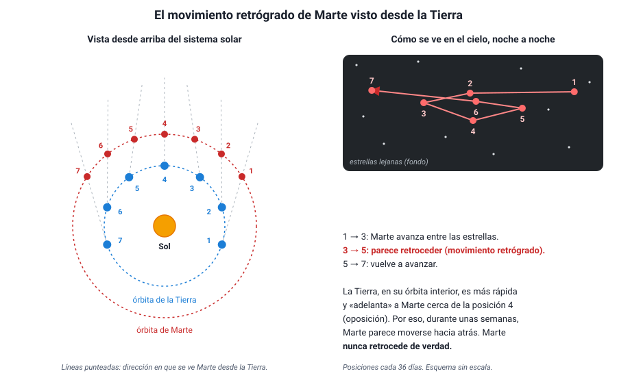
Cualquier modelo del universo debía explicar el movimiento retrógrado. Como verás, el geocéntrico lo hizo con un mecanismo complicado (los epiciclos), y el heliocéntrico lo explicó de forma natural: es un efecto de perspectiva, igual que cuando un auto adelanta a otro en la carretera y, visto desde el más rápido, el más lento parece ir hacia atrás respecto del paisaje lejano.
El retroceso es aparente. Ningún planeta invierte su movimiento alrededor del Sol. Lo que cambia es la dirección en que lo vemos desde una Tierra que también se mueve. Una pregunta típica pide explicar por qué el retrógrado ocurre cuando Marte está más brillante: es el momento en que la Tierra pasa entre el Sol y Marte, y los dos planetas están más cerca.
3. Los modelos geocéntricosIA:1415
Durante unos dos mil años, la explicación aceptada fue que la Tierra está inmóvil en el centro del universo y que todo gira a su alrededor. No era una idea ingenua: era coherente con lo que se veía y con lo que se sabía de física en ese tiempo, y permitía predecir con bastante precisión las posiciones de los astros.
a. Una Tierra esféricaIA:161718
Los griegos ya sabían que la Tierra es esférica, casi dos mil años antes de que alguien la rodeara navegando. Aristóteles (384–322 a. C.) reunió varias evidencias:
- En los eclipses de Luna, la sombra de la Tierra sobre la Luna es siempre un arco de circunferencia. Solo una esfera da una sombra circular en cualquier posición.
- Cuando un barco se aleja, desaparece primero el casco y después las velas, como si bajara tras una curva.
- Al viajar hacia el norte o hacia el sur, cambian las estrellas visibles: algunas aparecen sobre el horizonte y otras desaparecen.
Hacia el año 240 a. C., Eratóstenes, en Alejandría, midió el tamaño de la Tierra con geometría. Sabía que al mediodía del solsticio el Sol quedaba en el cénit en Siena (hoy Asuán), porque iluminaba el fondo de los pozos, mientras que en Alejandría, al norte, una varilla vertical daba una sombra que correspondía a un ángulo de unos 7,2°.
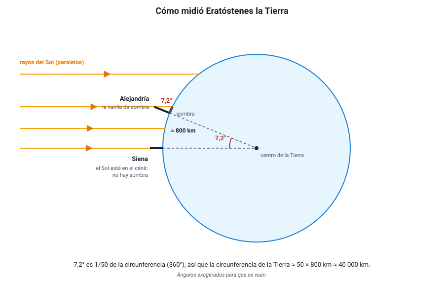
Medir la Tierra con una sombra. Si los rayos del Sol llegan paralelos, el ángulo de la sombra en Alejandría (7,2°) es igual al ángulo que separa a ambas ciudades visto desde el centro de la Tierra. La distancia entre ellas era de unos 800 km (5 000 estadios, en la unidad de la época).
- Fracción de la circunferencia: 7,2° / 360° = 1/50.
- Circunferencia de la Tierra: 50 × 800 km = 40 000 km.
El valor actual es de unos 40 000 km. No se sabe con exactitud cuánto medía el estadio que usó Eratóstenes, así que la precisión de su resultado se discute, pero el método es impecable.
b. El universo de AristótelesIA:192021
Aristóteles tomó el modelo de esferas de Eudoxo y lo convirtió en una descripción física del universo:
- La Tierra, inmóvil, está en el centro. A su alrededor giran, cada uno en una esfera transparente, la Luna, Mercurio, Venus, el Sol, Marte, Júpiter y Saturno. Más allá está la esfera de las estrellas fijas.
- El universo se divide en dos regiones. Bajo la esfera de la Luna está el mundo sublunar, hecho de cuatro elementos (tierra, agua, aire y fuego), donde todo cambia, nace y muere, y donde el movimiento natural es rectilíneo: lo pesado cae hacia el centro y lo liviano sube. Desde la Luna hacia afuera está el mundo supralunar, hecho de un quinto elemento, el éter, perfecto e inmutable, donde el único movimiento natural es el circular uniforme.
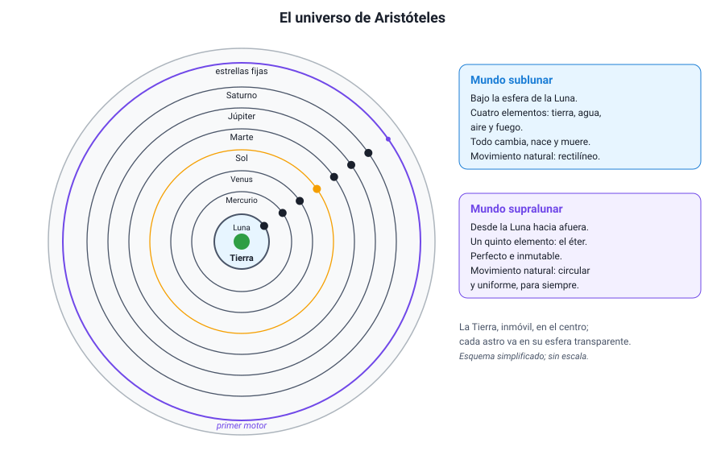
¿Por qué pensaba que la Tierra no se mueve? Sus argumentos eran razonables con lo que se sabía:
- No sentimos ningún movimiento: si la Tierra girara, un objeto lanzado hacia arriba debería caer atrás, y habría un viento constante.
- No se observa paralaje estelar: si la Tierra diera vueltas alrededor del Sol, las estrellas cercanas deberían cambiar un poco de posición respecto de las lejanas a lo largo del año, y eso no se veía.
El argumento de la paralaje era correcto, pero la conclusión no. La paralaje estelar sí existe, pero es tan pequeña, porque las estrellas están lejísimos, que recién se midió en 1838, con telescopio (Friedrich Bessel). Es un buen ejemplo de cómo la falta de una observación puede deberse a que los instrumentos no son suficientemente precisos, no a que el fenómeno no exista.
Ya en la Antigüedad hubo una alternativa: Aristarco de Samos (siglo III a. C.) propuso que el Sol, al que estimó mucho más grande que la Tierra, estaba en el centro y que la Tierra giraba a su alrededor. Para explicar la falta de paralaje, supuso que las estrellas estaban muy lejos. Su idea tuvo poco eco durante casi dos mil años.
c. El sistema de PtolomeoIA:222324
El modelo de esferas no explicaba bien el movimiento retrógrado ni los cambios de brillo de los planetas. Hacia el año 150 d. C., Claudio Ptolomeo, en Alejandría, reunió y perfeccionó el trabajo de astrónomos anteriores en un gran tratado, conocido por su nombre árabe: el Almagesto. Su modelo seguía siendo geocéntrico y usaba solo movimientos circulares, pero los combinaba:
- Epiciclo: cada planeta gira en un círculo pequeño.
- Deferente: el centro del epiciclo recorre un círculo grande alrededor de la Tierra.
- Excéntrica: la Tierra no está exactamente en el centro del deferente.
- Ecuante: el centro del epiciclo se mueve con rapidez angular constante vista desde un punto especial, el ecuante, y no desde el centro.
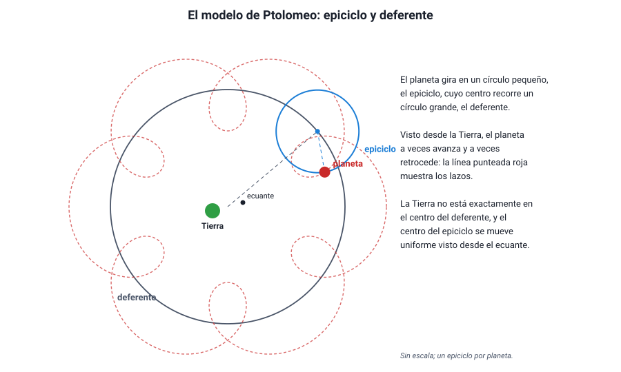
Con estos mecanismos, cuando el planeta está en la parte interior de su epiciclo, su movimiento sobre el epiciclo va en sentido contrario al del deferente y, visto desde la Tierra, retrocede; además está más cerca, y por eso se ve más brillante. Es decir, el modelo explicaba las dos observaciones a la vez.
El sistema de Ptolomeo predecía bastante bien las posiciones de los planetas y se usó durante unos 1 400 años. Su debilidad era otra: necesitaba ajustes distintos para cada planeta y no explicaba por qué, por ejemplo, Mercurio y Venus siempre acompañan al Sol; había que imponerlo alineando sus epiciclos con el Sol.
Un modelo equivocado puede predecir bien. El éxito de Ptolomeo muestra que predecir correctamente no basta para que un modelo sea verdadero: con suficientes ajustes, casi cualquier modelo reproduce los datos. Lo que termina decidiendo entre modelos son las observaciones nuevas que uno explica y el otro no (como las fases de Venus, en la sección 5) y la simplicidad de la explicación.
4. El modelo heliocéntricoIA:2526
a. La propuesta de CopérnicoIA:272829
Nicolás Copérnico (1473–1543), un astrónomo y clérigo polaco, retomó la idea de Aristarco y la desarrolló matemáticamente. Su libro De revolutionibus orbium coelestium («Sobre las revoluciones de las esferas celestes») se publicó en 1543, el año de su muerte. Sus afirmaciones principales:
- El Sol está inmóvil cerca del centro del universo.
- La Tierra es un planeta más: gira alrededor del Sol en un año y rota sobre su eje en un día. El movimiento diario del cielo es un efecto de esa rotación.
- La Luna es el único astro que gira alrededor de la Tierra.
- El orden de los planetas desde el Sol es Mercurio, Venus, Tierra, Marte, Júpiter y Saturno, y mientras más lejos está un planeta, más tarda en dar una vuelta.
- Las estrellas están tan lejos que su paralaje no se puede observar.
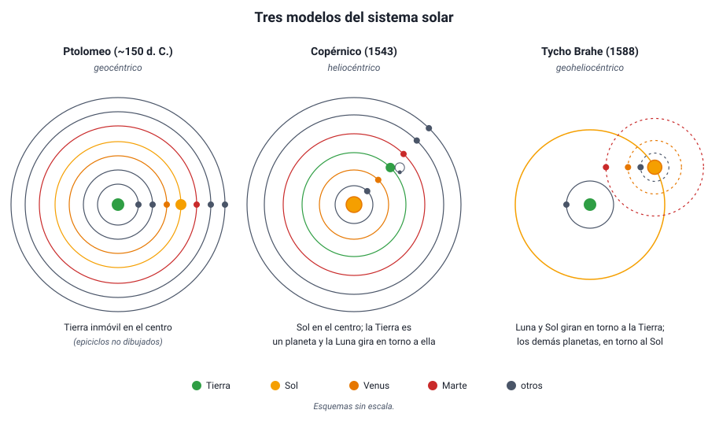
Pero Copérnico conservó una idea antigua: los astros se mueven en círculos perfectos con rapidez uniforme. Como las órbitas reales no son círculos, para ajustar sus predicciones tuvo que seguir usando epiciclos pequeños. Por eso su modelo no era más preciso que el de Ptolomeo, ni mucho más simple en los cálculos.
b. Qué explicaba mejorIA:303132
La ventaja del modelo heliocéntrico no estaba en la precisión, sino en que explicaba de manera natural lo que el geocéntrico tenía que imponer:
| Observación | Modelo geocéntrico (Ptolomeo) | Modelo heliocéntrico (Copérnico) |
|---|---|---|
| Movimiento retrógrado | Epiciclos ajustados para cada planeta | Efecto de perspectiva cuando la Tierra adelanta a un planeta exterior o es adelantada por uno interior |
| Los planetas se ven más brillantes al retroceder | El planeta está en la parte interior de su epiciclo | En ese momento la Tierra y el planeta están más cerca |
| Mercurio y Venus nunca se alejan mucho del Sol | Hay que alinear sus epiciclos con el Sol, sin razón | Sus órbitas están dentro de la de la Tierra |
| Orden y distancias de los planetas | Arbitrarios | Se calculan: los planetas más lejanos tienen períodos más largos |
| Ausencia de paralaje estelar | La Tierra no se mueve | Las estrellas están muy lejos (confirmado en 1838) |
Calcular una distancia con el modelo heliocéntrico. Venus nunca se aleja más de unos 46° del Sol en el cielo. En el modelo heliocéntrico, esa separación máxima ocurre cuando la línea de visión desde la Tierra es tangente a la órbita de Venus, y el triángulo Sol–Venus–Tierra tiene un ángulo recto en Venus. Entonces:
distancia Sol–Venus = distancia Sol–Tierra × sen 46° ≈ 1 UA × 0,72 = 0,72 UA.
Con razonamientos así, Copérnico calculó las distancias relativas de los planetas al Sol, muy cerca de los valores actuales. En el modelo de Ptolomeo, esas distancias no se podían deducir.
Heliocéntrico no significa «el Sol es el centro del universo». Hoy sabemos que el Sol es el centro del sistema solar, pero es una estrella más entre cientos de miles de millones de la Vía Láctea, y gira alrededor del centro de la galaxia. En la PAES, «modelo heliocéntrico» se refiere al sistema solar.
c. Tycho Brahe: medir mejorIA:333435
Para decidir entre modelos que predicen casi lo mismo, hacían falta mejores datos. El danés Tycho Brahe (1546–1601) construyó, antes de que existiera el telescopio, los instrumentos más precisos de su época, en su observatorio de la isla de Hven. Durante unos veinte años midió las posiciones de los planetas con un error de alrededor de 1 minuto de arco (1/60 de grado, unas 30 veces menos que el tamaño aparente de la Luna llena).
Dos observaciones suyas golpearon la idea de un cielo inmutable:
- En 1572 apareció una «estrella nueva» en la constelación de Casiopea (hoy se sabe que era una supernova). Tycho mostró que no tenía paralaje diaria, así que estaba más allá de la Luna: el mundo supralunar sí cambia.
- En 1577 estudió un gran cometa y demostró que también estaba más lejos que la Luna y que atravesaba las regiones de los planetas, lo que era imposible si existieran esferas sólidas.
Aun así, Tycho no aceptó que la Tierra se moviera, porque tampoco observaba paralaje estelar. Propuso un modelo intermedio, geoheliocéntrico (1588): la Luna y el Sol giran alrededor de la Tierra inmóvil, y los demás planetas giran alrededor del Sol. Geométricamente, este modelo explica las mismas observaciones que el de Copérnico.
Cuidado con la trampa de las fases de Venus. Las fases de Venus que observó Galileo (sección 5) refutan el modelo de Ptolomeo, pero no el de Tycho, en el que Venus también gira alrededor del Sol. Una pregunta de tipo Evaluar puede preguntar justamente qué modelo queda descartado por una observación.
5. Galileo y el telescopioIA:3637
a. Un instrumento nuevoIA:383940
Galileo Galilei (1564–1642) no inventó el telescopio: los primeros se fabricaron en los Países Bajos en 1608. Pero al enterarse de su existencia construyó los suyos, llegó a unos 20 a 30 aumentos, y a fines de 1609 fue de los primeros en apuntarlo sistemáticamente al cielo. En marzo de 1610 publicó sus primeros descubrimientos en un pequeño libro, Sidereus Nuncius («El mensajero sideral»).
La importancia de Galileo para la ciencia no está solo en lo que vio, sino en cómo trabajó: usó un instrumento para ampliar los sentidos, registró sus observaciones durante semanas, las dibujó y midió, y las usó como evidencia para poner a prueba los modelos. Es un ejemplo temprano de lo que hoy llamamos método científico.
b. Lo que vio y qué significabaIA:414243
| Observación | Qué mostraba | Contra qué idea |
|---|---|---|
| Montañas y cráteres en la Luna; midió su altura por el largo de sus sombras | La Luna es un mundo irregular, parecido a la Tierra | La perfección del mundo supralunar (Aristóteles) |
| Manchas solares que se mueven sobre el disco del Sol | El Sol tiene «imperfecciones» y rota sobre su eje | La perfección e inmutabilidad del cielo |
| La Vía Láctea se resuelve en innumerables estrellas | Hay muchas más estrellas de las que se ven a simple vista; el universo es mucho mayor | La idea de un cosmos pequeño y cerrado |
| Cuatro lunas que giran alrededor de Júpiter (enero de 1610) | Existen cuerpos que giran en torno a otro centro que no es la Tierra; un planeta en movimiento puede llevar lunas consigo | Que todo gira en torno a la Tierra; que una Tierra en movimiento «perdería» a su Luna |
| Fases completas de Venus, con cambio de tamaño (fines de 1610) | Venus gira alrededor del Sol | El modelo de Ptolomeo |
Las cuatro lunas de Júpiter que descubrió, Ío, Europa, Ganímedes y Calisto, se llaman hoy satélites galileanos.
La observación decisiva fue la de las fases de Venus. En el modelo de Ptolomeo, Venus siempre está entre la Tierra y el Sol (su epiciclo acompaña al Sol), así que desde la Tierra se vería siempre con su cara iluminada mirando hacia el lado opuesto: solo nueva o creciente. Galileo, en cambio, vio a Venus pasar por todas las fases, casi llena y pequeña cuando está al otro lado del Sol, y creciente y grande cuando está cerca de la Tierra. Eso solo es posible si Venus gira alrededor del Sol.
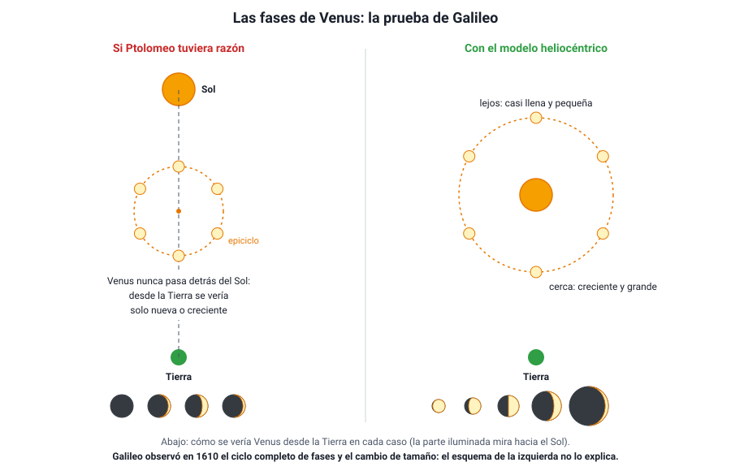
Qué probó y qué no probó Galileo. Las fases de Venus refutaron el modelo de Ptolomeo, pero no demostraron por sí solas el de Copérnico: el modelo de Tycho Brahe también las explica. Las lunas de Júpiter mostraron que no todo gira en torno a la Tierra, pero tampoco prueban que la Tierra se mueva. Una evidencia puede descartar un modelo sin confirmar otro en particular. Esa distinción aparece mucho en las preguntas de tipo Evaluar.
c. ¿Por qué no sentimos que la Tierra se mueve?IA:444546
El argumento más fuerte contra el movimiento de la Tierra era físico: si la Tierra gira, una piedra soltada desde una torre debería caer atrás, y los pájaros se quedarían rezagados. Galileo lo respondió con una idea que viste en el capítulo 5: la relatividad de Galileo y la inercia.
En su Diálogo sobre los dos máximos sistemas del mundo (1632) propuso un experimento mental: en la bodega de un barco que navega con velocidad constante, sin sacudidas, las moscas vuelan igual en todas direcciones, el agua cae de una botella en el mismo recipiente de abajo y una piedra soltada desde el mástil cae al pie del mástil. Todo ocurre igual que con el barco detenido, porque todos los objetos comparten el movimiento del barco. De la misma forma, la piedra y el aire comparten el movimiento de la Tierra, y no hay experimento mecánico dentro de ella que revele su movimiento uniforme.
El juicio a Galileo. El Diálogo defendía el modelo de Copérnico, que la Iglesia católica había prohibido enseñar como verdadero en 1616. En 1633 Galileo fue juzgado por la Inquisición, obligado a retractarse y condenado a prisión domiciliaria, en la que vivió hasta su muerte en 1642. En 1992, el papa Juan Pablo II reconoció públicamente el error cometido en su contra. El conflicto mezcló ciencia, religión, política y personalidades, y todavía se discute cómo interpretarlo.
6. Las leyes de KeplerIA:4748
a. De los datos de Tycho a las leyesIA:495051
Johannes Kepler (1571–1630), un matemático alemán convencido del modelo de Copérnico, trabajó desde 1600 como ayudante de Tycho Brahe en Praga. Al morir Tycho, en 1601, Kepler heredó sus observaciones, las más precisas de la época, y se propuso encontrar la órbita de Marte.
Probó durante años con combinaciones de círculos. Su mejor modelo circular se apartaba de las observaciones de Tycho en 8 minutos de arco como máximo, un error pequeño, pero ocho veces mayor que la precisión de Tycho. Kepler confió en los datos, abandonó el círculo, una idea que venía desde Aristóteles, y encontró que la órbita de Marte es una elipse. Publicó sus dos primeras leyes en Astronomia Nova (1609) y la tercera en Harmonices Mundi (1619).
Leyes empíricas. Las leyes de Kepler describen cómo se mueven los planetas a partir de los datos, pero no explican por qué. La explicación llegó en 1687, con la gravitación universal de Newton (sección 7). Esta distinción entre describir y explicar es importante en la PAES: una ley resume regularidades observadas; una teoría explica su causa.
b. Primera ley: órbitas elípticasIA:525354
Los planetas describen órbitas elípticas, con el Sol en uno de los focos.
Una elipse es una curva cerrada en la que la suma de las distancias de cualquier punto a dos puntos fijos, los focos, es siempre la misma. Se puede dibujar con dos clavos, un hilo y un lápiz. Mientras más separados están los focos, más «achatada» es la elipse; si los focos coinciden, la elipse es una circunferencia. Lo alargada que es una elipse se mide con su excentricidad (e), entre 0 (circunferencia) y casi 1 (muy alargada).
- El Sol está en un foco; el otro foco está vacío. El Sol no está en el centro de la elipse.
- El punto de la órbita más cercano al Sol es el perihelio; el más lejano, el afelio.
- El semieje mayor (a), la mitad del eje más largo, equivale a la distancia media del planeta al Sol.
Las órbitas de los planetas son elipses muy poco excéntricas: la de la Tierra tiene e ≈ 0,017 y la de Marte, e ≈ 0,093. Dibujadas a escala se ven casi como circunferencias; por eso el modelo de Copérnico funcionaba razonablemente bien. Los cometas, en cambio, tienen órbitas muy alargadas: la del cometa Halley tiene e ≈ 0,97.
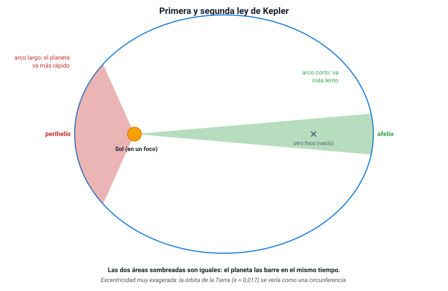
c. Segunda ley: áreas iguales en tiempos igualesIA:555657
La línea que une el Sol con un planeta barre áreas iguales en tiempos iguales.
Cerca del Sol, la línea Sol–planeta es corta; para barrer la misma área en el mismo tiempo, el planeta debe recorrer un arco más largo. Por lo tanto:
- En el perihelio el planeta se mueve más rápido.
- En el afelio se mueve más lento.
La Tierra pasa por el perihelio a comienzos de enero, a unos 30,3 km/s, y por el afelio a comienzos de julio, a unos 29,3 km/s. Una consecuencia curiosa: en el hemisferio sur, el verano (cuando la Tierra va más rápido) es unos días más corto que el invierno.
La segunda ley habla de áreas, no de distancias. El planeta no recorre distancias iguales en tiempos iguales: recorre más distancia cerca del Sol. Lo que se mantiene constante es el área barrida por unidad de tiempo. Si un gráfico muestra la rapidez de un planeta a lo largo de su órbita, el máximo corresponde al perihelio.
d. Tercera ley: la ley de los períodosIA:585960
El cuadrado del período orbital de un planeta es proporcional al cubo del semieje mayor de su órbita.
T2 / a3 = constante, la misma para todos los planetas que giran alrededor del Sol.
- T: período orbital (tiempo en dar una vuelta).
- a: semieje mayor (distancia media al Sol).
Si T se mide en años y a en unidades astronómicas (1 UA ≈ 150 millones de km, la distancia media Tierra–Sol), la constante vale 1 para la Tierra y, por lo tanto, para todos los planetas: T2 = a3.
| Planeta | a (UA) | T (años) | a3 | T2 |
|---|---|---|---|---|
| Mercurio | 0,387 | 0,241 | 0,058 | 0,058 |
| Venus | 0,723 | 0,615 | 0,378 | 0,378 |
| Tierra | 1,000 | 1,000 | 1,00 | 1,00 |
| Marte | 1,524 | 1,881 | 3,54 | 3,54 |
| Júpiter | 5,20 | 11,86 | 141 | 141 |
| Saturno | 9,54 | 29,5 | 868 | 870 |
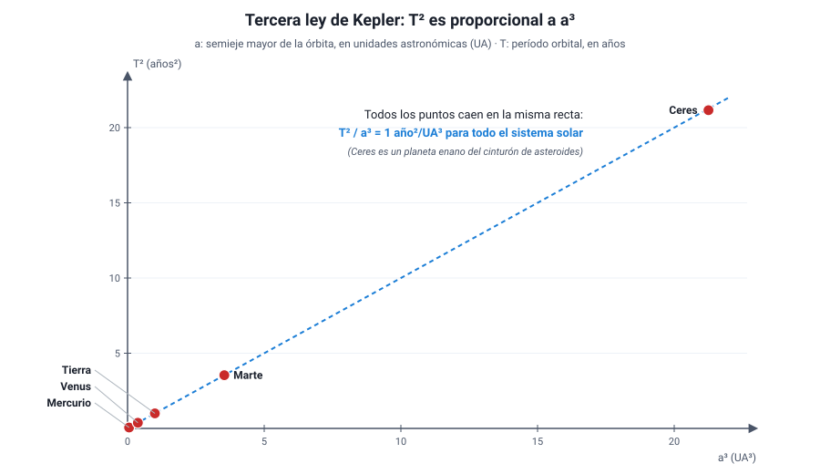
Usar la tercera ley. Un asteroide gira alrededor del Sol con un semieje mayor de 4 UA. ¿Cuál es su período?
- Datos: a = 4 UA.
- Fórmula: T2 = a3 (en años y UA).
- Reemplazo: T2 = 43 = 64 → T = √64.
- Resultado: T = 8 años.
Al revés: el cometa Halley tarda unos 76 años en volver. Su semieje mayor es a = ∛(762) = ∛5 776 ≈ 18 UA.
Errores típicos: suponer que el período es proporcional a la distancia (4 UA → 4 años), o elevar al revés (T = 42/3 ≈ 2,5 años).
Mientras más lejos, más lento y más largo. Un planeta más alejado del Sol tiene un recorrido más largo y además se mueve más despacio, por eso su período crece más rápido que su distancia: al doble de distancia, el período es unas 2,8 veces mayor (√8). Ojo: la tercera ley con la constante 1 año²/UA³ solo vale para cuerpos que giran alrededor del Sol. Para comparar las lunas de Júpiter entre sí hay que usar otra constante, porque giran alrededor de otro cuerpo central.
7. Newton y el sistema solar actualIA:6162
a. La síntesis de NewtonIA:636465
Kepler describió cómo se mueven los planetas; Isaac Newton (1643–1727) explicó por qué. En su libro Principia (1687) reunió el trabajo de Copérnico, Galileo y Kepler en una sola teoría, con sus tres leyes del movimiento (capítulo 6) y la ley de gravitación universal:
F = G · m1 · m2 / d2
- F: fuerza de atracción entre dos cuerpos (N).
- m1, m2: masas de los cuerpos (kg).
- d: distancia entre sus centros (m).
- G = 6,67 × 10−11 N·m²/kg²: constante de gravitación universal.
Tres ideas centrales:
- Es universal. La misma fuerza que hace caer una manzana mantiene a la Luna en su órbita y a los planetas girando alrededor del Sol. Ya no hay una física para la Tierra y otra para el cielo, como en Aristóteles.
- Disminuye con el cuadrado de la distancia. Al doble de distancia, la fuerza es la cuarta parte. Newton comprobó que la Luna, que está unas 60 veces más lejos del centro de la Tierra que una manzana, «cae» hacia la Tierra con una aceleración unas 3 600 veces (60²) menor que 9,8 m/s².
- Explica las leyes de Kepler. Con esta fuerza, Newton dedujo matemáticamente las tres leyes: las órbitas elípticas, las áreas iguales y la relación T² ∝ a³. Las leyes de Kepler pasaron a ser consecuencias de una teoría más general.
¿Por qué la Luna no cae a la Tierra? Sí «cae»: la gravedad la acelera constantemente hacia la Tierra. Pero la Luna tiene además una gran velocidad tangencial (unos 1 km/s). Si la gravedad desapareciera, seguiría en línea recta por inercia; como la gravedad la desvía continuamente, describe una órbita. Newton lo imaginó con un cañón en la cima de una montaña: si la bala sale suficientemente rápido, la superficie de la Tierra se curva tanto como la trayectoria de la bala, y esta nunca toca el suelo.
La teoría de Newton permitió predicciones espectaculares: Edmond Halley calculó el regreso del cometa que lleva su nombre para 1758, y se cumplió; y en 1846 se descubrió Neptuno en la posición calculada a partir de las pequeñas desviaciones que causaba en la órbita de Urano.
En órbita no «falta» la gravedad. Los astronautas de la Estación Espacial Internacional flotan porque ellos y la estación caen juntos alrededor de la Tierra, no porque ahí no haya gravedad: a 400 km de altura, la gravedad es todavía cerca del 90 % de la de la superficie.
b. El sistema solar hoyIA:666768
El sistema solar se formó hace unos 4 600 millones de años a partir de una nube de gas y polvo que colapsó por su propia gravedad. Hoy sabemos que:
- El Sol concentra más del 99,8 % de la masa del sistema.
- Hay 8 planetas, que giran alrededor del Sol en el mismo sentido y en órbitas casi circulares y casi en un mismo plano:
- Rocosos o terrestres: Mercurio, Venus, Tierra y Marte. Pequeños, densos y con superficie sólida.
- Gigantes gaseosos: Júpiter y Saturno, formados sobre todo por hidrógeno y helio.
- Gigantes helados: Urano y Neptuno.
- Planetas enanos, como Ceres (en el cinturón de asteroides), Plutón y Eris. Plutón fue considerado planeta hasta 2006, cuando la Unión Astronómica Internacional lo reclasificó porque no ha «limpiado» su órbita de otros cuerpos.
- Cuerpos menores: el cinturón de asteroides, entre Marte y Júpiter; el cinturón de Kuiper, más allá de Neptuno; y los cometas, cuerpos de hielo y polvo que al acercarse al Sol forman una cola.
- La mayoría de los planetas tiene lunas: la Tierra tiene una; Júpiter y Saturno, decenas.
Un modelo que se sigue corrigiendo. Que el número de planetas haya cambiado (Urano se descubrió en 1781, Neptuno en 1846, Plutón en 1930 y fue reclasificado en 2006) muestra que el conocimiento del sistema solar se revisa con nuevas observaciones y nuevas definiciones. Lo mismo pasó con el paso del modelo geocéntrico al heliocéntrico.
c. Las escalas del universoIA:697071
Las distancias astronómicas son tan grandes que se usan unidades especiales:
| Unidad | Equivale a | Se usa para |
|---|---|---|
| Unidad astronómica (UA) | ≈ 1,5 × 108 km (distancia media Tierra–Sol) | Distancias dentro del sistema solar |
| Año luz | ≈ 9,46 × 1012 km (distancia que recorre la luz en un año) | Distancias a estrellas y galaxias |
| Pársec (pc) | ≈ 3,26 años luz; 1 megapársec (Mpc) = un millón de pársecs | Distancias en astronomía profesional |
Algunas referencias: la luz del Sol tarda unos 8 minutos en llegar a la Tierra; la estrella más cercana después del Sol, Próxima Centauri, está a unos 4,2 años luz; la Vía Láctea, nuestra galaxia, mide unos 100 000 años luz de diámetro y tiene cientos de miles de millones de estrellas; y la galaxia grande más cercana, Andrómeda, está a unos 2,5 millones de años luz. Desde Chile se ven a simple vista las Nubes de Magallanes, dos galaxias pequeñas vecinas de la nuestra.
Mirar lejos es mirar al pasado. La luz tarda en llegar: vemos el Sol como era hace 8 minutos y Andrómeda como era hace 2,5 millones de años. Por eso los telescopios que observan galaxias muy lejanas estudian el universo joven. Y otra confusión frecuente: el año luz es una unidad de distancia, no de tiempo.
Convertir un año luz a kilómetros. La luz viaja a c = 3 × 105 km/s. Un año tiene unos 3,15 × 107 s.
d = c · t = 3 × 105 km/s × 3,15 × 107 s ≈ 9,5 × 1012 km.
Es decir, casi diez billones de kilómetros.
8. El origen del universo: la teoría del Big BangIA:7273
A comienzos del siglo XX, la mayoría de los científicos, incluido Albert Einstein, pensaba que el universo era estático y eterno. En pocas décadas, nuevas observaciones mostraron que el universo cambia, que se está expandiendo y que tuvo un comienzo.
a. Un universo en expansiónIA:747576
La luz de una estrella o de una galaxia, al pasar por un prisma o una red de difracción, forma un espectro con líneas oscuras en posiciones características de cada elemento químico, como una huella digital (capítulo 3). Entre 1912 y 1925, Vesto Slipher midió los espectros de decenas de galaxias y notó que en la mayoría esas líneas aparecen desplazadas hacia el rojo, es decir, hacia longitudes de onda mayores. Es el corrimiento al rojo:
z = Δλ / λ0
- z: corrimiento al rojo (sin unidad).
- Δλ: diferencia entre la longitud de onda observada y la de laboratorio.
- λ0: longitud de onda medida en el laboratorio (en reposo).
Para galaxias no muy lejanas, la rapidez con que se alejan es aproximadamente v ≈ z · c, como en el efecto Doppler (capítulo 1): si la fuente se aleja, la onda que llega se «estira».
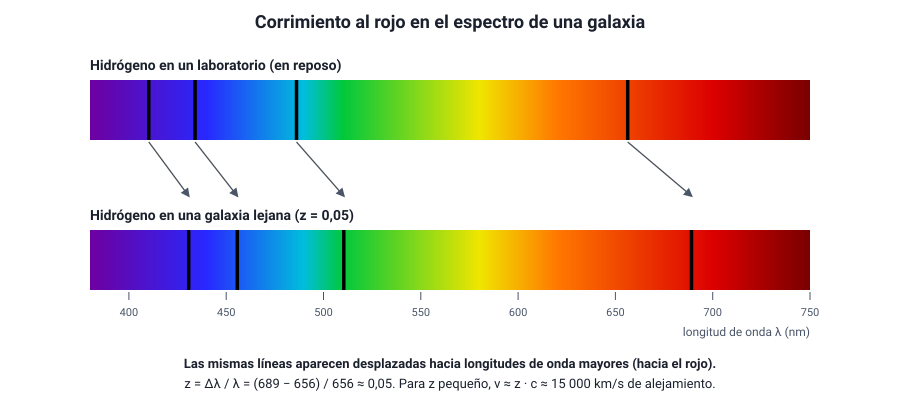
En 1927, el sacerdote y físico belga Georges Lemaître, usando la relatividad general, propuso que el universo se expande y predijo que las galaxias deberían alejarse con una rapidez proporcional a su distancia (el ruso Alexander Friedmann ya había encontrado en 1922 soluciones de un universo en expansión). En 1929, Edwin Hubble, que antes había demostrado que existen galaxias fuera de la nuestra, midió las distancias de varias galaxias y las comparó con su corrimiento al rojo. Encontró la relación que hoy se llama ley de Hubble-Lemaître:
v = H0 · d
- v: rapidez de alejamiento de la galaxia (km/s).
- d: distancia a la galaxia (en megapársecs, Mpc; 1 Mpc ≈ 3,26 millones de años luz).
- H0: constante de Hubble, hoy estimada entre unos 67 y 73 km/s por megapársec.
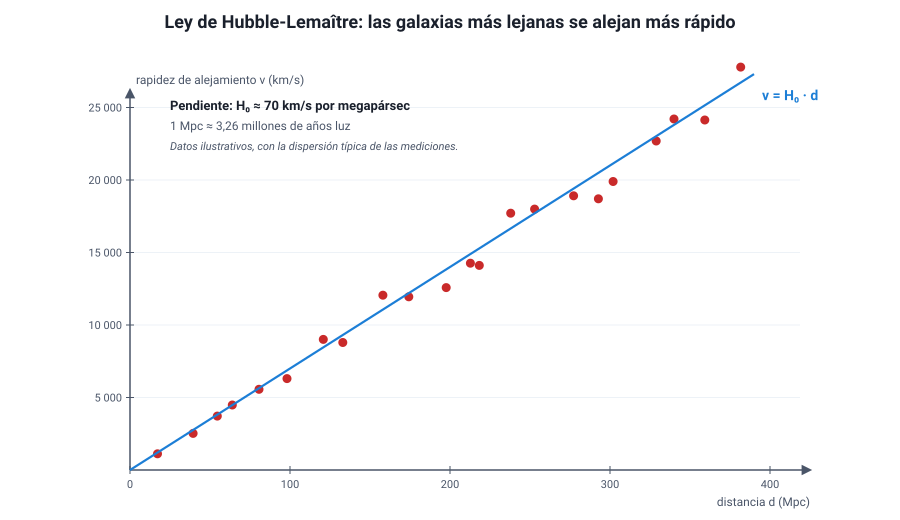
Distancia a una galaxia. El espectro de una galaxia muestra la línea roja del hidrógeno (656 nm en el laboratorio) en 669 nm. Considera c = 3 × 105 km/s y H0 = 70 km/s/Mpc.
- Corrimiento: z = (669 − 656) / 656 = 13 / 656 ≈ 0,02.
- Rapidez: v ≈ z · c = 0,02 × 3 × 105 km/s = 6 000 km/s.
- Distancia: d = v / H0 = 6 000 / 70 ≈ 86 Mpc, unos 280 millones de años luz.
¿Qué significa que todas las galaxias se alejen? No que estemos en el centro. Imagina un pan con pasas que se infla en el horno: la masa se expande y cada pasa ve a todas las demás alejarse, más rápido mientras más lejos están. No hay una pasa central. Del mismo modo, lo que se expande es el espacio entre las galaxias; las galaxias no viajan a través del espacio desde un punto de partida. Por eso, en rigor, el corrimiento al rojo cosmológico no es un efecto Doppler: la luz se estira porque el espacio por el que viaja se estira.
Tres confusiones frecuentes. (1) «Todas se alejan de nosotros, así que somos el centro»: falso, cualquier observador en cualquier galaxia ve lo mismo. (2) «Las galaxias cercanas también se alejan»: no siempre; en las más cercanas domina la gravedad y algunas se acercan, como Andrómeda, que muestra corrimiento al azul. (3) «Se expanden las galaxias, las estrellas y los átomos»: no, la gravedad y las demás fuerzas los mantienen unidos; se separan los grupos de galaxias entre sí.
b. Qué dice la teoría del Big BangIA:777879
Si las galaxias se separan, en el pasado estaban más juntas. Retrocediendo en el tiempo, todo el universo observable estuvo concentrado en un estado extremadamente denso y caliente. La teoría del Big Bang describe la evolución del universo desde ese estado hasta hoy:
- El universo tiene una edad: unos 13 800 millones de años, según las mediciones de la radiación de fondo (satélite Planck). Una estimación simple es el «tiempo de Hubble», 1/H0: con 70 km/s/Mpc, da unos 14 000 millones de años.
- Desde entonces, el universo se expande y se enfría. A medida que se enfrió, se formaron partículas, luego núcleos, átomos, estrellas y galaxias.
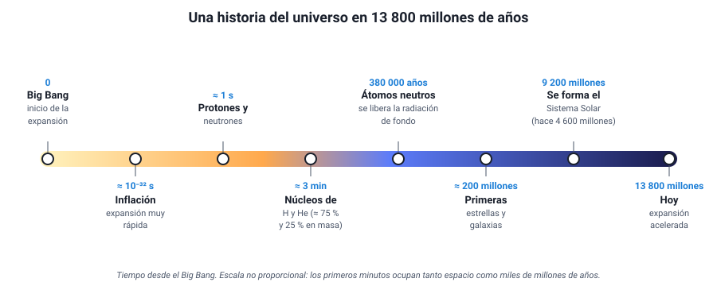
| Tiempo desde el Big Bang | Qué ocurre |
|---|---|
| Fracciones ínfimas de segundo | Inflación: una expansión extremadamente rápida que habría dejado el universo casi uniforme |
| ≈ 1 segundo | Existen protones, neutrones, electrones y fotones; demasiado calor para formar núcleos |
| ≈ 3 a 20 minutos | Nucleosíntesis primordial: se forman núcleos de hidrógeno y de helio, y trazas de litio |
| ≈ 380 000 años | La temperatura baja a unos 3 000 K y se forman átomos neutros; la luz puede viajar libremente y el universo se vuelve transparente. Esa luz es la radiación de fondo |
| ≈ 200 millones de años | Se encienden las primeras estrellas y se forman las primeras galaxias |
| ≈ 9 200 millones de años (hace 4 600 millones) | Se forman el Sol y el sistema solar |
| 13 800 millones de años | Hoy: el universo sigue expandiéndose, y lo hace cada vez más rápido |
El Big Bang no fue una explosión en un punto del espacio. No hubo un centro desde el que saliera disparada la materia hacia un espacio vacío: fue una expansión del espacio mismo, que ocurrió en todas partes a la vez. Tampoco explica «qué había antes» ni la causa del comienzo: la teoría describe la evolución del universo desde un estado inicial muy caliente y denso. Su nombre, además, se lo dio en 1949 el astrónomo Fred Hoyle, que defendía una teoría rival.
c. Las evidencias del Big BangIA:808182
Una teoría científica se acepta cuando sus predicciones se confirman con observaciones. El Big Bang se apoya en varias evidencias independientes:
| Evidencia | Qué se observa | Por qué apoya el Big Bang |
|---|---|---|
| Expansión del universo | Corrimiento al rojo de las galaxias, proporcional a su distancia (ley de Hubble-Lemaître) | Si el universo se expande, en el pasado estuvo concentrado |
| Radiación de fondo de microondas | Una radiación muy débil que llega de todas las direcciones por igual, con el espectro de un cuerpo a 2,7 K | Es el «resplandor» del universo caliente de hace 380 000 años, enfriado y estirado por la expansión hasta las microondas. Se predijo antes de detectarse |
| Abundancia de elementos livianos | En el universo hay, en masa, cerca de 75 % de hidrógeno y 25 % de helio, en todas partes | Es la proporción que predice la nucleosíntesis de los primeros minutos; las estrellas no alcanzan a producir tanto helio |
| Evolución de las galaxias | Las galaxias muy lejanas, que vemos como eran hace miles de millones de años, son distintas de las cercanas: más pequeñas, irregulares y con más cuásares | El universo cambia con el tiempo, como predice una teoría con historia |
La radiación de fondo fue la evidencia decisiva. George Gamow, Ralph Alpher y Robert Herman habían predicho en 1948 que el universo debía estar lleno de una radiación remanente de pocos kelvin. En 1964–1965, Arno Penzias y Robert Wilson, que trabajaban con una antena de radio en Estados Unidos, detectaron por casualidad un «ruido» de microondas que venía de todas las direcciones y que no podían eliminar. Era esa radiación. Recibieron el Premio Nobel de Física en 1978. Después, los satélites COBE (1989), WMAP (2001) y Planck (2009) la midieron con enorme detalle: su temperatura es de 2,725 K y tiene pequeñísimas variaciones, de 1 parte en 100 000, que son las «semillas» de las galaxias.
¿Por qué microondas? Según la ley de Wien, la longitud de onda en que un cuerpo emite con más intensidad es inversamente proporcional a su temperatura: λmáx ≈ 2,9 × 10−3 m·K / T.
- A 3 000 K (cuando se liberó): λmáx ≈ 2,9 × 10−3 / 3 000 ≈ 1 × 10−6 m, en el infrarrojo cercano, muy cerca de la luz visible.
- Hoy, a 2,7 K: λmáx ≈ 2,9 × 10−3 / 2,7 ≈ 1,1 × 10−3 m = 1,1 mm, en las microondas.
La expansión del universo estiró esa radiación unas 1 100 veces.
Evidencia versus interpretación. En las preguntas de tipo Evaluar, distingue lo observado (el corrimiento al rojo, la radiación de 2,7 K, el 25 % de helio) de la conclusión que se saca (el universo se expande, estuvo caliente y denso). Una sola observación rara vez prueba una teoría; lo que da fuerza al Big Bang es que varias evidencias independientes apuntan a lo mismo.
9. Evolución y destino del universoIA:8384
a. Una teoría rival: el estado estacionarioIA:858687
La ciencia avanza comparando explicaciones. En 1948, Hermann Bondi, Thomas Gold y Fred Hoyle propusieron la teoría del estado estacionario: el universo se expande, pero no tuvo un comienzo y se ve igual en todas las épocas. Para que su densidad no disminuya con la expansión, suponían que se crea materia continuamente en el espacio vacío, en cantidades tan pequeñas que no se podrían detectar directamente.
Durante unos quince años, ambas teorías compitieron, porque las dos explicaban la expansión. Las observaciones las separaron:
| Observación | Big Bang | Estado estacionario |
|---|---|---|
| Expansión (ley de Hubble-Lemaître) | La explica | La explica |
| Radiación de fondo de microondas (1965) | La predice | No la explica: sin un pasado caliente y denso, no hay de dónde salga |
| 25 % de helio en todas partes | Lo predice | No lo explica: las estrellas producen muy poco helio |
| El universo lejano (antiguo) es distinto del cercano | Lo predice: el universo evoluciona | Lo contradice: el universo debería verse igual en todas las épocas |
Tras el descubrimiento de la radiación de fondo, la mayoría de los científicos abandonó el estado estacionario. Hoy el Big Bang es la teoría aceptada, aunque sigue en revisión: por ejemplo, las dos formas de medir H0 dan valores distintos (unos 67 y 73 km/s/Mpc), una discrepancia llamada «tensión de Hubble» que aún no se explica.
Otras ideas sobre el origen. Existen hipótesis como la de un universo cíclico u oscilante, que se expande y se contrae indefinidamente (a veces llamado Big Bounce, «gran rebote»), o la de muchos universos. Son propuestas teóricas que, por ahora, no tienen evidencias que las favorezcan sobre el modelo estándar.
b. Lo que no vemos: materia oscura y energía oscuraIA:888990
Al medir el universo con más precisión aparecieron dos sorpresas:
- Materia oscura. En los años 70, la astrónoma estadounidense Vera Rubin midió cómo giran las estrellas en las galaxias espirales. Las estrellas de las orillas giran tan rápido como las del interior, cuando, según la gravitación de Newton y la materia visible, deberían ir más lento (como los planetas lejanos del Sol, sección 6). Debe haber mucha más masa que la que vemos: una materia que no emite ni absorbe luz y que se detecta solo por su gravedad. También lo muestran los cúmulos de galaxias y la forma en que desvían la luz de objetos lejanos (lentes gravitacionales). Todavía no se sabe de qué está hecha.
- Energía oscura. Se esperaba que la gravedad frenara la expansión. En 1998, dos equipos que medían la distancia a supernovas muy lejanas (un tipo de explosión estelar que sirve como «vela estándar», porque todas tienen casi el mismo brillo máximo) encontraron que se veían más débiles de lo esperado: están más lejos de lo previsto, porque la expansión se está acelerando. A lo que causa esa aceleración se le llama energía oscura. El descubrimiento recibió el Premio Nobel de Física en 2011.
Chile en el Nobel de 2011. La técnica para medir distancias con supernovas se perfeccionó con el proyecto Calán/Tololo (1989–1996), de la Universidad de Chile y el Observatorio Interamericano de Cerro Tololo, liderado entre otros por los astrónomos chilenos José Maza y Mario Hamuy. La Academia Sueca de Ciencias reconoció su aporte esencial al descubrimiento de la expansión acelerada.
Según las mediciones del satélite Planck, el contenido del universo se reparte aproximadamente así:
| Componente | Porcentaje aproximado | Qué es |
|---|---|---|
| Materia ordinaria | ≈ 5 % | Todo lo formado por átomos: estrellas, planetas, gas, nosotros |
| Materia oscura | ≈ 27 % | Materia invisible que se detecta por su gravedad |
| Energía oscura | ≈ 68 % | Lo que acelera la expansión; su naturaleza es desconocida |
Todo lo que vemos es solo cerca del 5 %. Que se desconozca el 95 % del contenido del universo no invalida el Big Bang, pero muestra que el modelo está incompleto. En la PAES, lo importante es reconocer qué evidencia llevó a cada idea: las velocidades de rotación de las galaxias, a la materia oscura; el brillo de las supernovas lejanas, a la energía oscura.
c. ¿Cómo terminará el universo?IA:919293
El destino del universo depende de la competencia entre dos efectos: la gravedad de toda la materia, que tiende a frenar la expansión, y la energía oscura, que la acelera. Se han propuesto varios escenarios:
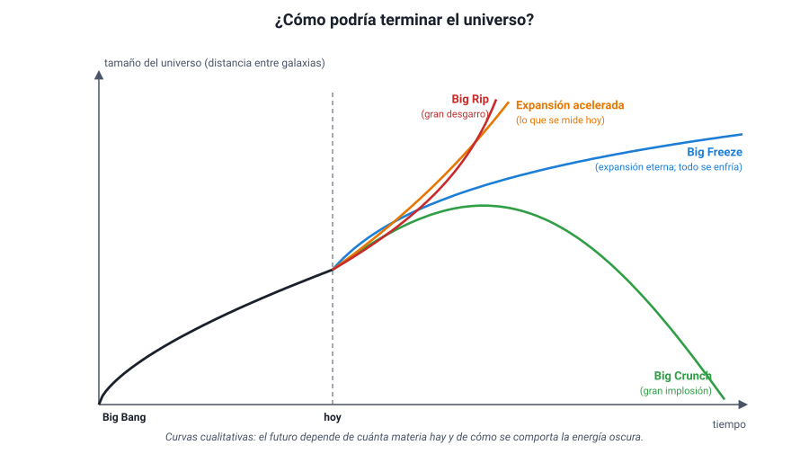
| Escenario | Qué ocurriría | Cuándo ocurriría |
|---|---|---|
| Big Crunch («gran implosión») | La gravedad detiene la expansión y el universo empieza a contraerse, hasta volver a un estado muy denso y caliente, como un Big Bang al revés | Si hubiera suficiente materia y la energía oscura no dominara (o se debilitara y cambiara de signo) |
| Big Freeze («gran congelamiento» o muerte térmica) | El universo se expande para siempre; las galaxias se alejan, las estrellas agotan su combustible y se apagan, y todo se enfría hasta acercarse al cero absoluto | Si la expansión continúa indefinidamente, como indican las observaciones actuales |
| Big Rip («gran desgarro») | La energía oscura aumenta con el tiempo y la expansión se vuelve tan violenta que desgarra galaxias, sistemas planetarios, estrellas y finalmente átomos | Si la energía oscura se hiciera cada vez más intensa |
Con las mediciones actuales, el escenario más probable es una expansión eterna y acelerada, que lleva a un Big Freeze. Pero la respuesta depende de la naturaleza de la energía oscura, que no se conoce: en 2024 y 2025, el proyecto DESI encontró indicios, todavía no confirmados, de que la energía oscura podría estar debilitándose con el tiempo. Si eso se confirma, los escenarios tendrían que revisarse. Es un buen ejemplo de conocimiento científico provisorio, que cambia con las evidencias.
Chile, ventana al universo. El norte de Chile tiene cielos despejados casi todo el año, aire muy seco, gran altitud y poca contaminación lumínica. Por eso ahí se instalaron observatorios como Cerro Tololo (1967), La Silla (1969), Las Campanas, el VLT en Paranal (primera luz en 1998), ALMA, un radiotelescopio de 66 antenas a unos 5 000 m de altura en el llano de Chajnantor (inaugurado en 2013), y el Observatorio Vera C. Rubin en Cerro Pachón (primeras imágenes en 2025). En Cerro Armazones se construye el ELT, con un espejo de 39 m, cuya primera luz está prevista para 2029. Chile concentra hoy cerca del 40 % de la capacidad mundial de observación astronómica, y se proyecta que supere el 60 % hacia 2030.
Ejemplos PAES resueltos
Cuatro ítems al estilo de la prueba, resueltos paso a paso. Cúbrelos primero y después compara.
Ejemplo 1 (Evaluar). A comienzos del siglo XVII competían tres modelos del sistema solar: el de Ptolomeo (todo gira en torno a la Tierra, con Venus en un epiciclo siempre entre la Tierra y el Sol), el de Copérnico (los planetas, incluida la Tierra, giran en torno al Sol) y el de Tycho Brahe (el Sol gira en torno a la Tierra, y los demás planetas, en torno al Sol). En 1610, Galileo observó que Venus pasa por todas sus fases, desde casi llena hasta creciente.
¿Cuál es la mejor evaluación de esta observación?
A) Demuestra que el modelo de Copérnico es el correcto y descarta los otros dos. B) Descarta el modelo de Ptolomeo, pero no permite decidir entre los de Copérnico y Tycho. C) Descarta el modelo de Tycho, porque en él Venus no puede mostrar fase llena. D) No permite descartar ningún modelo, porque las fases dependen solo de la posición del Sol.
Desarrollo.
- Qué predice cada modelo. Para ver a Venus casi lleno, debe estar al otro lado del Sol respecto de la Tierra, algo que solo ocurre si Venus gira alrededor del Sol.
- Ptolomeo: Venus siempre entre la Tierra y el Sol → solo nuevo o creciente. Queda descartado.
- Copérnico y Tycho: en ambos Venus gira alrededor del Sol → los dos predicen el ciclo completo de fases. La observación no los distingue.
- Descartar. A sobreestima la evidencia; C atribuye a Tycho una predicción que no hace; D ignora que Ptolomeo predice otra cosa.
Clave: B.
Lo que evalúa. Juzgar qué conclusiones permite una evidencia: una observación puede refutar un modelo sin confirmar otro en particular.
Ejemplo 2 (Procesar y analizar la evidencia). Un club de astronomía registra los datos de cuatro satélites de un mismo planeta:
| Satélite | Radio medio de la órbita (miles de km) | Período (días) |
|---|---|---|
| 1 | 400 | 2 |
| 2 | 635 | 4 |
| 3 | 1 008 | 8 |
| 4 | 1 600 | 16 |
¿Qué conclusión es coherente con estos datos?
A) El período es directamente proporcional al radio de la órbita. B) El cuadrado del período es proporcional al cubo del radio. C) El período es inversamente proporcional al radio de la órbita. D) Los satélites más lejanos se mueven con mayor rapidez orbital.
Desarrollo.
- Probar la proporcionalidad directa. Del satélite 1 al 4, el radio se multiplica por 4 y el período por 8: no es proporcional (A falla). Y el período crece con el radio, así que C también falla.
- Probar T² / r³. Satélite 1: 2² / 400³ = 4 / (6,4 × 107) = 6,25 × 10−8. Satélite 4: 16² / 1 600³ = 256 / (4,1 × 109) ≈ 6,25 × 10−8. Con los otros dos se obtiene lo mismo: el cociente es constante. Se cumple la tercera ley de Kepler.
- D. Rapidez = 2πr / T. Satélite 1: 2π × 400 / 2 ≈ 1 257 mil km/día; satélite 4: 2π × 1 600 / 16 ≈ 628 mil km/día. Los más lejanos van más lentos.
Clave: B.
Lo que evalúa. Buscar la relación matemática en una tabla y comprobarla con cálculos, sin quedarse en «si una crece, la otra también».
Ejemplo 3 (Planificar y conducir una investigación). Una estudiante quiere mostrar con un modelo por qué la radiación de fondo de microondas apoya la teoría del Big Bang y no la del estado estacionario. ¿Cuál de las siguientes preguntas de investigación conduce mejor a ese objetivo?
A) ¿Cuál de las dos teorías predice una radiación que llega por igual desde todas las direcciones, con la temperatura correspondiente a un universo que fue muy caliente y se enfrió al expandirse? B) ¿Cuál de las dos teorías predice que las galaxias se alejan con una rapidez proporcional a su distancia? C) ¿Qué instrumento detecta mejor las microondas, una antena de radio o un telescopio óptico? D) ¿Cuántos años tardó la humanidad en detectar la radiación de fondo después de que fuera predicha?
Desarrollo.
- Qué debe distinguir la pregunta. Una evidencia sirve para elegir entre teorías solo si una la predice y la otra no.
- A apunta a eso: el Big Bang predice una radiación remanente, uniforme y fría (2,7 K) de un pasado caliente y denso; el estado estacionario, sin ese pasado, no la predice.
- Descartar. B se refiere a la expansión, que ambas teorías explican, así que no las distingue. C es una pregunta técnica sobre instrumentos. D es histórica, no pone a prueba ninguna teoría.
Clave: A.
Lo que evalúa. Formular una pregunta de investigación que permita contrastar dos explicaciones.
Ejemplo 4 (Observar y plantear preguntas). Al medir la rapidez con que giran las estrellas de una galaxia espiral en función de su distancia al centro, un grupo de astrónomos observa que las estrellas lejanas giran tan rápido como las cercanas al centro. Según la gravitación de Newton y la masa de las estrellas y del gas visibles, las lejanas deberían girar más lento, como los planetas exteriores del sistema solar.
¿Cuál de las siguientes hipótesis explica mejor esta observación?
A) Las estrellas lejanas son más livianas que las cercanas al centro de la galaxia. B) La luz de las estrellas lejanas llega con corrimiento al rojo y altera la medición. C) La galaxia contiene mucha más masa que la visible, distribuida también en sus orillas. D) La ley de gravitación de Newton solo es válida dentro del sistema solar.
Desarrollo.
- Qué dice el modelo. Si casi toda la masa estuviera concentrada en el centro visible, la rapidez orbital debería disminuir con la distancia.
- Qué se observa. La rapidez se mantiene: debe haber más masa atrayendo a las estrellas lejanas, masa que no vemos. Es la evidencia de la materia oscura (C).
- Descartar. A: la rapidez orbital no depende de la masa del cuerpo que gira, sino de la masa que lo atrae. B: el corrimiento de la galaxia completa se descuenta al medir la rotación. D: rechazar una ley muy confirmada es menos razonable que suponer masa no vista, y esa suposición se ha apoyado en otras evidencias, como las lentes gravitacionales.
Clave: C.
Lo que evalúa. Proponer una hipótesis que explique la diferencia entre lo predicho por un modelo y lo observado.
Evaluación formativa
Veinte preguntas sobre el cielo visto desde la Tierra, los modelos geocéntricos y heliocéntrico, los aportes de Tycho Brahe, Galileo, Kepler y Newton, las escalas del universo y las teorías sobre su origen, evolución y destino. Responde todas y luego revisa las explicaciones.
1. ¿Cómo explica el modelo heliocéntrico el movimiento retrógrado de Marte?
- Marte invierte de verdad su sentido de giro por unas semanas.
- Marte se mueve en un epiciclo que gira sobre un deferente.
- La Tierra, más rápida, adelanta a Marte.
- El Sol atrae a Marte con más fuerza cuando está en su afelio.
Respuesta correcta: C
Es un efecto de perspectiva: cuando la Tierra, en una órbita interior y más rápida, adelanta a Marte, este parece retroceder respecto de las estrellas lejanas. Los epiciclos son la explicación de Ptolomeo.
2. ¿Cuál es la causa de las estaciones del año?
- La inclinación del eje de rotación de la Tierra.
- La variación de la distancia entre la Tierra y el Sol.
- Los cambios en la energía que emite el Sol en el año.
- La variación de la rapidez de rotación de la Tierra.
Respuesta correcta: A
El eje inclinado hace que cada hemisferio reciba los rayos del Sol más directos y por más horas en una parte del año. La distancia varía solo un 3 %, y la Tierra está más cerca del Sol en enero, que es verano en Chile e invierno en el hemisferio norte.
3. Eratóstenes midió un ángulo de 7,2° entre Siena y Alejandría, separadas por unos 800 km. ¿Qué circunferencia terrestre obtuvo?
- 5 760 km
- 40 000 km
- 57 600 km
- 400 000 km
Respuesta correcta: B
7,2° es 1/50 de 360°, así que la circunferencia es 50 × 800 km = 40 000 km. Multiplicar 7,2 × 800 da 5 760, y otros errores de proporción dan los demás valores.
4. Según Aristóteles, ¿qué caracterizaba al mundo supralunar?
- Estaba formado por tierra, agua, aire y fuego.
- Sus cuerpos caían en línea recta hacia la Tierra.
- Estaba sometido a cambios, nacimientos y muertes.
- Era perfecto, inmutable y con movimientos circulares.
Respuesta correcta: D
Desde la Luna hacia afuera, el cosmos de Aristóteles estaba hecho de éter, era perfecto e inmutable y solo tenía movimientos circulares uniformes. Los cuatro elementos, el cambio y la caída en línea recta pertenecían al mundo sublunar.
5. ¿Qué argumento usaban los defensores del geocentrismo para afirmar que la Tierra no gira alrededor del Sol?
- Que el Sol se ve más grande que las estrellas.
- Que la Luna muestra fases a lo largo del mes.
- Que no se observaba paralaje en las estrellas.
- Que los planetas tienen movimiento retrógrado.
Respuesta correcta: C
Si la Tierra se moviera alrededor del Sol, las estrellas cercanas deberían cambiar de posición a lo largo del año. No se observaba porque las estrellas están muy lejos: la paralaje se midió recién en 1838.
6. ¿Qué función cumplían los epiciclos en el modelo de Ptolomeo?
- Explicar el retroceso y los cambios de brillo de los planetas.
- Explicar por qué las estaciones del año tienen distinta duración.
- Explicar la forma elíptica de las órbitas de los planetas.
- Explicar por qué la Tierra rota sobre su propio eje.
Respuesta correcta: A
Cuando el planeta recorre la parte interior de su epiciclo, visto desde la Tierra retrocede y está más cerca, por lo que se ve más brillante. Ptolomeo no usaba elipses, y en su modelo la Tierra no rota.
7. ¿Qué afirmación sobre el modelo de Copérnico es correcta?
- Usaba órbitas elípticas y por eso era mucho más preciso.
- Seguía usando círculos y epiciclos para ajustar los datos.
- Ubicaba al Sol en el centro de toda la Vía Láctea.
- Fue confirmado de inmediato por la paralaje estelar.
Respuesta correcta: B
Copérnico conservó los círculos perfectos y necesitó epiciclos pequeños; su modelo no era más preciso que el de Ptolomeo. Las elipses llegaron con Kepler, y la paralaje se midió en 1838.
8. Tycho Brahe observó que la «estrella nueva» de 1572 no tenía paralaje diaria. ¿Qué concluyó?
- Que era un fenómeno de la atmósfera terrestre.
- Que la Tierra giraba en torno al Sol cada año.
- Que era un planeta desconocido hasta entonces.
- Que estaba más allá de la Luna, en el cielo.
Respuesta correcta: D
Sin paralaje, el objeto debía estar más allá de la Luna. Eso contradecía la idea de Aristóteles de un mundo supralunar inmutable. Tycho, sin embargo, no aceptó que la Tierra se moviera.
9. ¿Qué observación de Galileo refutó directamente el modelo de Ptolomeo?
- Las montañas y cráteres en la superficie de la Luna.
- Las manchas que se desplazan sobre el disco del Sol.
- Las fases completas de Venus y su cambio de tamaño.
- Las numerosas estrellas que forman la Vía Láctea.
Respuesta correcta: C
En el modelo de Ptolomeo, Venus solo podría verse nueva o creciente. Verla casi llena exige que Venus pase por detrás del Sol, es decir, que gire a su alrededor. Las otras observaciones contradicen la perfección del cielo, no la posición de la Tierra.
10. ¿Qué mostraban las cuatro lunas de Júpiter descubiertas por Galileo?
- Que Júpiter es el planeta más grande del sistema solar.
- Que hay cuerpos que no giran en torno a la Tierra.
- Que la Tierra gira alrededor del Sol una vez al año.
- Que las órbitas de los planetas son elípticas.
Respuesta correcta: B
Las lunas giran en torno a Júpiter, no en torno a la Tierra: no todo en el cielo gira alrededor nuestro. Pero esa observación no prueba por sí sola que la Tierra se mueva alrededor del Sol.
11. En un barco que navega con velocidad constante, se suelta una piedra desde lo alto del mástil. ¿Dónde cae?
- Al pie del mástil, igual que con el barco detenido.
- Detrás del mástil, porque el barco avanza mientras cae.
- Delante del mástil, porque la piedra conserva más impulso.
- Depende de la rapidez con que navegue el barco.
Respuesta correcta: A
Por inercia, la piedra comparte la velocidad horizontal del barco y cae al pie del mástil. Con ese argumento Galileo explicó por qué no notamos el movimiento de la Tierra.
12. ¿Qué dice la primera ley de Kepler?
- Los planetas se mueven en círculos con el Sol en el centro.
- Los planetas van más rápido cuando están cerca del Sol.
- El cuadrado del período es proporcional al cubo de a.
- Las órbitas son elipses, con el Sol en un foco.
Respuesta correcta: D
La primera ley habla de la forma de la órbita: una elipse con el Sol en un foco, no en el centro. La rapidez variable es la segunda ley y la relación T²–a³, la tercera.
13. Según la segunda ley de Kepler, ¿en qué punto de su órbita la Tierra se mueve más rápido?
- En el afelio, porque está más lejos del Sol.
- En todos los puntos por igual, porque la órbita es cerrada.
- En el perihelio, a inicios del mes de enero.
- En los equinoccios de marzo y septiembre.
Respuesta correcta: C
La línea Sol–planeta barre áreas iguales en tiempos iguales; cerca del Sol esa línea es más corta y el planeta debe recorrer un arco más largo. Por eso va más rápido en el perihelio, que la Tierra alcanza a comienzos de enero.
14. Un asteroide gira alrededor del Sol con un semieje mayor de 9 UA. ¿Cuál es su período?
- 27 años
- 18 años
- 9 años
- 4,3 años
Respuesta correcta: A
T² = a³ = 9³ = 729, así que T = √729 = 27 años. Suponer T proporcional a a da 9 años; T = a2/3 da 4,3 años.
15. ¿Qué explicó Newton con la ley de gravitación universal?
- Por qué la Tierra está en el centro del universo.
- Por qué los planetas cumplen las leyes de Kepler.
- Por qué las estrellas brillan con luz propia.
- Por qué el universo se está expandiendo.
Respuesta correcta: B
Newton dedujo las tres leyes de Kepler a partir de sus leyes del movimiento y de una fuerza que disminuye con el cuadrado de la distancia. Las leyes de Kepler describen; la gravitación las explica.
16. La galaxia de Andrómeda está a unos 2,5 millones de años luz. ¿Qué significa esto?
- Que la galaxia tiene 2,5 millones de años de edad.
- Que un viaje hasta ella duraría 2,5 millones de años.
- Que la galaxia dejará de existir en 2,5 millones de años.
- Que su luz tardó 2,5 millones de años en llegarnos.
Respuesta correcta: D
El año luz es una unidad de distancia: la que recorre la luz en un año. Por eso vemos Andrómeda como era hace 2,5 millones de años. No indica su edad, y una nave, mucho más lenta que la luz, tardaría muchísimo más.
17. Una galaxia muestra la línea del hidrógeno de 656 nm en 682 nm. ¿Qué se concluye?
- Que la galaxia se acerca a nosotros.
- Que la galaxia está formada solo por hidrógeno.
- Que la galaxia se aleja, con z ≈ 0,04.
- Que la galaxia es más fría que el Sol.
Respuesta correcta: C
La longitud de onda aumentó: corrimiento al rojo. z = (682 − 656) / 656 ≈ 0,04, lo que indica alejamiento, a unos 12 000 km/s. Acercarse daría corrimiento al azul.
18. ¿Por qué la radiación de fondo de microondas es una evidencia del Big Bang?
- Es el resto enfriado de un universo que fue muy caliente y denso.
- Proviene de la estrella más cercana al Sol, Próxima Centauri.
- Muestra que las galaxias se alejan con rapidez proporcional a d.
- Demuestra que el universo se creó a partir de una explosión.
Respuesta correcta: A
La radiación llega por igual de todas direcciones y corresponde a 2,7 K: es la luz liberada hace unos 380 000 años, estirada por la expansión. La proporcionalidad v–d es otra evidencia (la ley de Hubble-Lemaître), y el Big Bang no fue una explosión en un punto.
19. ¿Qué observación NO permite distinguir entre la teoría del Big Bang y la del estado estacionario?
- La radiación de fondo de microondas.
- El corrimiento al rojo de las galaxias.
- La proporción de 25 % de helio.
- Las diferencias de las galaxias lejanas.
Respuesta correcta: B
Las dos teorías aceptan que el universo se expande, así que ambas explican el corrimiento al rojo. La radiación de fondo, el helio primordial y la evolución de las galaxias las distinguen: solo el Big Bang los predice.
20. Si la energía oscura aumentara con el tiempo hasta desgarrar galaxias, estrellas y átomos, ¿qué final tendría el universo?
- Big Crunch
- Big Bounce
- Big Freeze
- Big Rip
Respuesta correcta: D
Ese escenario se llama Big Rip, o gran desgarro. El Big Crunch es un colapso por la gravedad, el Big Freeze una expansión eterna con enfriamiento, y el Big Bounce un universo cíclico.
Fuentes del capítulo
Consultadas el 25 de septiembre de 2026. El texto es de redacción propia y los doce diagramas son originales y esquemáticos.
Documentos oficiales
- DEMRE (2026). Temario Regular – Pruebas Electivas – Ciencias. Admisión 2027, págs. 9–11 (área temática Mecánica). Este capítulo cubre dos conocimientos: los modelos geocéntricos (Aristóteles, Ptolomeo) y heliocéntrico (Copérnico), con los aportes de Galileo y Kepler; y las teorías sobre el origen y la evolución del universo (Big Bang, Big Crunch, entre otras) y sus evidencias. demre.cl
- Ministerio de Educación de Chile, Currículum Nacional. Ciencias Naturales 2.º medio, eje Física, unidad 4 «El Universo»: objetivos CN2M OA 13 (el conocimiento del Universo cambia con nuevas evidencias: modelos geocéntrico y heliocéntrico, Big Bang) y CN2M OA 14 (movimiento de los cuerpos del sistema solar con las leyes de Kepler y la gravitación universal). curriculumnacional.cl
Historia de la astronomía
- Encyclopaedia Britannica. Eudoxus of Cnidus, Theory of homocentric spheres, Almagest y Epicycle. britannica.com
- Museo Galileo (Florencia). Astronomical systems: los mundos sublunar y supralunar en Aristóteles. catalogue.museogalileo.it
- Stanford Encyclopedia of Philosophy. Nicolaus Copernicus. plato.stanford.edu
- NASA Earth Observatory. Planetary Motion: The History of an Idea That Launched the Scientific Revolution. earthobservatory.nasa.gov
- American Physical Society. November 11, 1572: Tycho Brahe spots a supernova. aps.org
- Carnegie Science. Cosmology timeline: 1838, Bessel mide la primera paralaje estelar. cosmology.carnegiescience.edu
- Library of Congress. Galileo and the Telescope. loc.gov
- University of Oklahoma Libraries. Galileo's World: Letters on Sunspots. galileo.ou.edu
- High Altitude Observatory (UCAR). Biografías de Tycho Brahe y Johannes Kepler. hao.ucar.edu
Cosmología
- American Physical Society. Lemaître proposes the universe had a beginning. aps.org
- Nobel Prize. Conferencia de R. W. Wilson (1978), The cosmic microwave background radiation, y material de divulgación del Premio Nobel de Física 2011. nobelprize.org
- Planck Collaboration (2018). Planck 2018 results. VI. Cosmological parameters (H0 y edad del universo). arxiv.org
- ESA. Planck and the cosmic microwave background y Planck cosmic recipe (composición del universo). esa.int
- Berkeley Lab. New DESI results strengthen hints that dark energy may evolve (19 de marzo de 2025). newscenter.lbl.gov
- PBS NOVA. Sobre Fred Hoyle, el estado estacionario y el origen del nombre «Big Bang». pbs.org
Astronomía en Chile
- Universidad de Chile (2011). Premio Nobel de Física 2011 se basa en investigación de astrónomos de la Universidad de Chile (proyecto Calán/Tololo). uchile.cl; y Hamuy, M. y otros, The key role of the Calan/Tololo project in the discovery of the accelerating Universe. arxiv.org
- ESO. ALMA; Primera luz del VLT (1998); Anuncio sobre el calendario del ELT (2025). eso.org
- NOIRLab. Aniversario del Observatorio Interamericano de Cerro Tololo. noirlab.edu
- NPR (2025). Vera C. Rubin Observatory first images. npr.org
- InvestChile. Aportes de Chile a la astronomía (capacidad de observación astronómica mundial en Chile). blog.investchile.gob.cl
Libros de consulta
- Giancoli, D. Physics: Principles with Applications, 7.ª edición, capítulo 5 (sección 5-8, «Planets, Kepler's Laws, and Newton's Synthesis») y capítulo 33 («Astrophysics and Cosmology»: secciones 33-7, 33-10 y 33-11, resumen y preguntas).
- Shipman, J. y otros. An Introduction to Physical Science, capítulo 16 («The Solar System», sección 16.2) y capítulo 18 («The Universe», sección 18.7, «Cosmology»).
- Johnson, K., Hewett, S. y otros. Advanced Physics for You, 2.ª edición, capítulo 29 («Astrophysics»).
- Etkina, E. y otros. College Physics, capítulo 4, sección 4.5 («The law of universal gravitation»).
Consulta de referencia; el texto de este capítulo es de redacción propia. Algunos valores (constante de Hubble, porcentajes de materia y energía oscuras, capacidad astronómica de Chile) varían según la fuente y la fecha de medición, y se presentan como aproximados.
Preguntas de práctica (IA)
Estas 93 preguntas fueron creadas con inteligencia artificial a partir de los contenidos de esta sección; no son del libro. Los números verdes junto a cada título llevan a sus preguntas, y el botón «↩ Ver tema» de cada pregunta te devuelve a la materia que la explica.
Tema: 1. Conceptos clave
1.↩ Ver tema Una noticia científica informa que Próxima Centauri, la estrella más cercana al Sol, se encuentra a 4,2 años luz. Un estudiante quiere expresar esa distancia en kilómetros y sabe que un año luz equivale a unos 9,46 × 1012 km y que una unidad astronómica mide unos 1,5 × 108 km. ¿Cuál es, aproximadamente, la distancia a Próxima Centauri? Procesar y analizar la evidencia Mecánica
- 6,3 × 108 km
- 2,3 × 1012 km
- 4,0 × 1013 km
- 4,0 × 1016 km
Respuesta correcta: C
Habilidad evaluada. Esta pregunta evalúa la habilidad de procesar y analizar la evidencia, es decir, transformar datos (tablas, mediciones, cálculos) en una conclusión sustentada. La tarea consiste en convertir una distancia expresada en años luz a kilómetros, eligiendo el factor correcto entre los datos entregados.
Concepto del libro. Según el título «1. Conceptos clave», el año luz es la distancia que la luz recorre en un año, cerca de 9,46 × 1012 km: mide una distancia, no un tiempo. La unidad astronómica, en cambio, es la distancia media Tierra-Sol.
Desarrollo. Como la distancia viene en años luz, el único factor pertinente es el del año luz: d = 4,2 × 9,46 × 1012 km ≈ 39,7 × 1012 km ≈ 4,0 × 1013 km. El dato de la unidad astronómica sobra: está en el enunciado para comprobar que se elige el factor adecuado. Dividir en vez de multiplicar, o multiplicar por la UA, da resultados miles de veces menores.
Por qué fallan las otras alternativas.
- A) (variable equivocada) Esta opción es incorrecta porque multiplica 4,2 por la unidad astronómica, que no corresponde a la unidad en que viene el dato.
- B) (error de cálculo típico) Esta opción es incorrecta porque divide 9,46 × 1012 km por 4,2 en lugar de multiplicar.
- D) (error de cálculo típico) Esta opción es incorrecta porque multiplica además por 1 000, como si el factor estuviera en metros y hubiera que pasar a kilómetros.
Qué hay que saber y saber hacer. Hay que saber que el año luz es una unidad de longitud y saber convertir multiplicando por el factor. Dato útil: la luz del Sol tarda unos 8 min 20 s en llegar, así que Próxima Centauri está unas 270 000 veces más lejos que el Sol.
Pregunta creada con IA a partir del contenido de esta sección.
2.↩ Ver tema En una simulación computacional de un club escolar de astronomía, dos modelos del sistema solar reproducen con errores menores a 1° las posiciones de Marte registradas durante diez años. El club quiere decidir cuál de los dos modelos representa mejor la realidad. ¿Qué procedimiento es el más adecuado para lograrlo? Planificar y conducir una investigación Mecánica
- Buscar un fenómeno para el que ambos modelos predigan resultados distintos y observarlo.
- Repetir por otros diez años las mediciones de Marte que ambos modelos ya reproducen.
- Ajustar los parámetros de los dos modelos hasta que sus predicciones sean idénticas.
- Preferir el modelo más antiguo, porque fue puesto a prueba durante más tiempo.
Respuesta correcta: A
Habilidad evaluada. Esta pregunta evalúa la habilidad de planificar y conducir una investigación, es decir, elegir un procedimiento y las variables que permiten poner a prueba una idea. La tarea consiste en reconocer qué tipo de observación permite distinguir entre dos modelos que explican igual de bien los datos disponibles.
Concepto del libro. Según el título «1. Conceptos clave», un modelo científico es una representación simplificada que explica un fenómeno y permite hacer predicciones; se acepta, se corrige o se reemplaza según las evidencias.
Desarrollo. Si dos modelos predicen lo mismo para los datos conocidos, esos datos no permiten elegir entre ellos, por muchas veces que se repitan. La única salida es encontrar una situación en que las predicciones difieran y observar qué ocurre: el modelo cuya predicción falla queda debilitado. Igualar los modelos o preferir el más antiguo no aporta ninguna evidencia nueva.
Por qué fallan las otras alternativas.
- B) (verdadero pero irrelevante) Esta opción es incorrecta porque repetir mediciones que ambos modelos ya reproducen no genera ninguna diferencia entre ellos.
- C) (relación inversa o inexistente) Esta opción es incorrecta porque igualar las predicciones elimina justamente la diferencia que permitiría decidir.
- D) (relación inversa o inexistente) Esta opción es incorrecta porque la antigüedad de un modelo no es evidencia de que represente mejor la realidad.
Qué hay que saber y saber hacer. Hay que saber que una observación solo sirve para decidir entre modelos si estos predicen resultados distintos para ella. Ejemplo del capítulo: las fases completas de Venus, vistas por Galileo, separaron el modelo de Ptolomeo del de Copérnico, pero no distinguían el de Copérnico del de Tycho Brahe.
Pregunta creada con IA a partir del contenido de esta sección.
Tema: 2. El cielo visto desde la Tierra
3.↩ Ver tema Durante tres meses, un grupo de aficionados del Valle del Elqui fotografía cada noche, a la misma hora, la zona del cielo donde está la constelación de Escorpión. Notan que las estrellas de la constelación conservan siempre la misma distribución, pero que un punto brillante cercano cambia lentamente de lugar entre ellas. ¿Cuál es la pregunta de investigación más adecuada para estudiar lo observado? Observar y plantear preguntas Mecánica
- ¿Por qué las estrellas de Escorpión salen por el este y se ponen por el oeste?
- ¿Qué temperatura superficial tiene cada una de las estrellas de Escorpión?
- ¿Cuál de las estrellas de Escorpión se ve más brillante desde el Elqui?
- ¿Cómo cambia la posición del punto brillante respecto de Escorpión en el tiempo?
Respuesta correcta: D
Habilidad evaluada. Esta pregunta evalúa la habilidad de observar y plantear preguntas, es decir, reconocer qué observación es pertinente y cómo se formula una pregunta o un registro que la ciencia pueda responder. La tarea consiste en elegir, entre varias preguntas, la que se refiere directamente al fenómeno observado y que puede responderse con mediciones.
Concepto del libro. Según el título «2. El cielo visto desde la Tierra», antes del telescopio la astronomía consistía en registrar con cuidado las posiciones de los astros, y los modelos buscaban explicar esas observaciones. Algunos puntos brillantes, los planetas, se desplazan respecto de las estrellas fijas.
Desarrollo. Lo llamativo del registro es el punto que se desplaza entre estrellas que no cambian su distribución. Una buena pregunta de investigación debe apuntar a ese fenómeno y ser respondible con los datos que el grupo puede reunir: la posición del punto en cada foto, fecha a fecha. Las otras preguntas se refieren a las estrellas fijas (su salida diaria, su temperatura o su brillo), no al cambio observado.
Por qué fallan las otras alternativas.
- A) (verdadero pero irrelevante) Esta opción es incorrecta porque pregunta por el movimiento diario, que no es lo que llamó la atención del grupo.
- B) (variable equivocada) Esta opción es incorrecta porque la temperatura de las estrellas no se relaciona con el desplazamiento observado.
- C) (variable equivocada) Esta opción es incorrecta porque se centra en el brillo de las estrellas fijas y deja de lado el punto que se mueve.
Qué hay que saber y saber hacer. Hay que saber distinguir lo que un registro muestra de lo que no, y formular preguntas medibles. Dato útil: un punto que cambia de lugar entre las constelaciones a lo largo de semanas es casi siempre un planeta, y su trayectoria completa puede revelar un movimiento retrógrado.
Pregunta creada con IA a partir del contenido de esta sección.
4.↩ Ver tema En la bitácora de observación de un club escolar de astronomía aparecen cuatro anotaciones sobre Marte, hechas durante las mismas semanas. ¿Cuál de ellas registra solo una observación, sin incluir una interpretación? Observar y plantear preguntas Mecánica
- Marte se detuvo en su órbita y luego giró en sentido contrario.
- Marte se veía más brillante en las semanas en que retrocedía.
- Marte retrocedía porque la Tierra lo estaba adelantando.
- Marte recorría un epiciclo y por eso parecía retroceder.
Respuesta correcta: B
Habilidad evaluada. Esta pregunta evalúa la habilidad de observar y plantear preguntas, es decir, reconocer qué observación es pertinente y cómo se formula una pregunta o un registro que la ciencia pueda responder. La tarea consiste en distinguir entre lo que se ve en el cielo y la explicación que se le da a lo visto.
Concepto del libro. Según el título «2. El cielo visto desde la Tierra», los modelos intentan explicar lo que se observa a simple vista: posiciones, brillos y cambios en el tiempo. Una observación describe lo registrado; una interpretación agrega una causa o un mecanismo que no se ve directamente.
Desarrollo. La relación entre el brillo de Marte y su retroceso aparente entre las estrellas se puede comprobar solo mirando el cielo y anotando fechas y magnitudes. En cambio, decir que la Tierra lo adelanta o que recorre un epiciclo ya supone un modelo (heliocéntrico o geocéntrico). Afirmar que Marte gira al revés en su órbita no solo interpreta: además es falso, porque el retroceso es aparente.
Por qué fallan las otras alternativas.
- A) (sobre-alcance) Esta opción es incorrecta porque convierte un retroceso aparente en un cambio real de la órbita, cosa que nadie puede observar desde la Tierra.
- C) (condición incompleta) Esta opción es incorrecta porque, aunque describe el retroceso, agrega la causa según el modelo heliocéntrico.
- D) (condición incompleta) Esta opción es incorrecta porque, aunque describe el retroceso, agrega el mecanismo del modelo geocéntrico.
Qué hay que saber y saber hacer. Hay que saber separar dato de explicación: la pregunta clave es si otra persona, con cualquier modelo en mente, registraría lo mismo. Dato útil: en una pregunta PAES, las palabras «porque», «por eso» o «debido a» suelen marcar el inicio de una interpretación.
Pregunta creada con IA a partir del contenido de esta sección.
Tema: a. El movimiento diario
5.↩ Ver tema En un debate escolar, Camila sostiene que ver al Sol salir por el este y ponerse por el oeste prueba que el Sol gira en torno a la Tierra. Tomás responde que la Tierra rota sobre su eje y que el Sol está quieto en el cielo. ¿Cuál es la evaluación correcta de este debate? Evaluar Mecánica
- La salida diaria del Sol por el este demuestra que el Sol es el que se mueve.
- Que las constelaciones no cambien de forma demuestra que la Tierra es la que rota.
- Ambos modelos predicen igual la salida y puesta del Sol; eso no los distingue.
- El giro de 23 h 56 min de las estrellas demuestra que la esfera celeste se mueve.
Respuesta correcta: C
Habilidad evaluada. Esta pregunta evalúa la habilidad de evaluar, es decir, juzgar si una afirmación, un argumento o una conclusión se sostiene con la evidencia disponible. La tarea consiste en evaluar si una observación basta para respaldar una conclusión cuando existen dos explicaciones posibles.
Concepto del libro. Según el título «a. El movimiento diario», que los astros salgan por el este y se pongan por el oeste puede explicarse con una esfera celeste que gira en torno a una Tierra inmóvil o con una Tierra que rota de oeste a este; ambas explicaciones predicen lo mismo, y el asunto es de sistema de referencia.
Desarrollo. Una observación solo apoya un modelo frente a otro si este la predice y el otro no. El movimiento diario del Sol, la forma constante de las constelaciones y la duración del giro aparente de las estrellas se predicen igual con ambos modelos. Por eso ninguno de esos datos resuelve el debate: los dos estudiantes sacan una conclusión que sus observaciones no pueden sostener.
Por qué fallan las otras alternativas.
- A) (sobre-alcance) Esta opción es incorrecta porque la salida del Sol también ocurre si es la Tierra la que rota.
- B) (relación inversa o inexistente) Esta opción es incorrecta porque la forma fija de las constelaciones se explica igual con una esfera celeste que gira.
- D) (sobre-alcance) Esta opción es incorrecta porque ese período también se obtiene si la Tierra rota; no favorece a ningún modelo.
Qué hay que saber y saber hacer. Hay que saber que el movimiento se describe siempre respecto de un sistema de referencia. Dato que sí distingue: el péndulo de Foucault (1851), cuyo plano de oscilación gira lentamente, es una prueba directa de la rotación terrestre que el movimiento diario de los astros no entrega.
Pregunta creada con IA a partir del contenido de esta sección.
6.↩ Ver tema Un astrónomo aficionado en Vicuña registra que la estrella Antares cruza el punto más alto de su trayectoria en el cielo a las 22:00 h de una noche. Sabe que las estrellas completan su giro aparente en 23 h 56 min, mientras que su reloj se rige por días de 24 h. ¿A qué hora, aproximadamente, cruzará Antares ese mismo punto 30 días después? Procesar y analizar la evidencia Mecánica
- A las 20:00 h
- A las 21:56 h
- A las 22:00 h
- A las 24:00 h
Respuesta correcta: A
Habilidad evaluada. Esta pregunta evalúa la habilidad de procesar y analizar la evidencia, es decir, transformar datos (tablas, mediciones, cálculos) en una conclusión sustentada. La tarea consiste en usar el período del giro aparente de las estrellas para calcular cuánto se adelanta su paso en varios días.
Concepto del libro. Según el título «a. El movimiento diario», las estrellas parecen pegadas a la esfera celeste, que da una vuelta completa en poco menos de un día, 23 h 56 min, sin que cambie la distribución de las constelaciones.
Desarrollo. Cada día de reloj (24 h) la estrella completa su vuelta 4 min antes, así que cruza el mismo punto 4 min más temprano que la noche anterior. En 30 días el adelanto acumulado es 30 × 4 min = 120 min = 2 h. Por lo tanto, Antares pasará a las 22:00 h − 2 h = 20:00 h. Restar el adelanto una sola vez da 21:56 h, y sumarlo en vez de restarlo lleva a medianoche.
Por qué fallan las otras alternativas.
- B) (error de cálculo típico) Esta opción es incorrecta porque aplica el adelanto de 4 min una sola vez, en lugar de acumularlo durante 30 días.
- C) (relación inversa o inexistente) Esta opción es incorrecta porque supone que la estrella pasa siempre a la misma hora, ignorando la diferencia entre 23 h 56 min y 24 h.
- D) (error de cálculo típico) Esta opción es incorrecta porque suma las 2 h de adelanto en lugar de restarlas.
Qué hay que saber y saber hacer. Hay que saber comparar el día sideral (23 h 56 min) con el día solar (24 h) y acumular la diferencia. Dato que conecta con el movimiento anual: en un año los 4 min diarios suman unas 24 h, por eso las constelaciones visibles a una misma hora cambian con las estaciones.
Pregunta creada con IA a partir del contenido de esta sección.
7.↩ Ver tema En un museo de ciencias, un grupo de estudiantes quiere comprobar que las estrellas de la Cruz del Sur mantienen su distribución mientras cruzan el cielo durante la noche. Cuentan con una cámara, un trípode y un programa que mide ángulos entre puntos de una foto. ¿Qué procedimiento les permite ponerlo a prueba? Planificar y conducir una investigación Mecánica
- Tomar una sola foto de la Cruz del Sur y medir los ángulos entre sus estrellas.
- Fotografiar la Cruz del Sur cada hora y medir su altura sobre el horizonte sur.
- Fotografiar la Cruz del Sur cada hora y comparar el brillo de sus estrellas.
- Fotografiar la Cruz del Sur cada hora y medir los ángulos entre sus estrellas.
Respuesta correcta: D
Habilidad evaluada. Esta pregunta evalúa la habilidad de planificar y conducir una investigación, es decir, elegir un procedimiento y las variables que permiten poner a prueba una idea. La tarea consiste en elegir qué medir y cuándo medirlo para comprobar que una propiedad se mantiene a lo largo del tiempo.
Concepto del libro. Según el título «a. El movimiento diario», las estrellas se mueven juntas, como pegadas a la esfera celeste, sin que las constelaciones cambien de forma; por eso se les llamó estrellas fijas.
Desarrollo. Para comprobar que algo se conserva hay que medirlo varias veces mientras ocurre el cambio. La variable que describe la forma de la constelación son los ángulos entre sus estrellas, y deben medirse en fotos tomadas a distintas horas. Si los ángulos se mantienen mientras la constelación sube o baja, la hipótesis se confirma. La altura sobre el horizonte describe el movimiento, no la distribución, y el brillo es otra variable.
Por qué fallan las otras alternativas.
- A) (condición incompleta) Esta opción es incorrecta porque una sola foto no permite comparar la distribución en distintos momentos de la noche.
- B) (variable equivocada) Esta opción es incorrecta porque la altura muestra el desplazamiento de la constelación, no si su forma cambia.
- C) (variable equivocada) Esta opción es incorrecta porque el brillo de las estrellas no informa sobre su distribución en el cielo.
Qué hay que saber y saber hacer. Hay que saber elegir la variable que representa la idea que se quiere probar y medirla repetidamente. Dato útil: lo que sí cambia durante la noche es la orientación de la Cruz del Sur respecto del horizonte, que gira alrededor del polo sur celeste; su forma se conserva.
Pregunta creada con IA a partir del contenido de esta sección.
Tema: b. El movimiento anual del Sol
8.↩ Ver tema Un estudiante afirma que en Chile hace calor en enero porque en ese mes la Tierra está más cerca del Sol. ¿Qué observación permite refutar mejor esa hipótesis? Evaluar Mecánica
- La Tierra efectivamente pasa más cerca del Sol a comienzos de enero.
- En enero, mientras en Chile es verano, en Canadá es pleno invierno.
- Las estrellas salen unos cuatro minutos más temprano cada una de las noches.
- El Sol recorre en un año las constelaciones del zodiaco.
Respuesta correcta: B
Habilidad evaluada. Esta pregunta evalúa la habilidad de evaluar, es decir, juzgar si una afirmación, un argumento o una conclusión se sostiene con la evidencia disponible. La tarea consiste en elegir la observación que contradice una predicción de la hipótesis, y no una que la acompaña o no se relaciona con ella.
Concepto del libro. Según el título «b. El movimiento anual del Sol», las estaciones no se deben a la distancia al Sol, que varía solo un 3 % entre enero y julio, sino a la inclinación de unos 23,4° del eje terrestre, que hace que cada hemisferio reciba los rayos de forma más directa y por más horas en una parte del año.
Desarrollo. Si la distancia causara las estaciones, toda la Tierra estaría en verano en enero, porque ese mes está igual de cerca para ambos hemisferios. Sin embargo, en enero el hemisferio norte vive su invierno. Esa predicción fallida refuta la hipótesis. La cercanía de enero es real, pero no contradice la hipótesis, y los otros dos hechos no se relacionan con la temperatura.
Por qué fallan las otras alternativas.
- A) (verdadero pero irrelevante) Esta opción es incorrecta porque el dato es verdadero, pero no contradice la hipótesis: en Chile incluso parece respaldarla.
- C) (verdadero pero irrelevante) Esta opción es incorrecta porque describe el adelanto diario de las estrellas, que no se relaciona con la temperatura.
- D) (verdadero pero irrelevante) Esta opción es incorrecta porque el recorrido del Sol por la eclíptica no dice nada sobre la causa del calor.
Qué hay que saber y saber hacer. Hay que saber que una hipótesis se refuta con una observación que contradice lo que predice. Dato útil: con la inclinación del eje, en Chile el Sol de mediodía está mucho más alto en diciembre que en junio, y el día dura varias horas más.
Pregunta creada con IA a partir del contenido de esta sección.
9.↩ Ver tema Un estudiante investiga cuánto cambia la radiación solar que llega a la Tierra a lo largo del año. Sabe que la Tierra está a unos 147 millones de km del Sol a comienzos de enero y a unos 152 millones de km a comienzos de julio, y que la intensidad de la radiación es inversamente proporcional al cuadrado de la distancia. ¿En qué porcentaje, aproximadamente, es mayor la intensidad en enero que en julio? Procesar y analizar la evidencia Mecánica
- 3 %
- 5 %
- 7 %
- 10 %
Respuesta correcta: C
Habilidad evaluada. Esta pregunta evalúa la habilidad de procesar y analizar la evidencia, es decir, transformar datos (tablas, mediciones, cálculos) en una conclusión sustentada. La tarea consiste en aplicar una proporcionalidad inversa al cuadrado a dos datos de distancia y expresar el resultado como porcentaje.
Concepto del libro. Según el título «b. El movimiento anual del Sol», la Tierra está más cerca del Sol a comienzos de enero (unos 147 millones de km) que a comienzos de julio (unos 152 millones de km), y esa diferencia de distancia es pequeña: no explica las estaciones.
Desarrollo. Como la intensidad es proporcional a 1/d², la razón entre enero y julio es (152/147)². Primero, 152/147 ≈ 1,034. Luego, 1,034² ≈ 1,069. La intensidad en enero es cerca de un 7 % mayor. Si se olvida elevar al cuadrado se obtiene un 3 %; si se lee la diferencia de 5 millones de km como un porcentaje, un 5 %; y si se eleva al cubo, un 10 %.
Por qué fallan las otras alternativas.
- A) (error de cálculo típico) Esta opción es incorrecta porque compara las distancias sin elevar la razón al cuadrado.
- B) (error de cálculo típico) Esta opción es incorrecta porque toma la diferencia de 5 millones de km como si fuera un porcentaje.
- D) (error de cálculo típico) Esta opción es incorrecta porque eleva la razón de distancias al cubo en lugar de al cuadrado.
Qué hay que saber y saber hacer. Hay que saber trabajar con razones en una proporcionalidad inversa al cuadrado. Dato para interpretar: un 7 % de diferencia es mucho menor que el cambio que produce la inclinación del eje, y además afecta a toda la Tierra por igual, por eso no crea estaciones opuestas en los hemisferios.
Pregunta creada con IA a partir del contenido de esta sección.
10.↩ Ver tema En un colegio de Santiago, un curso quiere investigar cómo cambia durante el año la altura que alcanza el Sol a mediodía. Disponen de una varilla vertical fija en el patio y de una huincha para medir su sombra. ¿Qué procedimiento es el más adecuado? Planificar y conducir una investigación Mecánica
- Medir la sombra de la varilla al mediodía solar, una vez por semana durante un año.
- Medir la sombra de la varilla una vez por semana durante un año, a cualquier hora.
- Medir la sombra de la varilla al mediodía solar, cada día solo durante el verano.
- Medir la temperatura del patio al mediodía solar, una vez por semana en un año.
Respuesta correcta: A
Habilidad evaluada. Esta pregunta evalúa la habilidad de planificar y conducir una investigación, es decir, elegir un procedimiento y las variables que permiten poner a prueba una idea. La tarea consiste en definir qué variable medir, en qué momento y durante cuánto tiempo para registrar un cambio anual.
Concepto del libro. Según el título «b. El movimiento anual del Sol», a lo largo del año cambian la altura del Sol a mediodía y la duración del día, a medida que el Sol recorre la eclíptica contra el fondo de estrellas.
Desarrollo. La sombra de una varilla vertical es más corta cuanto más alto está el Sol, así que su largo representa la variable de interés. Para que las mediciones sean comparables hay que controlar la hora: siempre al mediodía solar, cuando el Sol está en su punto más alto. Y como el cambio es anual, el registro debe cubrir el año completo. Medir a cualquier hora mezcla el efecto diario con el anual; medir solo en verano deja fuera la mayor parte del ciclo.
Por qué fallan las otras alternativas.
- B) (condición incompleta) Esta opción es incorrecta porque no controla la hora, y el largo de la sombra cambia mucho a lo largo de un mismo día.
- C) (sub-alcance) Esta opción es incorrecta porque un registro solo de verano no muestra cómo cambia la altura del Sol en todo el año.
- D) (variable equivocada) Esta opción es incorrecta porque la temperatura depende de muchos factores y no mide la altura del Sol.
Qué hay que saber y saber hacer. Hay que saber controlar las variables que no se estudian (aquí, la hora) y ajustar la duración del registro al fenómeno. Dato útil: con la altura h de la varilla y el largo s de la sombra, el ángulo del Sol sobre el horizonte cumple tan α = h/s.
Pregunta creada con IA a partir del contenido de esta sección.
Tema: c. Los planetas y el movimiento retrógrado
11.↩ Ver tema Un club de astronomía registra cada dos semanas la posición de Marte entre las estrellas, medida como un ángulo a lo largo de la eclíptica (los ángulos crecen hacia el este): semana 0: 50°; semana 2: 54°; semana 4: 56°; semana 6: 54°; semana 8: 50°; semana 10: 47°; semana 12: 48°; semana 14: 51°; semana 16: 55°. Según estos datos, ¿durante qué intervalo Marte mostró movimiento retrógrado? Procesar y analizar la evidencia Mecánica
- Entre las semanas 0 y 4
- Entre las semanas 4 y 10
- Entre las semanas 10 y 16
- Entre las semanas 4 y 16
Respuesta correcta: B
Habilidad evaluada. Esta pregunta evalúa la habilidad de procesar y analizar la evidencia, es decir, transformar datos (tablas, mediciones, cálculos) en una conclusión sustentada. La tarea consiste en leer una serie de datos de posición e identificar en qué tramo la magnitud disminuye.
Concepto del libro. Según el título «c. Los planetas y el movimiento retrógrado», los planetas avanzan normalmente de oeste a este entre las estrellas, pero a veces se detienen, retroceden durante algunas semanas y vuelven a avanzar, dibujando un lazo.
Desarrollo. Si los ángulos crecen hacia el este, el avance normal se ve como un ángulo que aumenta, y el retroceso, como un ángulo que disminuye. Entre las semanas 0 y 4 el ángulo sube de 50° a 56°: avance. Entre las semanas 4 y 10 baja de 56° a 47°: retrógrado. Desde la semana 10 vuelve a subir hasta 55°: avance otra vez. Los puntos de giro, en las semanas 4 y 10, son las detenciones aparentes del planeta.
Por qué fallan las otras alternativas.
- A) (relación inversa o inexistente) Esta opción es incorrecta porque en ese tramo el ángulo aumenta: Marte avanza hacia el este.
- C) (relación inversa o inexistente) Esta opción es incorrecta porque en ese tramo el ángulo vuelve a crecer: es la reanudación del avance.
- D) (sobre-alcance) Esta opción es incorrecta porque incluye semanas en que el ángulo ya volvió a aumentar.
Qué hay que saber y saber hacer. Hay que saber traducir una tabla de posiciones a un sentido de movimiento, fijándose en si los valores suben o bajan. Dato útil: en el caso de Marte, el retroceso dura unos dos meses y se repite cada unos 26 meses, cuando la Tierra pasa entre el Sol y Marte.
Pregunta creada con IA a partir del contenido de esta sección.
12.↩ Ver tema Para explicar el movimiento retrógrado de Marte, una profesora arma un modelo en la cancha del colegio: una estudiante representa a la Tierra en una pista circular interior, otro estudiante representa a Marte en una pista exterior, y en la pared lejana hay dibujos que representan las estrellas. ¿Qué indicación reproduce el fenómeno visto desde la Tierra? Planificar y conducir una investigación Mecánica
- Que Marte camine más rápido que la Tierra y que ella lo observe contra la pared.
- Que ambos den una vuelta en el mismo tiempo y que la Tierra observe la pared.
- Que la Tierra camine más rápido y que alguien en el centro observe a Marte.
- Que la Tierra camine más rápido que Marte y lo observe contra la pared.
Respuesta correcta: D
Habilidad evaluada. Esta pregunta evalúa la habilidad de planificar y conducir una investigación, es decir, elegir un procedimiento y las variables que permiten poner a prueba una idea. La tarea consiste en definir las condiciones de un modelo físico para que reproduzca un fenómeno observado.
Concepto del libro. Según el título «c. Los planetas y el movimiento retrógrado», el modelo heliocéntrico explica el retroceso como un efecto de perspectiva: cuando la Tierra, que se mueve más rápido, adelanta a Marte, este parece ir hacia atrás respecto de las estrellas lejanas.
Desarrollo. Para ver el efecto se necesitan dos condiciones: que el planeta interior (la Tierra) sea más rápido y alcance al exterior, y que la observación se haga desde la Tierra, usando la pared lejana como fondo. Si ambos tardan lo mismo en dar la vuelta, nunca hay adelantamiento; si Marte es el más rápido, se invierte la situación real; y visto desde el centro, que representa al Sol, Marte siempre avanza.
Por qué fallan las otras alternativas.
- A) (relación inversa o inexistente) Esta opción es incorrecta porque invierte las rapideces: en realidad la Tierra, más cercana al Sol, es la más rápida.
- B) (condición incompleta) Esta opción es incorrecta porque, con el mismo período, la Tierra nunca adelanta a Marte y no hay retroceso aparente.
- C) (variable equivocada) Esta opción es incorrecta porque desde el centro, que representa al Sol, Marte siempre se ve avanzar.
Qué hay que saber y saber hacer. Hay que saber que el retrógrado es aparente y depende del punto de observación. Dato útil: en la oposición, cuando la Tierra está entre el Sol y Marte, se produce el adelantamiento; por eso Marte se ve más brillante en su retroceso: está más cerca.
Pregunta creada con IA a partir del contenido de esta sección.
13.↩ Ver tema Un portal de noticias publica: «Cada 26 meses, Marte frena en su órbita e invierte su sentido de giro alrededor del Sol durante unos dos meses». ¿Cuál es la evaluación correcta de esta afirmación? Evaluar Mecánica
- Es incorrecta: confunde un retroceso aparente con un cambio de órbita.
- Es correcta: el retroceso se observa en el cielo con esa misma periodicidad.
- Es correcta: justo cuando retrocede, Marte se ve más brillante que de costumbre.
- Es incorrecta: el retroceso de Marte dura unos dos años, no unos dos meses.
Respuesta correcta: A
Habilidad evaluada. Esta pregunta evalúa la habilidad de evaluar, es decir, juzgar si una afirmación, un argumento o una conclusión se sostiene con la evidencia disponible. La tarea consiste en juzgar si una conclusión se sigue de la observación en que se apoya.
Concepto del libro. Según el título «c. Los planetas y el movimiento retrógrado», el retroceso de los planetas es aparente: ningún planeta invierte su movimiento alrededor del Sol; lo que cambia es la dirección en que lo vemos desde una Tierra que también se mueve.
Desarrollo. Los datos de la noticia (26 meses, unos dos meses de duración) coinciden con lo que se observa. El error está en la interpretación: pasa de «Marte parece retroceder entre las estrellas» a «Marte invierte su órbita». El retroceso se explica porque la Tierra, más rápida, adelanta a Marte, y la línea de visión hacia él cambia de sentido respecto de las estrellas de fondo. Que se vea más brillante tampoco prueba un cambio en su órbita: solo indica que está más cerca.
Por qué fallan las otras alternativas.
- B) (sobre-alcance) Esta opción es incorrecta porque la periodicidad del retroceso aparente no demuestra que la órbita cambie de sentido.
- C) (relación inversa o inexistente) Esta opción es incorrecta porque el mayor brillo se debe a la menor distancia, no a un cambio de sentido de la órbita.
- D) (error de cálculo típico) Esta opción es incorrecta porque el retroceso dura unos dos meses; los dos años se acercan al intervalo entre retrocesos.
Qué hay que saber y saber hacer. Hay que distinguir entre el movimiento observado y el movimiento real, que depende del sistema de referencia. Dato útil: todos los planetas exteriores (Marte, Júpiter, Saturno) muestran retrógrado cuando están en oposición, y los lazos son más pequeños cuanto más lejano es el planeta.
Pregunta creada con IA a partir del contenido de esta sección.
Tema: 3. Los modelos geocéntricos
14.↩ Ver tema En un foro de historia de la ciencia, un participante sostiene: «El modelo geocéntrico se mantuvo cerca de dos mil años solo porque nadie se atrevía a cuestionarlo». ¿Cuál es la mejor evaluación de esta afirmación? Evaluar Mecánica
- Es correcta, porque ninguna observación de la época era coherente con ese modelo.
- Es insuficiente, porque en esa época ya se había medido la paralaje de las estrellas.
- Es insuficiente, porque el modelo explicaba lo observado y predecía bien las posiciones.
- Es insuficiente, porque el modelo ya describía las órbitas planetarias como elipses.
Respuesta correcta: C
Habilidad evaluada. Esta pregunta evalúa la habilidad de evaluar, es decir, juzgar si una afirmación, un argumento o una conclusión se sostiene con la evidencia disponible. La tarea consiste en juzgar si una explicación histórica considera la evidencia disponible en la época.
Concepto del libro. Según el título «3. Los modelos geocéntricos», durante unos dos mil años se aceptó que la Tierra estaba inmóvil en el centro del universo. No era una idea ingenua: concordaba con lo que se observaba a simple vista, con la física de su tiempo, y permitía predecir con bastante precisión las posiciones de los astros.
Desarrollo. La afirmación del foro deja fuera la razón principal de la permanencia del modelo: funcionaba. No se sentía movimiento de la Tierra, no se detectaba paralaje estelar y, con los mecanismos de Ptolomeo, las posiciones predichas coincidían bastante bien con las observadas. Las opciones que hablan de paralaje ya medida o de órbitas elípticas atribuyen a la Antigüedad avances que llegaron mucho después (1838 y 1609).
Por qué fallan las otras alternativas.
- A) (relación inversa o inexistente) Esta opción es incorrecta porque las observaciones a simple vista eran coherentes con el geocentrismo.
- B) (anacronismo) Esta opción es incorrecta porque la paralaje estelar recién se midió en 1838, con telescopio.
- D) (anacronismo) Esta opción es incorrecta porque las órbitas elípticas llegan con Kepler en 1609; los modelos geocéntricos usaban círculos.
Qué hay que saber y saber hacer. Hay que saber evaluar un modelo antiguo con la evidencia de su época, no con la de hoy. Dato útil: un modelo se abandona cuando aparecen observaciones que no explica y otro sí; en este caso, las observaciones con telescopio a partir de 1610.
Pregunta creada con IA a partir del contenido de esta sección.
15.↩ Ver tema Un estudiante compara en una simulación la posición de Marte observada en cuatro fechas con la predicha por un modelo geocéntrico con epiciclos (G) y por un modelo heliocéntrico con órbitas circulares (H):
| Fecha | Observada | Modelo G | Modelo H |
|---|---|---|---|
| 1 | 120,0° | 121,0° | 119,0° |
| 2 | 135,0° | 134,5° | 136,0° |
| 3 | 150,0° | 151,5° | 151,0° |
| 4 | 160,0° | 159,0° | 161,0° |
- El modelo H es el correcto, porque ubica al Sol en el centro del sistema.
- Los datos no permiten preferir uno de los modelos por su precisión.
- El modelo G es el correcto, porque fue el aceptado durante más tiempo.
- El modelo H predice mejor la posición de Marte en cada una de las fechas.
Respuesta correcta: B
Habilidad evaluada. Esta pregunta evalúa la habilidad de procesar y analizar la evidencia, es decir, transformar datos (tablas, mediciones, cálculos) en una conclusión sustentada. La tarea consiste en calcular los errores de cada modelo a partir de una tabla y extraer solo la conclusión que esos errores permiten.
Concepto del libro. Según el título «3. Los modelos geocéntricos», el sistema de Ptolomeo, con epiciclos y deferentes, predecía bastante bien las posiciones de los planetas. Un modelo que predice bien no es, por eso, verdadero: lo que decide entre modelos son las observaciones que uno explica y el otro no.
Desarrollo. Diferencias absolutas del modelo G: 1,0°; 0,5°; 1,5°; 1,0°, con suma 4,0°. Del modelo H: 1,0°; 1,0°; 1,0°; 1,0°, con suma 4,0°. El error medio es de 1,0° en ambos casos, y ninguno es mejor en todas las fechas (G gana en la fecha 2 y H en la 3). Los datos, por lo tanto, no distinguen entre los modelos por precisión.
Por qué fallan las otras alternativas.
- A) (sobre-alcance) Esta opción es incorrecta porque la ubicación del Sol es un supuesto del modelo, no una conclusión que se obtenga de la tabla.
- C) (verdadero pero irrelevante) Esta opción es incorrecta porque el tiempo que un modelo estuvo vigente no dice nada sobre su validez ni aparece en los datos.
- D) (sub-alcance) Esta opción es incorrecta porque en la fecha 2 el modelo G tiene menos error que el H.
Qué hay que saber y saber hacer. Hay que saber calcular errores absolutos y comparar promedios antes de concluir. Dato histórico: el modelo de Copérnico, con círculos y epiciclos, no fue más preciso que el de Ptolomeo; su ventaja fue explicar de forma natural el retrógrado y el orden de los planetas.
Pregunta creada con IA a partir del contenido de esta sección.
Tema: a. Una Tierra esférica
16.↩ Ver tema Dos colegios chilenos, ubicados aproximadamente en el mismo meridiano y separados 1 000 km en dirección norte-sur, replican el método de Eratóstenes. El mismo día, al mediodía solar, el colegio del norte mide que los rayos del Sol forman un ángulo de 14,0° con una varilla vertical, y el del sur, un ángulo de 23,0°. ¿Qué circunferencia terrestre se obtiene con estos datos? Procesar y analizar la evidencia Mecánica
- 111 km
- 9 000 km
- 20 000 km
- 40 000 km
Respuesta correcta: D
Habilidad evaluada. Esta pregunta evalúa la habilidad de procesar y analizar la evidencia, es decir, transformar datos (tablas, mediciones, cálculos) en una conclusión sustentada. La tarea consiste en obtener la diferencia de ángulos entre dos lugares y usarla como fracción de la circunferencia para calcular su largo total.
Concepto del libro. Según el título «a. Una Tierra esférica», Eratóstenes midió el tamaño de la Tierra suponiendo que los rayos del Sol llegan paralelos: así, el ángulo de la sombra en un lugar, comparado con el de otro lugar, es igual al ángulo que separa ambos lugares vistos desde el centro de la Tierra.
Desarrollo. Como ninguno de los colegios tiene el Sol en el cénit, lo que importa es la diferencia: 23,0° − 14,0° = 9,0°. Ese es el ángulo central entre los colegios. La fracción de la circunferencia es 9,0°/360° = 1/40. Entonces la circunferencia es 40 × 1 000 km = 40 000 km.
Por qué fallan las otras alternativas.
- A) (error de cálculo típico) Esta opción es incorrecta porque divide la distancia por el ángulo y obtiene los kilómetros por grado, no la circunferencia.
- B) (error de cálculo típico) Esta opción es incorrecta porque multiplica la distancia por la diferencia de ángulos sin plantear la fracción de 360°.
- C) (error de cálculo típico) Esta opción es incorrecta porque usa 180° como vuelta completa y obtiene la mitad de la circunferencia.
Qué hay que saber y saber hacer. Hay que saber que, con rayos paralelos, la diferencia de ángulos de sombra es igual al ángulo central, y plantear una proporción arco/ángulo. Dato útil: un grado de latitud equivale a unos 111 km, lo que permite comprobar rápido que 9° corresponden a unos 1 000 km.
Pregunta creada con IA a partir del contenido de esta sección.
17.↩ Ver tema En una clase, un estudiante propone que la Tierra podría ser un disco plano y no una esfera, porque un disco también puede proyectar una sombra redonda sobre la Luna durante un eclipse. ¿Qué detalle de las observaciones de eclipses lunares permite descartar el disco? Observar y plantear preguntas Mecánica
- Que la sombra es un arco de circunferencia en todos los eclipses, en cualquier posición.
- Que los eclipses lunares solo ocurren en luna llena, cuando el Sol está opuesto a la Luna.
- Que durante el eclipse total la Luna no desaparece, sino que se ve de un color rojizo.
- Que la sombra de la Tierra sobre la Luna es más oscura en el centro que en el borde.
Respuesta correcta: A
Habilidad evaluada. Esta pregunta evalúa la habilidad de observar y plantear preguntas, es decir, reconocer qué observación es pertinente y cómo se formula una pregunta o un registro que la ciencia pueda responder. La tarea consiste en identificar qué rasgo de una observación distingue entre dos formas posibles de la Tierra.
Concepto del libro. Según el título «a. Una Tierra esférica», Aristóteles notó que en los eclipses de Luna la sombra de la Tierra es siempre un arco de circunferencia, y que solo una esfera proyecta una sombra circular sin importar su orientación.
Desarrollo. Un disco da sombra redonda solo si está de frente a la luz; inclinado da una elipse y, de canto, casi una línea. Como los eclipses ocurren con el Sol y la Luna en muy distintas posiciones del cielo, un disco debería dar a veces sombras alargadas. Que la sombra sea siempre un arco circular es justamente lo que un disco no puede reproducir. Las otras características son reales, pero ocurrirían igual con cualquier forma.
Por qué fallan las otras alternativas.
- B) (verdadero pero irrelevante) Esta opción es incorrecta porque la condición de luna llena se cumple con una Tierra de cualquier forma.
- C) (verdadero pero irrelevante) Esta opción es incorrecta porque el color rojizo depende de la atmósfera, no de la forma de la Tierra.
- D) (variable equivocada) Esta opción es incorrecta porque la oscuridad de la sombra no distingue una esfera de un disco; lo que importa es su contorno.
Qué hay que saber y saber hacer. Hay que buscar la observación que un modelo predice y el otro no. Dato útil: el color rojizo de la Luna eclipsada se debe a la luz solar que la atmósfera terrestre desvía hacia la sombra, el mismo efecto que tiñe de rojo los atardeceres.
Pregunta creada con IA a partir del contenido de esta sección.
18.↩ Ver tema Un proyecto entre un colegio de Arica y otro de Concepción busca estimar el tamaño de la Tierra con varillas verticales, como lo hizo Eratóstenes. ¿Qué condición del procedimiento es imprescindible para que el cálculo sea válido? Planificar y conducir una investigación Mecánica
- Que ambas varillas tengan exactamente el mismo largo y también el mismo grosor.
- Que ambos midan el ángulo de la sombra el mismo día y al mediodía solar.
- Que cada colegio mida su sombra un día distinto, pero a la misma hora.
- Que cada colegio mida su sombra al amanecer, cuando la sombra es más larga.
Respuesta correcta: B
Habilidad evaluada. Esta pregunta evalúa la habilidad de planificar y conducir una investigación, es decir, elegir un procedimiento y las variables que permiten poner a prueba una idea. La tarea consiste en reconocer qué variables deben controlarse para que la comparación entre dos mediciones sea válida.
Concepto del libro. Según el título «a. Una Tierra esférica», el método de Eratóstenes compara el ángulo de la sombra de una varilla vertical en dos lugares al mismo tiempo (al mediodía del solsticio) y supone rayos solares paralelos, de modo que la diferencia de ángulos corresponde al ángulo central entre ambos lugares.
Desarrollo. El ángulo de la sombra cambia con la hora del día y con la fecha, porque cambia la altura del Sol. Para que la diferencia entre Arica y Concepción se deba solo a la curvatura terrestre, ambas mediciones deben hacerse el mismo día y en el mismo momento solar: el mediodía, cuando el Sol está en su punto más alto en cada lugar.
Por qué fallan las otras alternativas.
- A) (verdadero pero irrelevante) Esta opción es incorrecta porque se mide un ángulo, que no depende del largo de la varilla.
- C) (condición incompleta) Esta opción es incorrecta porque controla la hora, pero no la fecha, y la altura del Sol cambia de un día a otro.
- D) (variable equivocada) Esta opción es incorrecta porque al amanecer la altura del Sol es mínima y la sombra es demasiado larga para medir con precisión.
Qué hay que saber y saber hacer. Hay que saber controlar las variables que afectan la medición. Dato útil: Arica y Concepción están casi en el mismo meridiano, a unos 18° y 37° de latitud sur, por lo que la diferencia de ángulos debería rondar los 18°.
Pregunta creada con IA a partir del contenido de esta sección.
Tema: b. El universo de Aristóteles
19.↩ Ver tema En un club de astronomía escolar de La Serena se discute uno de los argumentos de Aristóteles contra la rotación de la Tierra: si el suelo se desplazara hacia el este, una piedra lanzada verticalmente hacia arriba tendría que caer al oeste de quien la lanzó. Una estudiante responde con una experiencia: dentro de un bus que avanza en línea recta con rapidez constante, lanza una moneda hacia arriba y la moneda vuelve a caer en su mano. ¿Cuál es la evaluación más adecuada del argumento de Aristóteles a la luz de esta experiencia? Evaluar Mecánica
- Es válido, porque el bus avanza mucho más lento que la superficie de la Tierra.
- Es débil, porque un objeto lanzado conserva el movimiento que comparte con el suelo.
- Es válido, porque la experiencia muestra que el suelo de la Tierra está en reposo.
- Es débil, porque la experiencia demuestra por sí sola que la Tierra gira sobre su eje.
Respuesta correcta: B
Habilidad evaluada. Esta pregunta evalúa la habilidad de evaluar, es decir, juzgar si un razonamiento se sostiene frente a una evidencia. La tarea consiste en decidir qué muestra realmente la experiencia del bus sobre el argumento aristotélico.
Concepto del libro. Según el título «El universo de Aristóteles», uno de sus argumentos para una Tierra inmóvil era que no percibimos su movimiento: un objeto lanzado hacia arriba debería quedar atrás y habría un viento constante.
Desarrollo. El argumento supone que la moneda, al separarse de la mano, pierde el movimiento horizontal del suelo. En el bus eso no ocurre: la moneda ya viaja con el bus y sigue avanzando con él mientras sube y baja, por eso cae en la mano. Lo mismo vale para una piedra en una Tierra que rota: comparte su movimiento. La experiencia no prueba que la Tierra gire, pero sí muestra que la premisa del argumento es falsa, así que el argumento pierde fuerza.
Por qué fallan las otras alternativas.
- A) (verdadero pero irrelevante) Esta opción es incorrecta porque la rapidez del bus no importa: con cualquier velocidad constante la moneda vuelve a la mano.
- C) (relación inversa o inexistente) Esta opción es incorrecta porque el experimento funciona igual si el suelo se mueve; no dice nada a favor del reposo.
- D) (sobre-alcance) Esta opción es incorrecta porque el experimento solo quita fuerza a una objeción; no basta para probar la rotación.
Qué hay que saber y saber hacer. Hay que saber separar dos cosas: debilitar un argumento no equivale a demostrar la conclusión contraria. Esta idea, que Galileo ilustró con una piedra soltada desde el mástil de un barco, es la base del principio de inercia que Newton formalizó después.
Pregunta creada con IA a partir del contenido de esta sección.
20.↩ Ver tema En su bitácora, una aficionada del Valle del Elqui anota la idea aristotélica de que desde la Luna hacia afuera todo está hecho de éter y nada cambia; por eso los cometas, que aparecen y desaparecen, tendrían que estar más cerca de nosotros que la Luna. Ella quiere transformar esa idea en una pregunta que pueda responderse con mediciones. ¿Cuál de las siguientes preguntas cumple ese propósito? Observar y plantear preguntas Mecánica
- ¿Por qué el éter del cielo tendría que ser perfecto y no cambiar jamás en nada?
- ¿Cuántos cometas brillantes se ven a simple vista en cada siglo desde Chile?
- ¿Cruza un cometa el cielo estrellado más rápido que un planeta cualquiera?
- ¿Muestra un cometa, en una noche, un corrimiento menor que el de la Luna?
Respuesta correcta: D
Habilidad evaluada. Esta pregunta evalúa la habilidad de observar y plantear preguntas, es decir, formular preguntas que se puedan responder con datos. La tarea consiste en elegir la pregunta que pone a prueba la ubicación de los cometas que propone Aristóteles.
Concepto del libro. Según el título «El universo de Aristóteles», el universo se dividía en un mundo sublunar cambiante y un mundo supralunar de éter, perfecto e inmutable; los fenómenos pasajeros debían ser sublunares.
Desarrollo. La idea hace una afirmación comprobable: los cometas están más cerca que la Luna. Un objeto cercano, visto desde un observador que la rotación terrestre lleva de un lugar a otro, cambia de posición respecto de las estrellas del fondo; mientras más cerca esté, mayor es ese corrimiento. Si un cometa se corre menos que la Luna durante una noche, está más lejos que ella y la idea queda refutada. Eso fue justamente lo que Tycho Brahe midió en 1577.
Por qué fallan las otras alternativas.
- A) (sobre-alcance) Esta opción es incorrecta porque pregunta por una causa metafísica que ninguna medición puede responder.
- B) (variable equivocada) Esta opción es incorrecta porque contar cometas mide su frecuencia, no la distancia a la que están.
- C) (condición incompleta) Esta opción es incorrecta porque la rapidez aparente depende de la distancia y también de la velocidad real, que se desconoce.
Qué hay que saber y saber hacer. Hay que reconocer que una pregunta investigable nombra una magnitud medible y una comparación concreta. Las preguntas de «por qué» sobre la naturaleza del éter no tienen medición posible. Dato útil: este corrimiento diario se llama paralaje diaria y sirve para comparar distancias sin conocer el tamaño del objeto.
Pregunta creada con IA a partir del contenido de esta sección.
21.↩ Ver tema Una simulación computacional calcula el ángulo de paralaje anual que tendrían tres estrellas si la Tierra girara alrededor del Sol:
| Estrella | Distancia (años luz) | Paralaje (segundos de arco) |
|---|---|---|
| Próxima Centauri | 4,2 | 0,77 |
| Sirio | 8,6 | 0,38 |
| Vega | 25 | 0,13 |
- La mayor paralaje es cientos de veces menor que el error, así que no verla no probaba que la Tierra esté quieta.
- Como la paralaje aumenta con la distancia, solo las estrellas más lejanas debieron mostrarla a los astrónomos antiguos.
- Como nadie vio la paralaje en la Antigüedad, el argumento de Aristóteles era correcto y la Tierra está quieta en el centro.
- Próxima Centauri debió mostrar una paralaje visible, pero no Sirio ni Vega, que están más de dos veces más lejos.
Respuesta correcta: A
Habilidad evaluada. Esta pregunta evalúa la habilidad de procesar y analizar la evidencia, es decir, comparar datos numéricos para extraer una conclusión. La tarea consiste en comparar el tamaño de la paralaje con la precisión de los instrumentos.
Concepto del libro. Según el título «El universo de Aristóteles», la ausencia de paralaje estelar era un argumento para una Tierra inmóvil; la paralaje sí existe, pero es tan pequeña que recién se midió en 1838.
Desarrollo. La mayor paralaje de la tabla es 0,77″. El error instrumental era de unos 600″. Cociente: 600 / 0,77 ≈ 780. Es decir, incluso la estrella más cercana se desplazaría cientos de veces menos que lo que el instrumento podía distinguir. Además, la tabla muestra que la paralaje disminuye al crecer la distancia: al triplicarse la distancia, se reduce a un tercio. No observarla era lo esperable tanto con una Tierra quieta como con una Tierra en movimiento, así que esa ausencia no decidía nada.
Por qué fallan las otras alternativas.
- B) (relación inversa o inexistente) Esta opción es incorrecta porque invierte la relación: la tabla muestra que la paralaje disminuye con la distancia.
- C) (sobre-alcance) Esta opción es incorrecta porque concluye inmovilidad de algo que el instrumento no podía detectar en ningún caso.
- D) (error de cálculo típico) Esta opción es incorrecta porque 0,77″ también es muchísimo menor que 600″; la paralaje de Próxima tampoco era visible.
Qué hay que saber y saber hacer. Hay que saber que una observación negativa solo vale como evidencia si el instrumento era capaz de detectar el efecto. Atajo: la paralaje en segundos de arco es aproximadamente 3,26 dividido por la distancia en años luz; Bessel midió unos 0,3″ para la estrella 61 Cygni.
Pregunta creada con IA a partir del contenido de esta sección.
Tema: c. El sistema de Ptolomeo
22.↩ Ver tema En una simulación del modelo de Ptolomeo, un estudiante registra cada 20 días la posición de un planeta sobre el fondo de estrellas (longitud, en grados, que aumenta hacia el este) y su distancia a la Tierra, en unidades arbitrarias:
| Día | 0 | 20 | 40 | 60 | 80 | 100 | 120 |
|---|---|---|---|---|---|---|---|
| Longitud (°) | 100 | 110 | 116 | 112 | 106 | 110 | 120 |
| Distancia | 6,0 | 5,0 | 3,6 | 3,0 | 3,6 | 5,0 | 6,0 |
- El planeta avanza hacia el este justo cuando está más cerca de la Tierra.
- El planeta se mueve hacia el oeste durante todo el período registrado.
- El planeta retrocede en el tramo en que está más cerca de la Tierra.
- El planeta retrocede porque la Tierra lo adelanta en su órbita.
Respuesta correcta: C
Habilidad evaluada. Esta pregunta evalúa la habilidad de procesar y analizar la evidencia, es decir, leer una tabla y relacionar dos variables. La tarea consiste en identificar cuándo el planeta retrocede y compararlo con su distancia a la Tierra.
Concepto del libro. Según el título «El sistema de Ptolomeo», al combinar epiciclo y deferente el planeta, cuando pasa por la parte interior del epiciclo, se mueve en sentido contrario al deferente, se ve retroceder y, como está más cerca, se ve más brillante.
Desarrollo. La longitud crece de 100° a 116° entre los días 0 y 40: el planeta avanza hacia el este. Entre los días 40 y 80 baja de 116° a 106°: retrocede. Desde el día 80 vuelve a crecer. La distancia, en cambio, es mínima (3,0) en el día 60, justo en medio del retroceso, y es mayor en los extremos. Por lo tanto, el retroceso coincide con el tramo de menor distancia, que es lo que el modelo predice para la parte interior del epiciclo.
Por qué fallan las otras alternativas.
- A) (relación inversa o inexistente) Esta opción es incorrecta porque invierte la relación: en el tramo más cercano la longitud disminuye.
- B) (sobre-alcance) Esta opción es incorrecta porque el retroceso ocurre solo entre los días 40 y 80; antes y después avanza.
- D) (atribución cruzada) Esta opción es incorrecta porque esa es la explicación de Copérnico; en Ptolomeo la Tierra está inmóvil.
Qué hay que saber y saber hacer. Hay que saber leer una tabla buscando dónde cambia el signo de la variación, y luego cruzar ese tramo con la otra variable. Dato útil: como el brillo aumenta al acercarse, este modelo predecía que un planeta se ve más brillante al retroceder, algo que sí se observa en Marte.
Pregunta creada con IA a partir del contenido de esta sección.
23.↩ Ver tema Un artículo de divulgación afirma: «El sistema de Ptolomeo permitió predecir las posiciones de los planetas durante unos 1 400 años con buena precisión; por lo tanto, describía correctamente cómo está organizado el sistema solar». ¿Cuál es la mejor evaluación de este razonamiento? Evaluar Mecánica
- Es inválido: predecir bien no basta, pues modelos distintos pueden ajustarse a los datos.
- Es válido: un modelo que predice bien durante siglos tiene que describir cómo es la realidad.
- Es inválido: el sistema de Ptolomeo nunca logró predecir bien las posiciones de los planetas.
- Es válido: el modelo explicaba a la vez el retroceso de los planetas y su aumento de brillo.
Respuesta correcta: A
Habilidad evaluada. Esta pregunta evalúa la habilidad de evaluar, es decir, juzgar la validez de una conclusión a partir de la evidencia. La tarea consiste en decidir si el éxito predictivo de un modelo basta para concluir que es verdadero.
Concepto del libro. Según el título «El sistema de Ptolomeo», el modelo predecía bastante bien y se usó unos 1 400 años, pero necesitaba ajustes para cada planeta; un modelo equivocado puede predecir bien, y lo que decide entre modelos son las observaciones nuevas y la simplicidad.
Desarrollo. La premisa del artículo es verdadera: las predicciones eran buenas. El problema es el paso a la conclusión. Con suficientes epiciclos y ajustes, casi cualquier arreglo geométrico reproduce las posiciones observadas; de hecho, el modelo de Copérnico, con el Sol al centro, predecía con precisión parecida. Si dos modelos incompatibles predicen lo mismo, el acierto no puede indicar cuál es el correcto. La decisión llegó con observaciones que uno explicaba y el otro no, como las fases de Venus.
Por qué fallan las otras alternativas.
- B) (sobre-alcance) Esta opción es incorrecta porque concluye verdad a partir de un acierto que otros modelos también lograban.
- C) (relación inversa o inexistente) Esta opción es incorrecta porque niega un hecho: Ptolomeo sí predecía con bastante precisión.
- D) (verdadero pero irrelevante) Esta opción es incorrecta porque explicar esos fenómenos no prueba que la disposición del modelo sea la real.
Qué hay que saber y saber hacer. Hay que distinguir entre un modelo que reproduce datos y uno que los explica. En la PAES, una predicción exitosa apoya un modelo, pero no lo demuestra; una predicción fallida, en cambio, sí obliga a corregirlo o reemplazarlo.
Pregunta creada con IA a partir del contenido de esta sección.
24.↩ Ver tema En un museo interactivo, un grupo de estudiantes arma una maqueta del modelo de Ptolomeo con dos motores: uno hace girar un brazo largo (el deferente) en torno a la Tierra, y el otro hace girar, en la punta de ese brazo, un brazo corto (el epiciclo) que lleva al planeta. Quieren averiguar si el número de lazos que traza el planeta en cada vuelta del deferente depende de la rapidez de giro del epiciclo. ¿Qué procedimiento es el adecuado? Planificar y conducir una investigación Mecánica
- Variar a la vez la rapidez de ambos motores y contar los lazos en cada ensayo.
- Dejar fijas ambas rapideces y cambiar el largo del brazo corto en cada ensayo.
- Dejar fijas ambas rapideces y correr la Tierra lejos del centro del deferente.
- Variar solo la rapidez del epiciclo, con todo lo demás fijo, y contar lazos.
Respuesta correcta: D
Habilidad evaluada. Esta pregunta evalúa la habilidad de planificar y conducir una investigación, es decir, diseñar un procedimiento que responda una pregunta. La tarea consiste en identificar la variable independiente y controlar las demás.
Concepto del libro. Según el título «El sistema de Ptolomeo», el modelo combinaba el epiciclo, el deferente, la excéntrica y el ecuante; la combinación de epiciclo y deferente produce lazos que, vistos desde la Tierra, son avances y retrocesos del planeta.
Desarrollo. La pregunta relaciona dos variables: la rapidez del epiciclo (independiente) y el número de lazos por vuelta del deferente (dependiente). Para atribuir un cambio en los lazos a la rapidez del epiciclo, esa debe ser la única variable modificada: la rapidez del deferente, el largo de ambos brazos y la posición de la Tierra se mantienen fijos. Así, si el número de lazos cambia entre ensayos, solo puede deberse al epiciclo. Si se cambian dos motores a la vez, el efecto de cada uno queda mezclado.
Por qué fallan las otras alternativas.
- A) (condición incompleta) Esta opción es incorrecta porque al cambiar dos variables a la vez no se sabe cuál provocó el cambio en los lazos.
- B) (variable equivocada) Esta opción es incorrecta porque manipula el tamaño del epiciclo, no su rapidez de giro.
- C) (verdadero pero irrelevante) Esta opción es incorrecta porque la excéntrica sí es parte del modelo, pero no es la variable que se quiere estudiar.
Qué hay que saber y saber hacer. Hay que saber reconocer en la pregunta cuál es la variable que se manipula y cuál la que se mide. Dato que extiende la materia: en esta maqueta, cada vuelta extra del epiciclo respecto del deferente produce un lazo más, y Ptolomeo ajustaba esas rapideces planeta por planeta para que los retrocesos cayeran en las fechas observadas.
Pregunta creada con IA a partir del contenido de esta sección.
Tema: 4. El modelo heliocéntrico
25.↩ Ver tema Para un debate histórico, un curso resume qué predice cada modelo sobre tres observaciones posibles:
| Observación | Ptolomeo | Copérnico | Tycho Brahe |
|---|---|---|---|
| Movimiento retrógrado de Marte | sí | sí | sí |
| Venus muestra todas sus fases, desde «nueva» hasta «llena» | no | sí | sí |
| Paralaje anual de las estrellas cercanas | no | sí | no |
- Registrar las fechas en que Marte retrocede sobre el fondo de estrellas.
- Buscar un cambio anual en la posición de estrellas cercanas respecto de lejanas.
- Observar si Venus llega a mostrarse completamente iluminado, como «llena».
- Observar juntas las fases de Venus y los retrocesos de Marte durante un año.
Respuesta correcta: B
Habilidad evaluada. Esta pregunta evalúa la habilidad de planificar y conducir una investigación, es decir, elegir la observación capaz de poner a prueba hipótesis rivales. La tarea consiste en encontrar la fila de la tabla en que Copérnico se separa de los otros dos modelos.
Concepto del libro. Según el título «El modelo heliocéntrico», los tres modelos explicaban el retroceso de los planetas; Tycho mantuvo la Tierra inmóvil, con los planetas girando en torno al Sol, y Copérnico requería estrellas tan lejanas que su paralaje no se veía.
Desarrollo. Una observación solo discrimina si los modelos predicen resultados distintos. El retroceso de Marte aparece en los tres: no descarta ninguno. Las fases completas de Venus las predicen Copérnico y Tycho, así que un resultado positivo descarta solo a Ptolomeo. La paralaje anual solo existe si la Tierra gira alrededor del Sol, que ocurre únicamente en el modelo de Copérnico: si se detecta, quedan descartados Ptolomeo y Tycho a la vez. Por eso es la observación que conviene planificar.
Por qué fallan las otras alternativas.
- A) (verdadero pero irrelevante) Esta opción es incorrecta porque los tres modelos predicen el retroceso; su observación no descarta a ninguno.
- C) (condición incompleta) Esta opción es incorrecta porque Tycho también predice fases completas; solo quedaría descartado Ptolomeo.
- D) (sobre-alcance) Esta opción es incorrecta porque sumar dos observaciones que Tycho explica no permite descartar su modelo.
Qué hay que saber y saber hacer. Hay que leer una tabla de predicciones buscando la fila donde los modelos difieren. Dato que extiende la materia: la paralaje recién se midió en 1838, con telescopio; antes de eso, el movimiento de la Tierra se aceptó por otras evidencias, como las leyes de Kepler y la física de Newton.
Pregunta creada con IA a partir del contenido de esta sección.
26.↩ Ver tema En una exposición sobre la revolución astronómica, un panel dice: «Copérnico reemplazó el modelo de Ptolomeo porque tenía observaciones nuevas y más precisas que demostraban que la Tierra se mueve». ¿Cuál es la evaluación más adecuada de este panel? Evaluar Mecánica
- Es correcto: la nova de 1572 le dio a Copérnico la prueba que necesitaba.
- Es correcto: la paralaje estelar que midió Copérnico probó ese movimiento.
- Es incorrecto: su ventaja fue explicar con naturalidad lo que Ptolomeo imponía.
- Es incorrecto: el modelo de Copérnico seguía teniendo a la Tierra en el centro.
Respuesta correcta: C
Habilidad evaluada. Esta pregunta evalúa la habilidad de evaluar, es decir, contrastar una afirmación con la evidencia histórica disponible. La tarea consiste en decidir en qué se apoyaba realmente la propuesta de Copérnico.
Concepto del libro. Según el título «El modelo heliocéntrico», Copérnico publicó en 1543 y conservó círculos y epiciclos, por lo que no era más preciso que Ptolomeo; su ventaja era explicar de forma natural el retroceso, la cercanía de Mercurio y Venus al Sol y el orden de los planetas.
Desarrollo. Copérnico trabajó con datos parecidos a los de sus antecesores: no tenía telescopio ni mediciones de mayor precisión. Su argumento fue de coherencia: con la Tierra girando en torno al Sol, fenómenos que Ptolomeo debía imponer con ajustes aparecían como consecuencias naturales, y se podían calcular las distancias relativas de los planetas. La nova de 1572 y las mediciones precisas de Tycho llegaron después de su muerte, y la paralaje estelar recién se midió en 1838. El panel, entonces, atribuye a Copérnico una evidencia que no tuvo.
Por qué fallan las otras alternativas.
- A) (anacronismo) Esta opción es incorrecta porque la nova apareció en 1572, cerca de treinta años después de la muerte de Copérnico.
- B) (atribución cruzada) Esta opción es incorrecta porque la paralaje estelar la midió Bessel en 1838, no Copérnico.
- D) (relación inversa o inexistente) Esta opción es incorrecta porque el modelo de Copérnico era heliocéntrico: la Tierra giraba en torno al Sol.
Qué hay que saber y saber hacer. Hay que ubicar cada hecho en su fecha para no mezclar evidencias de épocas distintas. Idea para la PAES: un modelo nuevo puede preferirse por su poder explicativo antes de contar con una prueba decisiva; esa prueba a veces tarda siglos.
Pregunta creada con IA a partir del contenido de esta sección.
Tema: a. La propuesta de Copérnico
27.↩ Ver tema En 1781 se descubrió Urano, cuyo período orbital es de unos 84 años. Un estudiante solo dispone de la regla de Copérnico que relaciona distancia y período, y de los períodos conocidos de los demás planetas: Mercurio 0,24 años; Venus 0,62; Tierra 1,0; Marte 1,9; Júpiter 11,9; Saturno 29,5. ¿Qué puede concluir sobre la distancia de Urano al Sol? Procesar y analizar la evidencia Mecánica
- Está unas 2,8 veces más lejos que Saturno, pues su período es 2,8 veces mayor.
- Está entre Júpiter y Saturno, porque su período supera ampliamente al de Júpiter.
- Está más lejos que Saturno y, por eso, recorre su órbita más rápido que él.
- Está más lejos que Saturno, pero la regla no permite saber cuánto más lejos.
Respuesta correcta: D
Habilidad evaluada. Esta pregunta evalúa la habilidad de procesar y analizar la evidencia, es decir, aplicar una regla a datos y reconocer hasta dónde permite concluir. La tarea consiste en usar una relación cualitativa sin pedirle un resultado cuantitativo.
Concepto del libro. Según el título «La propuesta de Copérnico», el orden de los planetas desde el Sol es Mercurio, Venus, Tierra, Marte, Júpiter y Saturno, y mientras más lejos está un planeta, más tarda en dar una vuelta.
Desarrollo. El período de Urano (84 años) es mayor que el de todos los planetas de la lista, incluido Saturno (29,5 años). Si a más distancia corresponde más tiempo, Urano debe estar más allá de Saturno. Pero la regla solo ordena: no dice cómo crece el período con la distancia, así que no permite calcular cuánto más lejos está. Suponer proporcionalidad directa da 84 / 29,5 ≈ 2,8, que es falso: con la tercera ley de Kepler, a = T2/3, Urano está a unas 19,2 UA, solo unas 2 veces la distancia de Saturno (9,5 UA).
Por qué fallan las otras alternativas.
- A) (error de cálculo típico) Esta opción es incorrecta porque supone T proporcional a la distancia; la relación real no es lineal.
- B) (condición incompleta) Esta opción es incorrecta porque solo compara con Júpiter y olvida que el período también supera al de Saturno.
- C) (relación inversa o inexistente) Esta opción es incorrecta porque los planetas más lejanos se mueven más lento, no más rápido.
Qué hay que saber y saber hacer. Hay que distinguir una regla cualitativa, que ordena, de una ley cuantitativa, que calcula. Atajo: el período crece más rápido que la distancia (T2 = a3), así que un período 2,8 veces mayor implica una distancia solo unas 2 veces mayor.
Pregunta creada con IA a partir del contenido de esta sección.
28.↩ Ver tema Un club de astronomía escolar de Vicuña quiere poner a prueba, con las cuatro lunas mayores de Júpiter, la regla de Copérnico según la cual un cuerpo más alejado del astro en torno al que gira tarda más en completar una vuelta. Tienen un telescopio pequeño y varias semanas de noches despejadas. ¿Qué procedimiento es el adecuado? Planificar y conducir una investigación Mecánica
- Medir el período de cada luna y su máxima separación de Júpiter, y ver si crecen juntos.
- Medir solo el período de cada luna y ordenarlas desde la más rápida hasta la más lenta de todas.
- Medir el brillo de cada luna, suponiendo que la más débil de ellas es la más alejada de Júpiter.
- Comparar el período de cada luna con el que tarda Júpiter en dar la vuelta al Sol.
Respuesta correcta: A
Habilidad evaluada. Esta pregunta evalúa la habilidad de planificar y conducir una investigación, es decir, decidir qué medir para poner a prueba una relación. La tarea consiste en reconocer que la regla vincula dos variables y que hay que medir ambas.
Concepto del libro. Según el título «La propuesta de Copérnico», en su modelo los cuerpos más alejados del centro tardan más en dar una vuelta; esa regla relaciona distancia y período.
Desarrollo. Para probar una relación entre dos variables hay que medir las dos en cada caso. El período de cada luna se obtiene siguiendo sus posiciones noche a noche; su distancia a Júpiter se estima con la máxima separación angular que alcanza respecto del planeta, que es proporcional al radio de su órbita. Luego se ordena y se comprueba si la luna más separada es también la de mayor período. Medir solo períodos no pone a prueba nada, porque falta la otra variable.
Por qué fallan las otras alternativas.
- B) (condición incompleta) Esta opción es incorrecta porque mide una sola variable; sin la distancia, la regla no se pone a prueba.
- C) (variable equivocada) Esta opción es incorrecta porque el brillo depende también del tamaño y de la superficie de cada luna, no solo de su distancia.
- D) (relación inversa o inexistente) Esta opción es incorrecta porque mezcla órbitas en torno a cuerpos distintos, que la regla no relaciona.
Qué hay que saber y saber hacer. Hay que saber que un procedimiento válido mide la variable independiente y la dependiente, usando una medida indirecta cuando no hay acceso directo. Dato que extiende la materia: las lunas de Júpiter (Io 1,8 días, Europa 3,6, Ganimedes 7,2 y Calisto 16,7) cumplen la regla, y más tarde sirvieron para probar la tercera ley de Kepler en otro sistema.
Pregunta creada con IA a partir del contenido de esta sección.
29.↩ Ver tema Una estudiante revisa bitácoras de observación y anota cada cuánto tiempo se repite el retroceso de tres planetas: Marte, cada 780 días; Júpiter, cada 399 días; Saturno, cada 378 días. Recuerda que, para Copérnico, el orden desde el Sol es Marte, Júpiter y Saturno, y que la Tierra completa su órbita en 365 días. ¿Qué pregunta de investigación surge de relacionar sus datos con el modelo de Copérnico? Observar y plantear preguntas Mecánica
- ¿Retroceden de verdad los planetas en sus órbitas cada cierto número de días?
- ¿Es el tiempo entre dos retrocesos igual al período orbital de cada planeta?
- ¿Se acerca a un año el intervalo entre retrocesos si el planeta está más lejos?
- ¿Retroceden los tres planetas siempre en la misma época del año terrestre?
Respuesta correcta: C
Habilidad evaluada. Esta pregunta evalúa la habilidad de observar y plantear preguntas, es decir, formular una pregunta a partir de un patrón en los datos y de un modelo. La tarea consiste en reconocer la regularidad de los intervalos y conectarla con el orden de los planetas.
Concepto del libro. Según el título «La propuesta de Copérnico», la Tierra es un planeta más y los planetas más lejanos del Sol tardan más en dar una vuelta; el retroceso ocurre cuando la Tierra adelanta a un planeta exterior.
Desarrollo. Los intervalos bajan de 780 a 399 y a 378 días a medida que el planeta está más lejos, y se aproximan a 365 días. En el modelo de Copérnico eso tiene sentido: un planeta muy lejano casi no avanza en un año, así que la Tierra lo vuelve a adelantar poco después de completar su propia vuelta. La pregunta de la opción C nace del patrón de los datos y se puede responder con más mediciones, por ejemplo con Urano.
Por qué fallan las otras alternativas.
- A) (relación inversa o inexistente) Esta opción es incorrecta porque el retroceso es aparente, un efecto de perspectiva, no un movimiento real hacia atrás.
- B) (variable equivocada) Esta opción es incorrecta porque confunde el período sinódico con el orbital; Júpiter tarda 11,9 años en su órbita, no 399 días.
- D) (verdadero pero irrelevante) Esta opción es incorrecta porque los intervalos distintos de un año ya muestran que las fechas cambian y no conecta con la distancia.
Qué hay que saber y saber hacer. Hay que saber que una buena pregunta de investigación conecta variables que aparecen en los datos. Dato que extiende la materia: el intervalo entre retrocesos es el período sinódico, y cumple 1/S = 1/1 año − 1/T; para Marte, con T = 1,88 años, da unos 2,1 años, es decir, 780 días.
Pregunta creada con IA a partir del contenido de esta sección.
Tema: b. Qué explicaba mejor
30.↩ Ver tema Un grupo de aficionados de Antofagasta registra durante varios meses la mayor separación angular entre Mercurio y el Sol en el cielo, y obtiene en promedio unos 23°. Usando el modelo heliocéntrico con órbitas circulares, y sabiendo que en el momento de máxima separación la visual Tierra–Mercurio es tangente a la órbita de Mercurio, ¿cuál es la distancia aproximada de Mercurio al Sol? Considere sen 23° ≈ 0,39 y cos 23° ≈ 0,92. Procesar y analizar la evidencia Mecánica
- 0,26 UA
- 0,39 UA
- 0,92 UA
- 2,6 UA
Respuesta correcta: B
Habilidad evaluada. Esta pregunta evalúa la habilidad de procesar y analizar la evidencia, es decir, usar un modelo geométrico para calcular una magnitud a partir de una medición. La tarea consiste en armar el triángulo Sol–Mercurio–Tierra y aplicar la razón trigonométrica correcta.
Concepto del libro. Según el título «Qué explicaba mejor», el modelo heliocéntrico permite calcular distancias relativas: en la separación máxima de un planeta interior, el triángulo Sol–planeta–Tierra tiene un ángulo recto en el planeta.
Desarrollo. Si la visual es tangente a la órbita, el radio Sol–Mercurio es perpendicular a ella: ángulo recto en Mercurio. La hipotenusa es la distancia Sol–Tierra (1 UA) y el lado opuesto al ángulo de 23° medido en la Tierra es la distancia Sol–Mercurio. Entonces: distancia = 1 UA × sen 23° ≈ 1 × 0,39 = 0,39 UA. El valor actual es 0,387 UA, muy cercano. Usar el coseno da el lado Tierra–Mercurio; dividir por el seno ubica el planeta fuera de la órbita terrestre.
Por qué fallan las otras alternativas.
- A) (error de cálculo típico) Esta opción es incorrecta porque trata el ángulo como una fracción de 90° (23/90), sin usar trigonometría.
- C) (error de cálculo típico) Esta opción es incorrecta porque usa el coseno, que corresponde a la distancia Tierra–Mercurio en ese momento.
- D) (relación inversa o inexistente) Esta opción es incorrecta porque divide por el seno y deja a Mercurio más lejos que la Tierra, lo que no es posible para un planeta interior.
Qué hay que saber y saber hacer. Hay que reconocer en un triángulo rectángulo la hipotenusa y el cateto opuesto al ángulo medido. Dato que extiende la materia: este cálculo solo es posible en el modelo heliocéntrico; en el de Ptolomeo la separación máxima de Mercurio era un ajuste sin relación con distancias.
Pregunta creada con IA a partir del contenido de esta sección.
31.↩ Ver tema Para reproducir el movimiento retrógrado de Marte según Copérnico, un curso usa el patio: un poste al centro representa al Sol; Tamara camina por una circunferencia de 3 m de radio (la Tierra) y Diego por una de 6 m (Marte). Cada 5 s, Tamara anota sobre qué marca de un muro lejano ve a Diego. ¿Qué condición debe cumplir el montaje para que Tamara registre que Diego retrocede respecto de las marcas? Planificar y conducir una investigación Mecánica
- Que los dos estudiantes completen cada vuelta en el mismo tiempo.
- Que Tamara permanezca quieta junto al poste mientras Diego camina.
- Que Diego complete sus vueltas en menos tiempo y adelante a Tamara.
- Que Tamara, por la pista interior, complete cada vuelta en menos tiempo.
Respuesta correcta: D
Habilidad evaluada. Esta pregunta evalúa la habilidad de planificar y conducir una investigación, es decir, montar un modelo físico que reproduzca un fenómeno. La tarea consiste en decidir qué condición del montaje es la que genera el retroceso aparente.
Concepto del libro. Según el título «Qué explicaba mejor», en el modelo heliocéntrico el retroceso es un efecto de perspectiva que ocurre cuando la Tierra adelanta a un planeta exterior, que tarda más en dar la vuelta.
Desarrollo. El muro lejano cumple el papel de las estrellas de fondo. Si Tamara, en la pista interior, completa sus vueltas antes que Diego, en algún momento lo alcanza y lo sobrepasa. Mientras lo adelanta, la línea que va desde ella hacia Diego gira en sentido contrario al habitual, y Diego parece moverse hacia atrás sobre las marcas del muro, aunque nunca retrocede. Si ambos tardan lo mismo, esa línea gira siempre en el mismo sentido y no hay retroceso.
Por qué fallan las otras alternativas.
- A) (condición incompleta) Esta opción es incorrecta porque, con el mismo período, nadie adelanta a nadie y la visual gira siempre en el mismo sentido.
- B) (variable equivocada) Esta opción es incorrecta porque pone al observador en el Sol, desde donde ningún planeta se ve retroceder.
- C) (relación inversa o inexistente) Esta opción es incorrecta porque invierte lo real: el planeta exterior es el más lento, no el que adelanta.
Qué hay que saber y saber hacer. Hay que saber identificar qué elemento del modelo físico corresponde a cada parte del fenómeno real y cuál es la condición que lo causa. Dato útil: el mismo montaje, con Tamara como observadora en la pista exterior, sirve para ver el retroceso de un planeta interior como Venus.
Pregunta creada con IA a partir del contenido de esta sección.
32.↩ Ver tema Un estudiante reúne, de efemérides publicadas, las fechas de oposición de Marte (cuando la Tierra queda entre el Sol y Marte) y los tramos en que Marte se vio retroceder:
| Oposición | Tramo retrógrado |
|---|---|
| 27-07-2018 | 28-06-2018 a 28-08-2018 |
| 13-10-2020 | 09-09-2020 a 14-11-2020 |
| 08-12-2022 | 30-10-2022 a 12-01-2023 |
| 16-01-2025 | 07-12-2024 a 24-02-2025 |
- Cada oposición cae en el tramo retrógrado, cuando la Tierra adelanta a Marte.
- Marte se devuelve de verdad en su órbita cada vez que queda opuesto al Sol.
- Las oposiciones se repiten cada dos años: ese es el tiempo que Marte tarda en su órbita.
- Los datos demuestran que el Sol es el centro, ya que Ptolomeo no podía explicarlos.
Respuesta correcta: A
Habilidad evaluada. Esta pregunta evalúa la habilidad de procesar y analizar la evidencia, es decir, relacionar dos series de datos e interpretarlas con un modelo. La tarea consiste en comparar las fechas de oposición con los tramos retrógrados.
Concepto del libro. Según el título «Qué explicaba mejor», para Copérnico el retroceso es un efecto de perspectiva cuando la Tierra adelanta a un planeta exterior; en ese momento ambos están más cerca y el planeta se ve más brillante.
Desarrollo. Las cuatro oposiciones quedan dentro de su tramo retrógrado, cerca de su mitad. En la oposición, la Tierra y Marte están del mismo lado del Sol y alineados: es el momento en que la Tierra, más rápida, pasa junto a Marte. El modelo heliocéntrico predice justamente eso: el retroceso debe estar centrado en la oposición. El intervalo entre oposiciones, unos 780 días (2,1 años), no es el período orbital de Marte (1,88 años), sino el tiempo que la Tierra tarda en volver a adelantarlo.
Por qué fallan las otras alternativas.
- B) (relación inversa o inexistente) Esta opción es incorrecta porque el retroceso es aparente; ningún planeta se devuelve en su órbita.
- C) (variable equivocada) Esta opción es incorrecta porque confunde el intervalo entre oposiciones con el período orbital de Marte, de 1,88 años.
- D) (sobre-alcance) Esta opción es incorrecta porque Ptolomeo también reproducía la coincidencia con ajustes; los datos no descartan su modelo.
Qué hay que saber y saber hacer. Hay que saber cruzar dos tablas para encontrar una coincidencia sistemática y luego explicarla con el modelo. Dato útil: Ptolomeo también reproducía esta coincidencia, pero ajustando los epiciclos al Sol a mano; en Copérnico surge sola.
Pregunta creada con IA a partir del contenido de esta sección.
Tema: c. Tycho Brahe: medir mejor
33.↩ Ver tema En noviembre de 1572 apareció una estrella nueva en Casiopea. Muchos astrónomos pensaban que, por ser un cambio en el cielo, debía estar más cerca que la Luna. Se sabía que la Luna, a lo largo de una misma noche, cambia visiblemente de posición respecto de las estrellas vecinas por efecto del giro diario del observador. ¿Qué procedimiento, posible sin telescopio, permitía decidir si la estrella nueva estaba más cerca o más lejos que la Luna? Planificar y conducir una investigación Mecánica
- Registrar durante meses cómo disminuía su brillo hasta que dejara de verse.
- Medir una sola vez, con la mayor precisión posible, su distancia a una estrella vecina.
- Medir su distancia angular a estrellas vecinas a distintas horas y comparar.
- Comparar su posición entre dos noches separadas por unos seis meses.
Respuesta correcta: C
Habilidad evaluada. Esta pregunta evalúa la habilidad de planificar y conducir una investigación, es decir, elegir un procedimiento que permita responder una pregunta con los instrumentos disponibles. La tarea consiste en diseñar la medición que compara la distancia de la estrella nueva con la de la Luna.
Concepto del libro. Según el título «Tycho Brahe: medir mejor», Tycho mostró que la estrella nueva de 1572 no tenía paralaje diaria, así que estaba más allá de la Luna; sus instrumentos medían con un error de alrededor de 1 minuto de arco.
Desarrollo. La paralaje diaria es mayor mientras más cerca está el objeto. Si la estrella nueva estuviera más cerca que la Luna, su posición respecto de las estrellas vecinas cambiaría durante la noche incluso más que la de la Luna, alrededor de 1°. El procedimiento es medir varias veces en una misma noche su separación angular respecto de estrellas cercanas y comparar. Tycho no encontró cambio alguno con una precisión cercana a 1′, así que concluyó que estaba mucho más lejos que la Luna.
Por qué fallan las otras alternativas.
- A) (variable equivocada) Esta opción es incorrecta porque el brillo no indica a qué distancia está el objeto.
- B) (condición incompleta) Esta opción es incorrecta porque con una sola medición no se puede detectar ningún cambio de posición.
- D) (variable equivocada) Esta opción es incorrecta porque busca la paralaje anual, un efecto distinto y demasiado pequeño para la época.
Qué hay que saber y saber hacer. Hay que saber que para detectar un cambio se necesitan al menos dos mediciones en condiciones distintas y un instrumento más fino que el efecto esperado. Dato: con el mismo método, Tycho ubicó más allá de la Luna el cometa de 1577.
Pregunta creada con IA a partir del contenido de esta sección.
34.↩ Ver tema Las mediciones de Tycho tenían un error de alrededor de 1 minuto de arco (1′, es decir, 1/60 de grado); las de astrónomos anteriores, de unos 10′. Años después, Kepler encontró que el mejor modelo con órbita circular que pudo construir para Marte se apartaba de los datos de Tycho en hasta 8′. ¿Qué conclusión permiten estos datos? Procesar y analizar la evidencia Mecánica
- La diferencia es menor que un grado, así que se puede despreciar sin problemas.
- La diferencia es ocho veces el error de Tycho, así que el modelo circular falla.
- La diferencia es menor que 10′, lo que confirma que la órbita circular es exacta.
- La diferencia prueba que Marte gira en torno al Sol y no en torno a la Tierra.
Respuesta correcta: B
Habilidad evaluada. Esta pregunta evalúa la habilidad de procesar y analizar la evidencia, es decir, comparar una discrepancia con el error de medición. La tarea consiste en decidir si 8′ se puede atribuir al instrumento o revela una falla del modelo.
Concepto del libro. Según el título «Tycho Brahe: medir mejor», Tycho midió durante unos veinte años las posiciones de los planetas con un error cercano a 1′, unas 30 veces menos que el tamaño aparente de la Luna llena.
Desarrollo. Una diferencia entre modelo y datos solo es significativa si supera claramente el error de medición. Con los datos de Tycho, el error es de 1′ y la diferencia es de 8′: 8′ / 1′ = 8. Ocho veces el error no puede explicarse por imprecisión del instrumento, así que el problema está en el modelo. Con instrumentos de 10′, en cambio, esa misma diferencia habría quedado oculta dentro del error. Por eso la precisión de Tycho fue decisiva: permitió ver que ningún círculo servía.
Por qué fallan las otras alternativas.
- A) (verdadero pero irrelevante) Esta opción es incorrecta porque la diferencia es pequeña en grados, pero grande comparada con el error de Tycho.
- C) (variable equivocada) Esta opción es incorrecta porque usa el error de los astrónomos anteriores y no el de los datos que se analizan.
- D) (sobre-alcance) Esta opción es incorrecta porque la falla del círculo no dice cuál es el centro; eso requiere otra evidencia.
Qué hay que saber y saber hacer. Hay que saber comparar la discrepancia con el error del instrumento, no con una escala cualquiera. Dato que extiende la materia: ese desacuerdo de 8′ llevó a Kepler a probar con elipses y a publicar en 1609 sus dos primeras leyes.
Pregunta creada con IA a partir del contenido de esta sección.
35.↩ Ver tema En un foro de noticias científicas alguien escribe: «Con la estrella nueva de 1572 y el cometa de 1577, Tycho Brahe refutó el modelo geocéntrico». Considerando lo que Tycho concluyó de esas observaciones y el modelo que él mismo propuso en 1588, ¿cuál es la evaluación correcta del comentario? Evaluar Mecánica
- Es correcto, porque ambas observaciones mostraban que la Tierra gira en torno al Sol.
- Es correcto, porque con ellas Tycho midió la paralaje anual de las estrellas.
- Es incorrecto, porque la estrella nueva y el cometa estaban más cerca de la Tierra que la Luna.
- Es incorrecto: refutaron el cielo inmutable y de esferas sólidas, no la Tierra central.
Respuesta correcta: D
Habilidad evaluada. Esta pregunta evalúa la habilidad de evaluar, es decir, juzgar si una conclusión se ajusta a la evidencia que la sustenta. La tarea consiste en precisar qué idea quedó refutada por las dos observaciones de Tycho y cuál no.
Concepto del libro. Según el título «Tycho Brahe: medir mejor», la estrella nueva estaba más allá de la Luna y el cometa atravesaba la región de los planetas; aun así, Tycho mantuvo la Tierra inmóvil en su modelo geoheliocéntrico de 1588.
Desarrollo. Ambas observaciones ubicaron objetos cambiantes más allá de la Luna. Eso contradice la idea aristotélica de un mundo supralunar perfecto e inmutable, y el paso del cometa entre los planetas contradice que existan esferas sólidas. Pero ninguna de las dos dice si la Tierra se mueve. Por eso Tycho pudo aceptar ambas y, a la vez, proponer un modelo con la Tierra quieta en el centro, el Sol girando alrededor de ella y los demás planetas girando alrededor del Sol. El comentario confunde el cosmos aristotélico con la posición de la Tierra.
Por qué fallan las otras alternativas.
- A) (sobre-alcance) Esta opción es incorrecta porque esas observaciones no dicen nada sobre el movimiento de la Tierra.
- B) (atribución cruzada) Esta opción es incorrecta porque Tycho midió paralaje diaria de esos objetos; la anual la midió Bessel en 1838.
- C) (relación inversa o inexistente) Esta opción es incorrecta porque invierte el resultado: Tycho mostró que estaban más lejos que la Luna.
Qué hay que saber y saber hacer. Hay que saber qué parte de un modelo pone a prueba cada observación: un modelo tiene varias afirmaciones y una evidencia puede refutar una sin tocar las otras. Dato útil: el modelo de Tycho es geométricamente equivalente al de Copérnico, por eso ni las fases de Venus lo descartan.
Pregunta creada con IA a partir del contenido de esta sección.
Tema: 5. Galileo y el telescopio
36.↩ Ver tema En un debate escolar sobre historia de la astronomía, un estudiante sostiene: «Cuando Galileo vio en 1610 cuatro lunas girando en torno a Júpiter y el ciclo completo de fases de Venus, quedó demostrado que la Tierra gira alrededor del Sol». A comienzos del siglo XVII competían tres modelos: el de Ptolomeo, el de Copérnico y el de Tycho Brahe. ¿Cuál es la evaluación más adecuada de la afirmación del estudiante? Evaluar Mecánica
- Es correcta, porque ambas observaciones solo pueden explicarse con el modelo de Copérnico.
- Es correcta, porque las lunas de Júpiter mostraron que la Tierra también se traslada.
- Es exagerada, porque ambas observaciones son compatibles también con el modelo de Tycho.
- Es exagerada, porque las fases de Venus terminaron confirmando el modelo de Ptolomeo.
Respuesta correcta: C
Habilidad evaluada. Esta pregunta evalúa la habilidad de evaluar, es decir, juzgar si una conclusión está respaldada por la evidencia disponible. La tarea consiste en decidir si dos observaciones de Galileo bastan para dar por demostrado el movimiento de la Tierra cuando había tres modelos en competencia.
Concepto del libro. Según el título «5. Galileo y el telescopio», las fases completas de Venus refutaron el modelo de Ptolomeo y las lunas de Júpiter mostraron que hay cuerpos que giran en torno a otro centro. Ninguna de las dos observaciones contradice el modelo geoheliocéntrico de Tycho Brahe (1588).
Desarrollo. En el modelo de Tycho, Venus gira en torno al Sol y el Sol gira en torno a una Tierra inmóvil; por eso predice las mismas fases completas que el de Copérnico. Tampoco choca con que Júpiter tenga lunas. La evidencia descarta un modelo, pero no decide entre los dos que quedan en pie: la afirmación concluye más de lo que las observaciones permiten.
Por qué fallan las otras alternativas.
- A) (sobre-alcance) Esta opción es incorrecta porque el modelo de Tycho también explica ambas observaciones; afirmar que solo Copérnico lo hace va más allá de la evidencia.
- B) (relación inversa o inexistente) Esta opción es incorrecta porque que Júpiter tenga lunas muestra que un planeta en movimiento puede retenerlas, pero no dice nada sobre si la Tierra se traslada.
- D) (relación inversa o inexistente) Esta opción es incorrecta porque invierte el resultado: en el modelo de Ptolomeo Venus solo se vería nueva o creciente, así que las fases completas lo refutaron.
Qué hay que saber y saber hacer. Hay que saber qué predice cada modelo y comparar esas predicciones con lo observado. Una observación que dos modelos predicen por igual no sirve para distinguirlos. La evidencia directa del movimiento de la Tierra llegó mucho después, con la paralaje estelar medida por Bessel en 1838.
Pregunta creada con IA a partir del contenido de esta sección.
37.↩ Ver tema Un club de astronomía de un liceo de Vicuña sigue a Venus con un telescopio pequeño durante varios meses. En su bitácora anotan la fase y el diámetro aparente del planeta:
• Marzo: casi llena, 11″ de diámetro.
• Junio: mitad iluminada, 24″.
• Agosto: creciente delgada, 52″.
¿Qué conclusión se desprende de estos registros? Procesar y analizar la evidencia Mecánica
- Venus se ve casi llena cuando está más lejos, lo que indica que pasa hacia el otro lado del Sol.
- Venus cambia de tamaño real a lo largo del año, lo que indica que se contrae y se dilata.
- Venus se ve creciente cuando está más lejos, lo que indica que gira alrededor de la Tierra.
- Venus muestra fases porque la sombra de la Tierra cubre una parte distinta de su disco.
Respuesta correcta: A
Habilidad evaluada. Esta pregunta evalúa la habilidad de procesar y analizar la evidencia, es decir, relacionar variables registradas para extraer una conclusión. La tarea consiste en vincular la fase de Venus con su diámetro aparente y deducir dónde está el planeta respecto del Sol.
Concepto del libro. Según el título «5. Galileo y el telescopio», Galileo vio a Venus recorrer todas las fases con cambio de tamaño: casi llena y pequeña cuando está al otro lado del Sol, y creciente y grande cuando se acerca a la Tierra. Eso solo ocurre si Venus gira alrededor del Sol.
Desarrollo. Un diámetro aparente menor significa mayor distancia. En marzo, Venus mide 11″ y está casi llena: es cuando está más lejos. Para que la mirada desde la Tierra vea casi toda su cara iluminada, el Sol tiene que quedar entre ambos planetas, o sea, Venus está al otro lado del Sol. En agosto mide 52″ (casi cinco veces más) y es una creciente: está cerca, entre la Tierra y el Sol.
Por qué fallan las otras alternativas.
- B) (relación inversa o inexistente) Esta opción es incorrecta porque confunde tamaño aparente con tamaño real: el disco cambia porque cambia la distancia, no porque el planeta se infle.
- C) (relación inversa o inexistente) Esta opción es incorrecta porque invierte los datos: la creciente coincide con el disco más grande, es decir, con Venus más cerca.
- D) (relación inversa o inexistente) Esta opción es incorrecta porque las fases se deben a la parte iluminada por el Sol que vemos; la sombra de la Tierra solo explica los eclipses de Luna.
Qué hay que saber y saber hacer. Hay que saber que el tamaño aparente indica distancia y que la fase indica la posición relativa del Sol, el planeta y el observador. Dato útil: la fase llena de Venus con disco pequeño es justamente la que el modelo de Ptolomeo no puede producir.
Pregunta creada con IA a partir del contenido de esta sección.
Tema: a. Un instrumento nuevo
38.↩ Ver tema Un grupo de estudiantes del Valle del Elqui quiere comprobar lo que Galileo informó en 1610: que un instrumento óptico revela estrellas que el ojo no alcanza a distinguir. Cuentan con unos binoculares de 7 aumentos y un telescopio de 30 aumentos, y planean contar las estrellas visibles en una zona de la Vía Láctea. ¿Qué procedimiento les permite atribuir una diferencia en el conteo al instrumento usado? Planificar y conducir una investigación Mecánica
- Contar con los binoculares una noche sin Luna y con el telescopio una noche de Luna llena.
- Contar en la misma zona y noche a simple vista, con binoculares y con telescopio.
- Contar solo con el telescopio en varias zonas distintas del cielo y promediar los resultados.
- Contar con cada instrumento en una zona diferente para abarcar más parte de la Vía Láctea.
Respuesta correcta: B
Habilidad evaluada. Esta pregunta evalúa la habilidad de planificar y conducir una investigación, es decir, diseñar un procedimiento que permita poner a prueba una idea. La tarea consiste en elegir el diseño en que el único factor que cambia entre conteos es el instrumento.
Concepto del libro. Según el título «a. Un instrumento nuevo», el valor del trabajo de Galileo estuvo en usar el telescopio para ampliar los sentidos y convertir lo que veía en evidencia. Para que un conteo sea evidencia, hay que comparar condiciones que difieran solo en la variable estudiada.
Desarrollo. La variable independiente es el instrumento (ojo, binoculares, telescopio) y la dependiente, el número de estrellas contadas. El brillo del cielo, la zona observada y la transparencia del aire también cambian ese número, así que deben mantenerse fijos: misma zona, misma noche. Solo así una diferencia en el conteo se puede atribuir a los aumentos.
Por qué fallan las otras alternativas.
- A) (variable equivocada) Esta opción es incorrecta porque introduce una segunda variable, el brillo de la Luna, que por sí sola reduce el número de estrellas visibles.
- C) (condición incompleta) Esta opción es incorrecta porque usa un solo instrumento: sin un conteo de comparación no se puede saber qué aporta el telescopio.
- D) (verdadero pero irrelevante) Esta opción es incorrecta porque abarcar más cielo es un objetivo razonable, pero cada zona tiene distinta densidad de estrellas y eso confunde la comparación.
Qué hay que saber y saber hacer. Hay que saber identificar variables independiente, dependiente y controladas, y reconocer factores que confunden el resultado, como la Luna o la altura de la zona sobre el horizonte. Dato: los cielos oscuros del norte de Chile son justamente la condición controlada que buscan los grandes observatorios.
Pregunta creada con IA a partir del contenido de esta sección.
39.↩ Ver tema Un museo de ciencias exhibe una reproducción de los dibujos que hizo Galileo en enero de 1610. Noche a noche, Júpiter aparece acompañado de tres o cuatro puntos de luz alineados, que cambian de lado y de separación, pero que siguen al planeta mientras este se desplaza entre las estrellas del fondo. ¿Qué pregunta de investigación puede responderse directamente con registros de este tipo? Observar y plantear preguntas Mecánica
- ¿De qué materiales están formados los puntos de luz que acompañan a Júpiter?
- ¿Se traslada la Tierra en torno al Sol mientras Júpiter recorre su órbita?
- ¿Están los puntos de luz más lejos de la Tierra que las estrellas del fondo?
- ¿Giran los puntos de luz en torno a Júpiter o son estrellas del fondo?
Respuesta correcta: D
Habilidad evaluada. Esta pregunta evalúa la habilidad de observar y plantear preguntas, es decir, formular preguntas que se puedan responder con las observaciones disponibles. La tarea consiste en reconocer qué información contienen los dibujos (posiciones a lo largo del tiempo) y qué pregunta se ajusta a ella.
Concepto del libro. Según el título «a. Un instrumento nuevo», Galileo registró sus observaciones durante semanas y las usó como evidencia para poner a prueba ideas. Un registro solo puede responder preguntas sobre las variables que efectivamente midió.
Desarrollo. Los dibujos contienen posiciones de los puntos respecto de Júpiter en noches sucesivas. Si fueran estrellas del fondo, Júpiter los dejaría atrás al avanzar; en cambio, lo acompañan y oscilan de un lado a otro con separaciones que se repiten. Eso responde si giran en torno al planeta. La composición, la distancia a la Tierra y el movimiento terrestre no se deducen de estas posiciones.
Por qué fallan las otras alternativas.
- A) (variable equivocada) Esta opción es incorrecta porque la composición no se obtiene de dibujar posiciones; requiere otra variable, como el espectro de la luz.
- B) (sobre-alcance) Esta opción es incorrecta porque el movimiento de la Tierra no se deduce de estos registros: ni siquiera las lunas de Júpiter distinguen entre Copérnico y Tycho.
- C) (sub-alcance) Esta opción es incorrecta porque los dibujos no contienen distancias a la Tierra; solo muestran posiciones angulares en el cielo.
Qué hay que saber y saber hacer. Hay que distinguir qué variables se registraron y qué preguntas quedan fuera de su alcance. Una pregunta investigable se contesta con datos que el instrumento puede entregar. Dato: a esas cuatro lunas (Ío, Europa, Ganímedes y Calisto) se les llama hoy satélites galileanos.
Pregunta creada con IA a partir del contenido de esta sección.
40.↩ Ver tema Una revista de divulgación publicó: «En 1609 Galileo inventó el telescopio y gracias a él vio por primera vez el cielo tal como es». El profesor pide al curso evaluar la frase considerando la historia del instrumento y el modo en que Galileo trabajó con él. ¿Cuál es la evaluación más adecuada? Evaluar Mecánica
- Es imprecisa: el telescopio ya existía, y su aporte fue usarlo con método para poner a prueba modelos.
- Es correcta: Galileo diseñó el primer telescopio y lo apuntó al cielo antes que cualquier otra persona.
- Es correcta: con 20 a 30 aumentos Galileo logró ver el cielo completo, sin límites de observación.
- Es imprecisa: el telescopio existía, pero Galileo lo usó para estudiar la Tierra y no el cielo.
Respuesta correcta: A
Habilidad evaluada. Esta pregunta evalúa la habilidad de evaluar, es decir, juzgar la validez de una afirmación a partir de información confiable. La tarea consiste en revisar por separado lo que la frase dice sobre el origen del telescopio y sobre el alcance de lo que Galileo pudo ver.
Concepto del libro. Según el título «a. Un instrumento nuevo», los primeros telescopios se fabricaron en los Países Bajos en 1608; Galileo construyó los suyos, los perfeccionó y a fines de 1609 los apuntó sistemáticamente al cielo, registrando y midiendo lo que observaba para contrastar modelos.
Desarrollo. La primera parte de la frase es falsa: Galileo no inventó el instrumento, lo mejoró. La segunda exagera: un telescopio de unos 30 aumentos amplía los sentidos, pero sigue teniendo límites; no muestra el cielo «tal como es». Lo que sí distingue a Galileo es el método: observar durante semanas, dibujar, medir y usar esos registros como evidencia.
Por qué fallan las otras alternativas.
- B) (atribución cruzada) Esta opción es incorrecta porque asigna a Galileo la invención de un instrumento fabricado antes en los Países Bajos.
- C) (sobre-alcance) Esta opción es incorrecta porque ningún instrumento elimina los límites de observación; más aumentos solo los desplazan.
- D) (relación inversa o inexistente) Esta opción es incorrecta porque Galileo sí apuntó el telescopio al cielo, y de ahí salieron las observaciones de la Luna, Júpiter y Venus.
Qué hay que saber y saber hacer. Hay que separar una afirmación compuesta en sus partes y evaluar cada una. Todo instrumento amplía lo observable, pero con un límite. Dato: Galileo escribió Sidereus Nuncius (1610) apenas meses después de sus primeras observaciones.
Pregunta creada con IA a partir del contenido de esta sección.
Tema: b. Lo que vio y qué significaba
41.↩ Ver tema Para una feria científica, dos estudiantes quieren mostrar con una lámpara (el Sol), una pelota blanca (Venus) y una cámara fija (la Tierra) por qué las fases de Venus observadas en 1610 permitieron descartar uno de los modelos de la época. ¿Qué montaje les permite contrastar lo que predicen el modelo de Ptolomeo y el heliocéntrico? Planificar y conducir una investigación Mecánica
- Mover la pelota en torno a la cámara, lejos de la lámpara, y registrar solo sus fases.
- Mover la pelota alrededor de la lámpara y comparar su brillo con el brillo de la lámpara.
- Fotografiar la pelota girando en torno a la lámpara y luego siempre entre lámpara y cámara.
- Fotografiar la pelota girando en torno a la lámpara desde cámaras a distintas alturas.
Respuesta correcta: C
Habilidad evaluada. Esta pregunta evalúa la habilidad de planificar y conducir una investigación, es decir, diseñar un procedimiento que ponga a prueba predicciones. La tarea consiste en elegir el montaje que reproduce la geometría de cada modelo para comparar las fases que se verían en cada caso.
Concepto del libro. Según el título «b. Lo que vio y qué significaba», en el modelo de Ptolomeo Venus queda siempre entre la Tierra y el Sol, por lo que solo se vería nueva o creciente; en el heliocéntrico gira en torno al Sol y muestra el ciclo completo, con cambio de tamaño.
Desarrollo. Para contrastar dos modelos hay que reproducir ambos. Primero, la pelota da vueltas alrededor de la lámpara: la cámara la verá llena y pequeña al fondo, y creciente y grande cerca. Después, la pelota se mueve siempre entre la lámpara y la cámara: solo aparecerán la cara oscura o una creciente. Comparar las dos series de fotos con lo que vio Galileo muestra qué modelo queda descartado.
Por qué fallan las otras alternativas.
- A) (condición incompleta) Esta opción es incorrecta porque representa un solo arreglo geocéntrico y no reproduce el modelo heliocéntrico, así que no permite comparar.
- B) (variable equivocada) Esta opción es incorrecta porque mide el brillo y no la fase y el tamaño aparente, que son lo que distingue a los modelos.
- D) (condición incompleta) Esta opción es incorrecta porque solo reproduce el modelo heliocéntrico; cambiar la altura de la cámara no pone a prueba el de Ptolomeo.
Qué hay que saber y saber hacer. Hay que saber que una maqueta sirve para poner a prueba un modelo solo si respeta sus posiciones relativas. Dato: con el mismo montaje, poniendo la lámpara en órbita alrededor de la cámara y la pelota alrededor de la lámpara, se reproduce el modelo de Tycho y se obtienen las mismas fases que en el heliocéntrico.
Pregunta creada con IA a partir del contenido de esta sección.
42.↩ Ver tema Siguiendo la idea de Galileo de medir montañas lunares por sus sombras, un estudiante analiza una foto tomada desde un observatorio aficionado de Andacollo. Cerca del borde entre la zona iluminada y la oscura de la Luna, la sombra de una montaña mide 20 km sobre el suelo lunar, y ahí el Sol está a una altura sobre el horizonte cuya tangente vale 0,10. Si la altura es h = L · tan α, con L el largo de la sombra, ¿cuánto mide aproximadamente la montaña? Procesar y analizar la evidencia Mecánica
- 0,20 km
- 2,0 km
- 20 km
- 200 km
Respuesta correcta: B
Habilidad evaluada. Esta pregunta evalúa la habilidad de procesar y analizar la evidencia, es decir, obtener un resultado a partir de datos medidos y una relación dada. La tarea consiste en reemplazar el largo de la sombra y la tangente del ángulo en la expresión entregada.
Concepto del libro. Según el título «b. Lo que vio y qué significaba», Galileo vio montañas y cráteres en la Luna y estimó su altura por el largo de sus sombras, lo que mostró que la Luna es un mundo irregular, parecido a la Tierra, y no una esfera perfecta.
Desarrollo. Datos: L = 20 km y tan α = 0,10. Reemplazo: h = 20 km · 0,10 = 2,0 km. Cerca del borde iluminado el Sol está bajo en el cielo lunar, por eso las sombras son mucho más largas que las montañas que las proyectan: aquí, diez veces más.
Por qué fallan las otras alternativas.
- A) (error de cálculo típico) Esta opción es incorrecta porque corre la coma un lugar de más: multiplicar 20 por 0,10 da 2,0 y no 0,20.
- C) (variable equivocada) Esta opción es incorrecta porque toma el largo de la sombra como si fuera la altura de la montaña.
- D) (error de cálculo típico) Esta opción es incorrecta porque divide el largo de la sombra por la tangente en vez de multiplicar por ella.
Qué hay que saber y saber hacer. Hay que saber reemplazar datos en una relación y revisar si el resultado es razonable: con el Sol bajo, la sombra debe superar a la altura. Dato: las montañas lunares más altas alcanzan unos 5 km sobre las llanuras vecinas, del mismo orden que los Andes, lo que hizo tan llamativa la comparación de Galileo.
Pregunta creada con IA a partir del contenido de esta sección.
43.↩ Ver tema Un estudiante resume los apuntes de un astrónomo del siglo XVII que proyectó la imagen del Sol sobre un papel y siguió unas manchas oscuras durante varios días:
1. Las manchas entran por el borde este del disco y salen por el oeste en unas dos semanas.
2. Cerca de los bordes, las manchas se ven más angostas que en el centro del disco.
3. El Sol gira sobre su propio eje.
4. El Sol no es un cuerpo perfecto ni inmutable.
¿Cuáles de estos enunciados son interpretaciones y no registros directos de lo observado? Procesar y analizar la evidencia Mecánica
- Solo 1 y 2
- Solo 1 y 3
- Solo 3
- Solo 3 y 4
Respuesta correcta: D
Habilidad evaluada. Esta pregunta evalúa la habilidad de procesar y analizar la evidencia, es decir, organizar la información distinguiendo lo que se registró de lo que se infiere. La tarea consiste en clasificar cada enunciado como observación o como interpretación.
Concepto del libro. Según el título «b. Lo que vio y qué significaba», las manchas que se desplazan sobre el disco solar mostraron que el Sol tiene imperfecciones y que rota, lo que contradecía la idea aristotélica de un cielo perfecto e inmutable.
Desarrollo. Los enunciados 1 y 2 describen lo que se ve en el papel: dónde aparecen las manchas, cuánto tardan y cómo cambia su forma. Son observaciones. El 3 es una explicación de ambos: si las manchas están sobre la superficie y el Sol gira, cruzarán el disco y se verán angostas cerca del borde por perspectiva. El 4 también es una conclusión: se infiere de que las manchas pertenecen al Sol. Por eso las interpretaciones son 3 y 4.
Por qué fallan las otras alternativas.
- A) (relación inversa o inexistente) Esta opción es incorrecta porque elige justamente las observaciones directas, que se leen en el papel sin necesidad de explicar nada.
- B) (relación inversa o inexistente) Esta opción es incorrecta porque incluye el 1, que es un registro de lo visto, y deja fuera el 4, que es una conclusión.
- C) (condición incompleta) Esta opción es incorrecta porque reconoce una interpretación, pero omite el 4, que también se infiere de las observaciones.
Qué hay que saber y saber hacer. Hay que distinguir entre registrar (qué, cuándo, cuánto) e interpretar (por qué, qué significa). Pista: las observaciones se pueden fotografiar o medir; las interpretaciones responden a una causa. Dato: el Sol no rota como un sólido; cerca del ecuador tarda unos 25 días y cerca de los polos, más de 30.
Pregunta creada con IA a partir del contenido de esta sección.
Tema: c. ¿Por qué no sentimos que la Tierra se mueve?
44.↩ Ver tema En un tren que avanza por una vía recta y horizontal a 20 m/s constantes, sin frenar ni acelerar, una pasajera suelta una moneda desde 1,25 m de altura. La moneda tarda 0,50 s en llegar al piso. Despreciando el roce con el aire, ¿dónde cae la moneda respecto del punto del piso que estaba justo bajo su mano al soltarla, según lo que ve la pasajera? Procesar y analizar la evidencia Mecánica
- Justo en ese punto, a 0 m
- A 5 m de ese punto, hacia atrás
- A 10 m de ese punto, hacia atrás
- A 20 m de ese punto, hacia atrás
Respuesta correcta: A
Habilidad evaluada. Esta pregunta evalúa la habilidad de procesar y analizar la evidencia, es decir, usar los datos y un principio físico para llegar a un resultado. La tarea consiste en decidir si la moneda conserva la velocidad horizontal del tren y calcular su desplazamiento respecto de la pasajera.
Concepto del libro. Según el título «c. ¿Por qué no sentimos que la Tierra se mueve?», por inercia todos los objetos de un sistema que se mueve con velocidad constante comparten ese movimiento, y dentro de él los fenómenos mecánicos ocurren igual que en reposo (relatividad de Galileo).
Desarrollo. Antes de soltarla, la moneda avanza a 20 m/s junto con la mano. Al soltarla, nada la frena horizontalmente, así que en 0,50 s avanza 20 m/s · 0,50 s = 10 m, lo mismo que la pasajera y el piso. Respecto de ella, el desplazamiento horizontal es 10 m − 10 m = 0 m: cae justo debajo de donde la soltó.
Por qué fallan las otras alternativas.
- B) (error de cálculo típico) Esta opción es incorrecta porque usa la mitad del avance del tren, como si la moneda conservara solo parte de su velocidad.
- C) (relación inversa o inexistente) Esta opción es incorrecta porque supone que la moneda pierde la velocidad del tren al soltarla; ese es el avance del tren, no el retraso de la moneda.
- D) (error de cálculo típico) Esta opción es incorrecta porque multiplica la rapidez del tren por 1 s en lugar del tiempo de caída, además de suponer que la moneda se queda atrás.
Qué hay que saber y saber hacer. Hay que saber aplicar la inercia en un sistema de referencia en movimiento uniforme. Dato: una persona parada junto a la vía vería otra cosa, una parábola que avanza 10 m, pero ambos observadores coinciden en que la moneda toca el piso del tren bajo la mano.
Pregunta creada con IA a partir del contenido de esta sección.
45.↩ Ver tema Durante un vuelo tranquilo, sin turbulencia, una estudiante quiere poner a prueba, en un avión comercial, la idea de Galileo de que ningún experimento mecánico hecho en el interior revela un movimiento rectilíneo uniforme. Planea soltar una bolita desde 1 m de altura y medir a qué distancia de la vertical cae. ¿Qué comparación es la adecuada para su propósito? Planificar y conducir una investigación Mecánica
- Repetir el experimento durante el despegue y en crucero, y comparar los resultados.
- Hacer el experimento solo en crucero, muchas veces, y promediar el punto de caída.
- Repetir el experimento en crucero con bolitas de distinta masa, y comparar resultados.
- Repetir el experimento con el avión quieto en tierra y en crucero, y comparar.
Respuesta correcta: D
Habilidad evaluada. Esta pregunta evalúa la habilidad de planificar y conducir una investigación, es decir, escoger una comparación que permita poner a prueba una hipótesis. La tarea consiste en identificar qué condiciones hay que comparar para saber si el movimiento uniforme del avión cambia el resultado.
Concepto del libro. Según el título «c. ¿Por qué no sentimos que la Tierra se mueve?», en el experimento mental del barco de Galileo, si la nave se mueve con velocidad constante y sin sacudidas, todo ocurre igual que con la nave detenida, porque los objetos comparten su movimiento.
Desarrollo. La hipótesis compara reposo con movimiento uniforme. Por lo tanto, la variable independiente debe ser el estado del avión (quieto o en crucero estable) y la dependiente, el punto de caída. La altura y la bolita se mantienen iguales. Si en ambos casos cae en el mismo lugar, el resultado apoya la idea de Galileo.
Por qué fallan las otras alternativas.
- A) (variable equivocada) Esta opción es incorrecta porque en el despegue el avión acelera; compara aceleración con movimiento uniforme y no reposo con movimiento uniforme.
- B) (condición incompleta) Esta opción es incorrecta porque sin una medición en reposo no hay con qué comparar el punto de caída en crucero.
- C) (variable equivocada) Esta opción es incorrecta porque cambia la masa de la bolita, que no es la variable planteada en la hipótesis.
Qué hay que saber y saber hacer. Hay que saber que la comparación debe cambiar solo la variable de la hipótesis. El despegue no sirve porque el avión acelera, y la idea de Galileo se refiere a velocidad constante: en una aceleración sí se nota el movimiento. Dato: por eso en crucero se puede servir café sin que se derrame hacia atrás.
Pregunta creada con IA a partir del contenido de esta sección.
46.↩ Ver tema En el siglo XVII, un opositor al movimiento de la Tierra razonaba así: «Si la Tierra girara hacia el este, una piedra soltada desde lo alto de una torre se quedaría atrás mientras cae y tocaría el suelo bien al oeste de la base. Como cae al pie de la torre, la Tierra está quieta». ¿Cuál es la mejor evaluación de este razonamiento a la luz de las ideas de Galileo? Evaluar Mecánica
- Es válido, porque la caída al pie de la torre prueba por sí sola que la Tierra no se mueve.
- Falla, porque supone que la piedra pierde el movimiento de la Tierra, cuando lo conserva.
- Falla, porque el aire arrastra la piedra hacia el este y compensa lo que se atrasa.
- Es válido para torres bajas, pero no para torres de la altura de una montaña alta.
Respuesta correcta: B
Habilidad evaluada. Esta pregunta evalúa la habilidad de evaluar, es decir, examinar si un argumento es coherente con los principios científicos. La tarea consiste en encontrar el supuesto oculto del razonamiento y juzgarlo con la inercia.
Concepto del libro. Según el título «c. ¿Por qué no sentimos que la Tierra se mueve?», Galileo respondió a este argumento con la inercia y la relatividad: la piedra, el aire y la torre comparten el movimiento de la Tierra, así que ningún experimento mecánico en su superficie revela un movimiento uniforme.
Desarrollo. El argumento supone que al soltar la piedra esta deja de moverse con la Tierra. Pero antes de caer ya avanzaba junto con la torre, y nada la frena horizontalmente: sigue avanzando mientras cae. Por eso llega al pie de la torre, igual que la piedra desde el mástil de un barco en marcha. La observación es la misma con la Tierra quieta o en movimiento, así que no sirve para distinguir.
Por qué fallan las otras alternativas.
- A) (sobre-alcance) Esta opción es incorrecta porque la caída al pie de la torre también ocurre si la Tierra se mueve, así que no prueba que esté quieta.
- C) (relación inversa o inexistente) Esta opción es incorrecta porque inventa una causa: aun en el vacío la piedra caería al pie, porque conserva su movimiento por inercia.
- D) (sub-alcance) Esta opción es incorrecta porque introduce una distinción por altura que el argumento no contiene; la inercia vale igual para cualquier torre.
Qué hay que saber y saber hacer. Hay que saber detectar supuestos en un argumento y revisar si un resultado lo predicen ambos modelos. Dato: la rotación terrestre produce un desvío mínimo, de milímetros o centímetros, y hacia el este, no al oeste, por un efecto que Galileo no consideró.
Pregunta creada con IA a partir del contenido de esta sección.
Tema: 6. Las leyes de Kepler
47.↩ Ver tema Con datos del Observatorio Vera C. Rubin, un equipo determina que un cuerpo menor del sistema solar exterior gira en torno al Sol en una órbita cuyo semieje mayor mide 9,0 UA. Usando la tercera ley de Kepler con el período T en años y el semieje a en unidades astronómicas (T2 = a3), ¿cuál es su período orbital aproximado? Procesar y analizar la evidencia Mecánica
- 4,3 años
- 9,0 años
- 27 años
- 81 años
Respuesta correcta: C
Habilidad evaluada. Esta pregunta evalúa la habilidad de procesar y analizar la evidencia, es decir, aplicar una relación entre variables a un dato medido. La tarea consiste en despejar el período de la tercera ley de Kepler a partir del semieje mayor.
Concepto del libro. Según el título «6. Las leyes de Kepler», el cuadrado del período orbital es proporcional al cubo del semieje mayor; con T en años y a en UA la constante vale 1 para cualquier cuerpo que gire alrededor del Sol, así que T2 = a3.
Desarrollo. Datos: a = 9,0 UA. Reemplazo: T2 = 93 = 729. Raíz cuadrada: T = √729 = 27 años. Comprobación: el cuerpo está un poco más cerca que Saturno (9,54 UA, 29,5 años), así que su período debe ser algo menor que el de Saturno, y lo es.
Por qué fallan las otras alternativas.
- A) (error de cálculo típico) Esta opción es incorrecta porque invierte los exponentes y calcula T = a2/3, como si el período creciera más lento que la distancia.
- B) (relación inversa o inexistente) Esta opción es incorrecta porque supone que el período es proporcional a la distancia; en realidad crece más rápido, con a3/2.
- D) (error de cálculo típico) Esta opción es incorrecta porque calcula a2: eleva al cuadrado el semieje en vez de elevarlo al cubo y sacar raíz cuadrada.
Qué hay que saber y saber hacer. Hay que saber despejar una potencia: primero se eleva a al cubo y luego se saca raíz cuadrada. Atajo: T = a·√a, es decir, 9 · 3 = 27. Solo vale para cuerpos que orbitan el Sol; para las lunas de Júpiter la constante es otra.
Pregunta creada con IA a partir del contenido de esta sección.
48.↩ Ver tema Una compañera afirma: «En Chile es verano en enero porque en esa época la Tierra pasa más cerca del Sol». Para revisarlo, una estudiante busca datos de la órbita terrestre: a comienzos de enero la Tierra está a unos 147 millones de km del Sol y avanza a 30,3 km/s; a comienzos de julio está a unos 152 millones de km y avanza a 29,3 km/s. También sabe que en enero es invierno en el hemisferio norte. ¿Cuál es la mejor evaluación de la afirmación? Evaluar Mecánica
- Es correcta: en enero la Tierra está más cerca del Sol y además se mueve más rápido.
- Es correcta: una diferencia de 5 millones de km basta para calentar el hemisferio sur.
- Es incorrecta: los datos muestran que en enero la Tierra se ubica en su afelio.
- Es incorrecta: estando a igual distancia del Sol, los hemisferios tienen estaciones opuestas.
Respuesta correcta: D
Habilidad evaluada. Esta pregunta evalúa la habilidad de evaluar, es decir, juzgar si una explicación es coherente con toda la evidencia disponible. La tarea consiste en contrastar la explicación de la compañera con un dato que no puede acomodar: las estaciones opuestas de ambos hemisferios.
Concepto del libro. Según el título «6. Las leyes de Kepler», la órbita terrestre es una elipse poco excéntrica (e ≈ 0,017) con el Sol en un foco; el perihelio ocurre a inicios de enero y el afelio a inicios de julio, y por la segunda ley la Tierra va más rápido en el perihelio.
Desarrollo. Los datos confirman que en enero la Tierra está más cerca, pero eso no basta. Si la distancia causara las estaciones, todo el planeta tendría verano a la vez. Sin embargo, en enero el hemisferio norte vive su invierno, a la misma distancia del Sol. Entonces la distancia no explica las estaciones: la causa es la inclinación del eje terrestre, que cambia la altura del Sol y la duración del día en cada hemisferio.
Por qué fallan las otras alternativas.
- A) (verdadero pero irrelevante) Esta opción es incorrecta porque los datos que cita son ciertos, pero no explican por qué el hemisferio norte tiene invierno en esa misma fecha.
- B) (sobre-alcance) Esta opción es incorrecta porque 5 millones de km son solo un 3 % de la distancia y, además, esa diferencia afectaría a ambos hemisferios por igual.
- C) (relación inversa o inexistente) Esta opción es incorrecta porque invierte los datos: en enero la Tierra está en el perihelio, el punto más cercano al Sol.
Qué hay que saber y saber hacer. Hay que saber que un dato cierto no valida una explicación si otro dato la contradice. Además, 5 millones de km son apenas un 3 % de la distancia media. Dato: por la segunda ley, el verano austral es unos días más corto que el invierno.
Pregunta creada con IA a partir del contenido de esta sección.
Tema: a. De los datos de Tycho a las leyes
49.↩ Ver tema Kepler comparó su mejor modelo de órbita circular para Marte con las posiciones medidas por Tycho Brahe y encontró diferencias de hasta 8′ (minutos de arco). Las mediciones de Tycho tenían una incertidumbre cercana a 1′. Supón que hubieran tenido, en cambio, una incertidumbre de 10′. ¿Qué habría podido concluir Kepler al comparar su modelo circular con esos datos? Procesar y analizar la evidencia Mecánica
- Que el modelo circular no podía descartarse, porque la diferencia quedaba dentro de la incertidumbre.
- Que el modelo circular debía descartarse, porque cualquier diferencia, aun pequeña, lo refuta.
- Que la órbita de Marte era una elipse, porque la diferencia seguía siendo de 8′ con esos datos.
- Que los datos no servían de nada, porque una incertidumbre de 10′ impide ubicar a Marte en el cielo.
Respuesta correcta: A
Habilidad evaluada. Esta pregunta evalúa la habilidad de procesar y analizar la evidencia, es decir, interpretar datos considerando su incertidumbre. La tarea consiste en comparar la diferencia entre modelo y observación con el error de las mediciones y decidir si el modelo puede rechazarse.
Concepto del libro. Según el título «a. De los datos de Tycho a las leyes», el mejor modelo circular de Kepler se apartaba hasta 8′ de las observaciones, ocho veces más que la precisión de Tycho; por confiar en esos datos, Kepler abandonó el círculo y halló la elipse.
Desarrollo. Con una incertidumbre de 1′, una diferencia de 8′ no puede atribuirse al error de medición: el modelo circular falla. Con una incertidumbre de 10′, en cambio, la misma diferencia de 8′ es menor que el error: el modelo y los datos serían compatibles. Kepler no habría tenido motivo para abandonar el círculo, aunque tampoco lo habría confirmado.
Por qué fallan las otras alternativas.
- B) (condición incompleta) Esta opción es incorrecta porque mira la diferencia sin compararla con la incertidumbre; toda medición tiene error y no toda diferencia refuta un modelo.
- C) (relación inversa o inexistente) Esta opción es incorrecta porque una diferencia dentro del error no señala ninguna forma en particular; menos aún prueba la elipse.
- D) (sobre-alcance) Esta opción es incorrecta porque datos con 10′ de error sí ubican a Marte, aunque con menos detalle; solo no bastan para distinguir estos dos modelos.
Qué hay que saber y saber hacer. Hay que saber que un modelo solo se rechaza cuando se aparta de los datos más de lo que permite su incertidumbre. Por eso la precisión de un instrumento limita lo que se puede descubrir. Dato: la órbita de Marte (e ≈ 0,093) es de las más excéntricas; con Venus (e ≈ 0,007) Kepler quizás no habría notado la elipse.
Pregunta creada con IA a partir del contenido de esta sección.
50.↩ Ver tema Tras la muerte de Tycho Brahe en 1601, Kepler contaba con unos veinte años de posiciones de Marte medidas a simple vista con gran precisión, pero no existía aún ninguna teoría sobre fuerzas entre los cuerpos celestes. ¿Cuál de las siguientes preguntas podía responder a partir de esos registros? Observar y plantear preguntas Mecánica
- ¿Por qué Marte se mueve siguiendo esa trayectoria y no otra distinta?
- ¿Qué fuerza ejerce el Sol sobre Marte en cada punto de su trayectoria?
- ¿Qué forma geométrica tiene la trayectoria de Marte en torno al Sol?
- ¿De qué materiales está compuesta la superficie del planeta Marte?
Respuesta correcta: C
Habilidad evaluada. Esta pregunta evalúa la habilidad de observar y plantear preguntas, es decir, formular preguntas que los datos disponibles puedan contestar. La tarea consiste en distinguir una pregunta descriptiva, que se resuelve con posiciones, de otras que exigen una teoría o una medición distinta.
Concepto del libro. Según el título «a. De los datos de Tycho a las leyes», las leyes de Kepler son empíricas: describen cómo se mueven los planetas a partir de los datos, pero no explican por qué. La explicación llegó en 1687 con la gravitación universal de Newton.
Desarrollo. Posiciones medidas durante años permiten reconstruir la trayectoria y probar qué curva se ajusta mejor: eso hizo Kepler al encontrar la elipse. En cambio, la causa de esa trayectoria y la fuerza del Sol requieren una teoría que aún no existía, y la composición de la superficie necesita otro tipo de observación. Solo la pregunta sobre la forma de la órbita cabe dentro de lo registrado.
Por qué fallan las otras alternativas.
- A) (sobre-alcance) Esta opción es incorrecta porque pide una explicación causal, que los datos de posición no entregan; Kepler describió, no explicó.
- B) (anacronismo) Esta opción es incorrecta porque la fuerza gravitacional se planteó recién con Newton en 1687, casi ochenta años después.
- D) (variable equivocada) Esta opción es incorrecta porque la composición no se deduce de las posiciones del planeta; requiere otras observaciones.
Qué hay que saber y saber hacer. Hay que saber diferenciar describir (qué forma, cuánto, cuándo) de explicar (por qué). Una ley resume regularidades observadas; una teoría explica su causa. Dato: esta misma diferencia separa a Kepler de Newton, que dedujo las tres leyes a partir de la gravitación.
Pregunta creada con IA a partir del contenido de esta sección.
51.↩ Ver tema En una clase se usa una simulación computacional que entrega veinte años de posiciones de un planeta ficticio, con una incertidumbre de 1′ en cada dato. El curso quiere decidir, como hizo Kepler con Marte, si la órbita se describe mejor con un círculo o con una elipse. ¿Qué procedimiento es el más adecuado? Planificar y conducir una investigación Mecánica
- Ajustar solo un círculo y aceptarlo si coincide con la mayoría de los datos del registro.
- Ajustar ambos modelos y preferir el que tenga diferencias máximas menores que 1′.
- Ajustar ambos modelos y preferir el círculo por ser la figura más simple y tradicional.
- Ajustar ambos modelos usando solo los datos del primer año, para ahorrar tiempo.
Respuesta correcta: B
Habilidad evaluada. Esta pregunta evalúa la habilidad de planificar y conducir una investigación, es decir, elegir un procedimiento válido para decidir entre hipótesis. La tarea consiste en escoger un criterio de comparación que use todos los datos y su incertidumbre.
Concepto del libro. Según el título «a. De los datos de Tycho a las leyes», Kepler probó durante años combinaciones de círculos y, como su mejor ajuste se apartaba de los datos más de lo que permitía su precisión, abandonó el círculo por la elipse: confió en la evidencia antes que en la tradición.
Desarrollo. Para decidir entre dos modelos hay que ajustar ambos a todos los datos y medir cuánto se apartan de cada punto. Si las diferencias de un modelo superan la incertidumbre de 1′, ese modelo no describe la órbita; el que se mantiene dentro del error es compatible con los datos. Así se compara con un criterio objetivo, no con preferencias.
Por qué fallan las otras alternativas.
- A) (condición incompleta) Esta opción es incorrecta porque prueba un solo modelo y acepta diferencias en parte de los datos, sin compararlas con la incertidumbre.
- C) (verdadero pero irrelevante) Esta opción es incorrecta porque la simplicidad y la tradición no deciden frente a los datos; ese criterio es el que Kepler tuvo que abandonar.
- D) (sub-alcance) Esta opción es incorrecta porque con una fracción de la órbita las diferencias entre círculo y elipse pueden no aparecer.
Qué hay que saber y saber hacer. Hay que saber que un buen diseño compara hipótesis con el mismo conjunto de datos y un criterio fijado antes. Usar pocos datos esconde las diferencias: la elipse se nota al recorrer la órbita completa. Dato: un planeta con a = 2 UA tarda unos 2,8 años en dar una vuelta, así que un año de datos no alcanza.
Pregunta creada con IA a partir del contenido de esta sección.
Tema: b. Primera ley: órbitas elípticas
52.↩ Ver tema Una estudiante de un club de astronomía de La Serena analiza con un software la órbita de un asteroide recién catalogado. El programa indica que su distancia mínima al Sol es 1,0 UA y su distancia máxima es 3,0 UA, y que ambos puntos están en los extremos del eje más largo de la elipse. ¿Cuál descripción de la órbita es correcta? Procesar y analizar la evidencia Mecánica
- Semieje mayor de 3,0 UA, con el Sol ubicado en el centro de la elipse.
- Semieje mayor de 2,0 UA, con el Sol ubicado a 1,0 UA del centro de la elipse.
- Semieje mayor de 2,0 UA, con el Sol ubicado en el centro de la elipse.
- Semieje mayor de 4,0 UA, con el Sol ubicado en uno de los focos.
Respuesta correcta: B
Habilidad evaluada. Esta pregunta evalúa la habilidad de procesar y analizar la evidencia, es decir, obtener información nueva a partir de datos numéricos y de un modelo. La tarea consiste en calcular el semieje mayor con las distancias extremas y ubicar al Sol dentro de la elipse.
Concepto del libro. Según el título «Primera ley: órbitas elípticas», cada planeta o asteroide recorre una elipse y el Sol ocupa uno de sus focos, no el centro. El punto más cercano es el perihelio, el más lejano es el afelio, y el semieje mayor es la mitad del eje que los une.
Desarrollo. El eje mayor mide perihelio + afelio = 1,0 UA + 3,0 UA = 4,0 UA, así que el semieje mayor es a = 2,0 UA. El centro de la elipse queda a 2,0 UA de cada extremo; como el Sol está a 1,0 UA del perihelio, se encuentra a 2,0 − 1,0 = 1,0 UA del centro, es decir, en un foco desplazado del centro.
Por qué fallan las otras alternativas.
- A) (variable equivocada) Esta opción es incorrecta porque toma el afelio como semieje mayor y además pone al Sol en el centro de la elipse.
- C) (condición incompleta) Esta opción es incorrecta porque el semieje mayor está bien calculado, pero el Sol no está en el centro sino en un foco.
- D) (error de cálculo típico) Esta opción es incorrecta porque 4,0 UA es el eje mayor completo; falta dividir por dos para obtener el semieje.
Qué hay que saber y saber hacer. Hay que saber que el Sol está en un foco y cómo se relacionan perihelio, afelio y semieje mayor. Atajo: a = (perihelio + afelio)/2 y la excentricidad es e = (afelio − perihelio)/(afelio + perihelio); aquí e = 2/4 = 0,5, mucho más que la de la Tierra (0,017).
Pregunta creada con IA a partir del contenido de esta sección.
53.↩ Ver tema En una clase de Física, un grupo dibuja elipses sobre un cartón usando dos clavos, un hilo amarrado en sus extremos y un lápiz que mantiene el hilo tenso. Quieren averiguar cómo influye la separación entre los clavos en lo alargada que resulta la curva. ¿Qué procedimiento les permite responder esa pregunta? Planificar y conducir una investigación Mecánica
- Cambiar el largo del hilo y la separación de los clavos en cada nuevo dibujo.
- Mantener fija la separación de los clavos y dibujar con hilos de distinto largo.
- Usar siempre el mismo hilo y variar solo la separación entre clavos.
- Repetir el dibujo con los mismos clavos y medir cada vez el perímetro total.
Respuesta correcta: C
Habilidad evaluada. Esta pregunta evalúa la habilidad de planificar y conducir una investigación, es decir, diseñar un procedimiento que permita responder una pregunta concreta. La tarea consiste en reconocer cuál es la variable que se debe cambiar y cuál se debe mantener constante.
Concepto del libro. Según el título «Primera ley: órbitas elípticas», en una elipse la suma de las distancias de cada punto a los dos focos es constante; con el método del hilo, esa suma es el largo del hilo. Mientras más separados están los focos, más achatada queda la figura, lo que se mide con la excentricidad.
Desarrollo. La variable independiente es la separación entre clavos (los focos) y la dependiente es cuán alargada queda la curva. Para atribuir los cambios solo a la separación, el largo del hilo debe quedar fijo. Por eso el diseño correcto usa siempre el mismo hilo y cambia únicamente la distancia entre clavos; luego se puede medir el eje mayor y el menor de cada dibujo.
Por qué fallan las otras alternativas.
- A) (condición incompleta) Esta opción es incorrecta porque cambia dos variables a la vez; así no se puede saber cuál produjo el cambio de forma.
- B) (variable equivocada) Esta opción es incorrecta porque varía el largo del hilo, que no es la variable cuyo efecto se quiere estudiar.
- D) (variable equivocada) Esta opción es incorrecta porque no cambia la separación de los clavos y mide el perímetro, que no responde la pregunta.
Qué hay que saber y saber hacer. Hay que saber identificar variables independiente, dependiente y controlada en un montaje sencillo. Dato: si los dos clavos se juntan en un mismo punto, la figura es una circunferencia (e = 0); si la separación se acerca al largo del hilo, la elipse se vuelve casi un segmento (e cercano a 1), como las órbitas de muchos cometas.
Pregunta creada con IA a partir del contenido de esta sección.
54.↩ Ver tema En un foro de internet alguien afirma: «En Chile hace calor en enero porque en ese mes la Tierra pasa por el perihelio de su órbita y está más cerca del Sol». Un profesor responde que ese razonamiento es incorrecto. ¿Cuál de los siguientes hechos refuta mejor la afirmación del foro? Evaluar Mecánica
- En enero, con la Tierra en el perihelio, el hemisferio norte vive su invierno.
- La Tierra avanza más rápido por su órbita en enero que en el mes de julio.
- A comienzos de enero la Tierra está a unos 147 millones de km del Sol, su mínimo.
- El Sol está en un foco de la elipse terrestre y no en su centro geométrico.
Respuesta correcta: A
Habilidad evaluada. Esta pregunta evalúa la habilidad de evaluar, es decir, juzgar si una explicación es coherente con la evidencia disponible. La tarea consiste en elegir el hecho que contradice la idea de que la distancia al Sol causa las estaciones.
Concepto del libro. Según el título «Primera ley: órbitas elípticas», la órbita terrestre es una elipse con el Sol en un foco y excentricidad de apenas 0,017; el perihelio ocurre a comienzos de enero y el afelio a comienzos de julio.
Desarrollo. Si la cercanía al Sol produjera el verano, ambos hemisferios deberían tener verano al mismo tiempo, en enero. Pero en enero el hemisferio norte está en invierno, mientras el sur está en verano. Un mismo hecho (la Tierra en el perihelio) no puede causar estaciones opuestas; por lo tanto, la distancia no es la causa. Las estaciones se deben a la inclinación del eje de rotación.
Por qué fallan las otras alternativas.
- B) (verdadero pero irrelevante) Esta opción es incorrecta porque es un hecho cierto (segunda ley), pero no dice nada sobre la causa de las estaciones.
- C) (relación inversa o inexistente) Esta opción es incorrecta porque ese dato, en vez de refutar la afirmación, parece apoyarla.
- D) (verdadero pero irrelevante) Esta opción es incorrecta porque describe bien la órbita, pero no contradice la explicación del foro.
Qué hay que saber y saber hacer. Hay que distinguir un dato que apoya una idea de uno que la contradice. Para refutar una causa conviene buscar un caso en que la supuesta causa está presente y el efecto no aparece. Dato extra: entre perihelio y afelio la distancia cambia solo alrededor de un 3 %, muy poco para explicar las estaciones.
Pregunta creada con IA a partir del contenido de esta sección.
Tema: c. Segunda ley: áreas iguales en tiempos iguales
55.↩ Ver tema Una sonda registra la rapidez de un cometa en cuatro puntos de su órbita alrededor del Sol: punto P, 54 km/s; punto Q, 12 km/s; punto R, 30 km/s; punto S, 20 km/s. Considerando que la órbita cumple las leyes de Kepler, ¿qué conclusión se desprende de estos datos? Procesar y analizar la evidencia Mecánica
- El punto Q es el más cercano al Sol, porque allí el cometa avanza más lento.
- Los cuatro puntos están a igual distancia del Sol, pues el área barrida no cambia.
- El cometa recorre igual distancia por día en los cuatro puntos.
- El punto P es el más cercano al Sol, porque allí el cometa es más rápido.
Respuesta correcta: D
Habilidad evaluada. Esta pregunta evalúa la habilidad de procesar y analizar la evidencia, es decir, interpretar datos a la luz de un modelo. La tarea consiste en relacionar la rapidez medida en cada punto con la distancia del cometa al Sol.
Concepto del libro. Según el título «Segunda ley: áreas iguales en tiempos iguales», la línea Sol–cuerpo barre áreas iguales en tiempos iguales. Cuando el cuerpo está cerca del Sol esa línea es corta, así que debe recorrer un arco más largo para barrer la misma área: va más rápido en el perihelio y más lento en el afelio.
Desarrollo. Ordenando las rapideces: P (54 km/s) > R (30 km/s) > S (20 km/s) > Q (12 km/s). Como mayor rapidez implica menor distancia, P es el punto más cercano al Sol y Q el más lejano. Lo constante es el área barrida por unidad de tiempo, no la distancia al Sol ni el camino recorrido.
Por qué fallan las otras alternativas.
- A) (relación inversa o inexistente) Esta opción es incorrecta porque invierte la relación: donde el cometa va más lento está más lejos del Sol.
- B) (sobre-alcance) Esta opción es incorrecta porque que el área barrida sea constante no implica que la distancia al Sol lo sea.
- C) (variable equivocada) Esta opción es incorrecta porque lo constante es el área barrida, no la distancia recorrida por día.
Qué hay que saber y saber hacer. Hay que saber traducir la segunda ley a la relación «más cerca, más rápido». Dato: en los cometas muy excéntricos la diferencia es enorme; el Halley se mueve a unos 55 km/s cerca del Sol y a menos de 1 km/s en su punto más lejano. La explicación física llegó con Newton: al acercarse, la gravedad del Sol lo acelera.
Pregunta creada con IA a partir del contenido de esta sección.
56.↩ Ver tema Un estudiante de Vicuña anota en su bitácora las fechas de los equinoccios. Desde el equinoccio de septiembre hasta el de marzo cuenta unos 179 días, y desde el de marzo hasta el de septiembre, unos 186 días. Ambos tramos corresponden a media vuelta de la Tierra alrededor del Sol. ¿Qué pregunta de investigación surge de esta observación y puede abordarse con las leyes de Kepler? Observar y plantear preguntas Mecánica
- ¿Se relaciona la diferencia de días con la rapidez variable de la Tierra en su órbita?
- ¿Aumenta la temperatura media de Vicuña cuando el tramo tiene más días?
- ¿Por qué el Sol gira más rápido alrededor de la Tierra durante el verano austral?
- ¿Depende la cantidad de días entre equinoccios de la latitud del observador?
Respuesta correcta: A
Habilidad evaluada. Esta pregunta evalúa la habilidad de observar y plantear preguntas, es decir, formular una pregunta investigable a partir de una regularidad observada. La tarea consiste en elegir la pregunta que conecta los datos de la bitácora con un modelo científico que podría explicarlos.
Concepto del libro. Según el título «Segunda ley: áreas iguales en tiempos iguales», la Tierra se mueve más rápido cerca del perihelio (inicios de enero, unos 30,3 km/s) y más lento cerca del afelio (inicios de julio, unos 29,3 km/s).
Desarrollo. Los dos tramos cubren media órbita cada uno, pero uno dura unos 7 días menos. El tramo corto, de septiembre a marzo, contiene el perihelio de enero, cuando la Tierra va más rápido; el tramo largo contiene el afelio. Por eso la pregunta fértil es si la diferencia de días se relaciona con la rapidez variable de la Tierra, algo que la segunda ley permite poner a prueba.
Por qué fallan las otras alternativas.
- B) (variable equivocada) Esta opción es incorrecta porque introduce la temperatura, una variable que no aparece en los datos registrados.
- C) (anacronismo) Esta opción es incorrecta porque plantea la pregunta desde el modelo geocéntrico, ya superado.
- D) (relación inversa o inexistente) Esta opción es incorrecta porque la duración entre equinoccios es la misma para todos los observadores de la Tierra.
Qué hay que saber y saber hacer. Hay que saber que una buena pregunta de investigación vincula dos variables medibles con un modelo. Dato: esta asimetría hace que el verano austral dure algunos días menos que el invierno austral. Una pregunta formulada desde el geocentrismo, en cambio, parte de una premisa que la ciencia ya descartó.
Pregunta creada con IA a partir del contenido de esta sección.
57.↩ Ver tema En un museo interactivo, una simulación muestra un planeta ficticio que gira en una órbita muy alargada y permite pausar la animación, marcar posiciones y medir longitudes, tiempos y superficies en la pantalla. Un grupo de estudiantes quiere comprobar si el planeta cumple la segunda ley de Kepler. ¿Qué deben medir? Planificar y conducir una investigación Mecánica
- La distancia que recorre el planeta en varios intervalos de igual duración.
- La distancia entre el planeta y el Sol en el perihelio y en el afelio.
- El área que barre la línea Sol–planeta en intervalos iguales.
- El tiempo que tarda el planeta en completar una vuelta alrededor del Sol.
Respuesta correcta: C
Habilidad evaluada. Esta pregunta evalúa la habilidad de planificar y conducir una investigación, es decir, decidir qué medir para poner a prueba una ley. La tarea consiste en identificar la magnitud que la segunda ley predice constante.
Concepto del libro. Según el título «Segunda ley: áreas iguales en tiempos iguales», el segmento que une el Sol con el planeta recorre superficies iguales en lapsos de tiempo iguales, en cualquier parte de la órbita.
Desarrollo. Para ponerla a prueba hay que elegir varios intervalos de igual duración (por ejemplo, 10 días simulados) en distintas zonas de la órbita, marcar las posiciones inicial y final, y medir el área del sector que barre el segmento Sol–planeta. Si las áreas coinciden dentro del error de medición, el planeta cumple la ley. Medir distancias recorridas daría valores distintos, lo que no contradice la ley.
Por qué fallan las otras alternativas.
- A) (variable equivocada) Esta opción es incorrecta porque la ley no afirma que las distancias recorridas sean iguales; de hecho, cambian.
- B) (condición incompleta) Esta opción es incorrecta porque dos distancias al Sol no bastan para comparar áreas barridas en tiempos iguales.
- D) (verdadero pero irrelevante) Esta opción es incorrecta porque el período sirve para la tercera ley, no para comprobar la segunda.
Qué hay que saber y saber hacer. Hay que saber qué magnitud es la que la ley declara constante y diseñar la medición en torno a ella. Truco práctico: un sector muy angosto se puede aproximar a un triángulo, con área ≈ ½ × distancia al Sol × arco recorrido. La segunda ley equivale a decir que ese producto se mantiene.
Pregunta creada con IA a partir del contenido de esta sección.
Tema: d. Tercera ley: la ley de los períodos
58.↩ Ver tema Un estudiante copia de una base de datos el semieje mayor (a) y el período (T) de cuatro cuerpos que orbitan el Sol, pero se equivoca al transcribir uno de ellos. Sus datos son: Ceres, a = 2,77 UA y T = 4,61 años; Higía, a = 3,14 UA y T = 5,57 años; objeto P, a = 9,0 UA y T = 81 años; Quaoar, a = 43,7 UA y T = 289 años. Según la tercera ley de Kepler, ¿qué par de datos es inconsistente? Procesar y analizar la evidencia Mecánica
- El de Ceres, porque su período es casi el doble de su semieje mayor.
- El del objeto P, porque su T² resulta nueve veces mayor que su a³.
- El de Quaoar, porque su período supera los 280 años terrestres.
- El de Higía, porque su período no es un número entero de años.
Respuesta correcta: B
Habilidad evaluada. Esta pregunta evalúa la habilidad de procesar y analizar la evidencia, es decir, contrastar datos con una relación matemática. La tarea consiste en calcular T² y a³ para cada cuerpo y detectar cuál no cumple la igualdad.
Concepto del libro. Según el título «Tercera ley: la ley de los períodos», para todo cuerpo que gira alrededor del Sol se cumple T² = a³ si T se expresa en años y a en unidades astronómicas.
Desarrollo. Ceres: 2,77³ ≈ 21,3 y 4,61² ≈ 21,3. Higía: 3,14³ ≈ 31,0 y 5,57² ≈ 31,0. Quaoar: 43,7³ ≈ 83 500 y 289² ≈ 83 500. Objeto P: 9,0³ = 729, pero 81² = 6 561, nueve veces más. Ese par es el mal copiado: con a = 9,0 UA el período correcto es √729 = 27 años.
Por qué fallan las otras alternativas.
- A) (relación inversa o inexistente) Esta opción es incorrecta porque supone que T debería ser proporcional a a, cosa que la ley no dice.
- C) (sobre-alcance) Esta opción es incorrecta porque un período largo es esperable para un cuerpo tan lejano; sus datos cumplen la ley.
- D) (verdadero pero irrelevante) Esta opción es incorrecta porque la ley no exige períodos enteros; Higía la cumple.
Qué hay que saber y saber hacer. Hay que saber usar T² = a³ en las unidades adecuadas y comparar potencias sin dejarse llevar por la intuición de proporcionalidad directa. Atajo: si a es un cubo perfecto de un cuadrado (4, 9, 16…), el cálculo es inmediato; 9 UA da 27 años y 16 UA da 64 años.
Pregunta creada con IA a partir del contenido de esta sección.
59.↩ Ver tema Un club de astronomía escolar del Valle del Elqui observa durante varias semanas las cuatro lunas galileanas con un telescopio pequeño. Quiere averiguar si estas lunas, que giran alrededor de Júpiter, siguen una relación del tipo de la tercera ley de Kepler. ¿Qué plan de trabajo es adecuado? Planificar y conducir una investigación Mecánica
- Comprobar que cada luna cumpla T² = a³, con T en años y a en UA.
- Medir el brillo de cada luna y ver si baja al aumentar su distancia a Júpiter.
- Comparar T²/a³ de cada luna con el valor que tiene Júpiter en torno al Sol.
- Medir T y a de cada luna y verificar que T²/a³ sea igual para las cuatro.
Respuesta correcta: D
Habilidad evaluada. Esta pregunta evalúa la habilidad de planificar y conducir una investigación, es decir, elegir mediciones y un análisis que permitan responder la pregunta. La tarea consiste en adaptar la tercera ley a un sistema con otro cuerpo central.
Concepto del libro. Según el título «Tercera ley: la ley de los períodos», T²/a³ tiene el mismo valor para todos los cuerpos que giran en torno a un mismo cuerpo central. La constante 1 año²/UA³ vale solo para el Sol.
Desarrollo. El club debe medir el período de cada luna (contando días entre dos máximas separaciones del mismo lado) y su máxima separación de Júpiter, que equivale al semieje mayor, aunque se exprese en radios de Júpiter. Luego calcula T²/a³ para las cuatro. Si el cociente es el mismo, se cumple la relación; su valor será distinto del solar, porque la masa central es otra.
Por qué fallan las otras alternativas.
- A) (sobre-alcance) Esta opción es incorrecta porque extiende a Júpiter la constante que solo vale para cuerpos que giran alrededor del Sol.
- B) (variable equivocada) Esta opción es incorrecta porque el brillo no aparece en la tercera ley; la ley relaciona período y semieje mayor.
- C) (atribución cruzada) Esta opción es incorrecta porque asigna a las lunas la constante propia de los planetas, que giran en torno a otro cuerpo.
Qué hay que saber y saber hacer. Hay que saber que la forma de la ley es general, pero la constante depende del cuerpo central. Datos: Ío (1,77 días; 5,9 radios de Júpiter) y Calisto (16,7 días; 26,4 radios) dan casi el mismo T²/a³, alrededor de 0,015 días²/radio³. Newton mostró que la constante depende de la masa central.
Pregunta creada con IA a partir del contenido de esta sección.
60.↩ Ver tema En una exposición escolar, un estudiante afirma: «La tercera ley de Kepler demuestra que el Sol atrae a los planetas con una fuerza que se debilita con la distancia». Kepler publicó esa ley en 1619, a partir de datos de posiciones y períodos, y Newton publicó la gravitación universal en 1687. ¿Cuál es la mejor evaluación de la afirmación? Evaluar Mecánica
- Excede lo que la ley permite concluir: esta describe una regularidad, no su causa.
- Es correcta, porque Kepler obtuvo la ley a partir de la gravitación universal.
- Es incorrecta, porque la ley solo se cumple para Marte, el planeta que estudió.
- Es correcta, porque la relación T² = a³ se cumple para todos los planetas.
Respuesta correcta: A
Habilidad evaluada. Esta pregunta evalúa la habilidad de evaluar, es decir, juzgar si una conclusión está respaldada por la evidencia y el tipo de conocimiento disponible. La tarea consiste en distinguir entre una ley que describe y una teoría que explica.
Concepto del libro. Según el título «Tercera ley: la ley de los períodos», T²/a³ es igual para todos los planetas del Sol. Las leyes de Kepler son empíricas: resumen lo que muestran los datos, sin decir qué causa ese comportamiento.
Desarrollo. Kepler encontró la relación comparando números; no disponía de un concepto de fuerza gravitatoria. La causa la propuso Newton 68 años después, y a partir de su ley de gravitación dedujo la tercera ley. Por eso afirmar que la ley «demuestra» una fuerza va más allá de lo que ella contiene: es compatible con esa fuerza, pero no la prueba por sí sola.
Por qué fallan las otras alternativas.
- B) (anacronismo) Esta opción es incorrecta porque la gravitación de Newton es de 1687, posterior a la ley de Kepler.
- C) (sub-alcance) Esta opción es incorrecta porque la ley vale para todos los planetas, no solo para Marte.
- D) (sobre-alcance) Esta opción es incorrecta porque que la relación se cumpla no basta para concluir su causa.
Qué hay que saber y saber hacer. Hay que saber separar descripción (ley empírica) de explicación (teoría) y fijarse en la cronología. Dato: la relación se cumple también en las lunas de Júpiter y en los exoplanetas, con otra constante; que se repita en distintos sistemas fue una pista para Newton de que había una causa común.
Pregunta creada con IA a partir del contenido de esta sección.
Tema: 7. Newton y el sistema solar actual
61.↩ Ver tema En un museo de ciencias, un panel cuenta que a mediados del siglo XIX la órbita observada de Urano no coincidía con la calculada. Dos matemáticos, usando la gravitación de Newton, predijeron dónde debía estar un planeta desconocido que lo perturbaba, y en 1846 Neptuno fue encontrado muy cerca de esa posición. ¿Qué conclusión sobre la teoría de Newton es válida a partir de este episodio? Evaluar Mecánica
- Quedó demostrada como verdadera, para siempre y sin ninguna excepción.
- Hizo que las leyes de Kepler dejaran de servir para describir las órbitas.
- Hizo una predicción arriesgada que luego la observación confirmó.
- Se confirmó sobre todo porque los telescopios eran más potentes que antes.
Respuesta correcta: C
Habilidad evaluada. Esta pregunta evalúa la habilidad de evaluar, es decir, juzgar el alcance de una conclusión a partir de la evidencia. La tarea consiste en decidir qué se puede afirmar legítimamente sobre una teoría cuando una de sus predicciones se cumple.
Concepto del libro. Según el título «Newton y el sistema solar actual», la gravitación universal explicó las leyes de Kepler y permitió predecir fenómenos nuevos, como el descubrimiento de Neptuno en 1846 a partir de las anomalías en la órbita de Urano.
Desarrollo. La teoría indicó dónde buscar un objeto que nadie había visto; si no hubiera aparecido, la teoría habría quedado en duda. Que Neptuno estuviera allí es una predicción arriesgada confirmada, lo que aumenta la confianza en la teoría. Pero una confirmación no la vuelve verdad definitiva: en el siglo XX, la órbita de Mercurio mostró un pequeño desajuste que solo explicó la relatividad de Einstein.
Por qué fallan las otras alternativas.
- A) (sobre-alcance) Esta opción es incorrecta porque una predicción cumplida no demuestra una teoría para siempre.
- B) (relación inversa o inexistente) Esta opción es incorrecta porque Newton dedujo las leyes de Kepler; no las invalidó.
- D) (verdadero pero irrelevante) Esta opción es incorrecta porque el telescopio ayudó a ver Neptuno, pero lo decisivo fue saber dónde apuntar.
Qué hay que saber y saber hacer. Hay que saber que las teorías científicas se fortalecen con predicciones cumplidas, pero siguen abiertas a revisión. Además, una teoría más general no anula las leyes que explica: las leyes de Kepler siguen describiendo las órbitas y pasan a ser consecuencias de la gravitación.
Pregunta creada con IA a partir del contenido de esta sección.
62.↩ Ver tema Un grupo compara Urano (distancia media al Sol de 19,2 UA; período de 84 años) con Neptuno (30,1 UA; 165 años). Quiere saber cuántas veces mayor es la aceleración que la gravedad del Sol produce en Urano que en Neptuno, usando las distancias medias y la ley de gravitación universal. ¿Qué resultado y razonamiento son correctos? Procesar y analizar la evidencia Mecánica
- Unas 3,9 veces, porque se eleva al cubo el cociente 30,1/19,2.
- Unas 2,5 veces, porque se eleva al cuadrado el cociente 30,1/19,2.
- Unas 2,0 veces, porque se divide el período de Neptuno por el de Urano.
- Unas 1,6 veces, porque se usa directamente el cociente 30,1/19,2.
Respuesta correcta: B
Habilidad evaluada. Esta pregunta evalúa la habilidad de procesar y analizar la evidencia, es decir, aplicar un modelo matemático a datos reales para obtener una comparación. La tarea consiste en usar la dependencia con el inverso del cuadrado de la distancia.
Concepto del libro. Según el título «Newton y el sistema solar actual», la fuerza gravitatoria es F = G·m₁·m₂/d². La aceleración que el Sol produce en un planeta es F/m del planeta, es decir, G·MSol/d², que no depende de la masa del planeta.
Desarrollo. El cociente de aceleraciones es aUrano/aNeptuno = (dNeptuno/dUrano)². El cociente de distancias es 30,1/19,2 ≈ 1,57, y al cuadrado da ≈ 2,46, es decir, unas 2,5 veces. Los períodos no intervienen en este cálculo: son datos de la tercera ley.
Por qué fallan las otras alternativas.
- A) (error de cálculo típico) Esta opción es incorrecta porque usa el cubo de la distancia, que pertenece a la tercera ley, no a la gravitación.
- C) (variable equivocada) Esta opción es incorrecta porque usa los períodos, que no determinan la aceleración gravitatoria.
- D) (error de cálculo típico) Esta opción es incorrecta porque supone que la gravedad disminuye en proporción directa a la distancia.
Qué hay que saber y saber hacer. Hay que saber aplicar una ley de inverso del cuadrado: si la distancia se multiplica por k, la fuerza se divide por k². Conexión: combinando esta ley con el movimiento circular, Newton obtuvo T² ∝ a³, así que los períodos del enunciado son coherentes con estas distancias (1,57³ ≈ 3,9 y (165/84)² ≈ 3,9).
Pregunta creada con IA a partir del contenido de esta sección.
Tema: a. La síntesis de Newton
63.↩ Ver tema Un equipo universitario diseña un satélite que orbitará a una altura sobre la superficie igual a un radio terrestre, es decir, al doble de la distancia al centro de la Tierra que un objeto en el suelo, donde la aceleración de gravedad es 9,8 m/s². ¿Cuál es la aceleración de gravedad a la altura del satélite? Procesar y analizar la evidencia Mecánica
- 0 m/s², porque en órbita ya no actúa la gravedad terrestre.
- 1,2 m/s², porque la gravedad disminuye con el cubo de la distancia al centro.
- 2,5 m/s², porque al doble de distancia la gravedad baja a la cuarta parte.
- 4,9 m/s², porque la gravedad se reduce en proporción directa a la distancia.
Respuesta correcta: C
Habilidad evaluada. Esta pregunta evalúa la habilidad de procesar y analizar la evidencia, es decir, aplicar una relación a datos para predecir un valor. La tarea consiste en usar la dependencia de la gravedad con la distancia al centro de la Tierra.
Concepto del libro. Según el título «La síntesis de Newton», la fuerza de gravedad es inversamente proporcional al cuadrado de la distancia entre los centros: F = G·m₁·m₂/d². Por lo mismo, la aceleración de gravedad cae con 1/d².
Desarrollo. La distancia al centro pasa de un radio terrestre a dos radios: se duplica. Entonces la aceleración se divide por 2² = 4: 9,8 m/s² ÷ 4 ≈ 2,5 m/s². La gravedad no desaparece en órbita; es justamente lo que curva la trayectoria del satélite y lo mantiene girando.
Por qué fallan las otras alternativas.
- A) (relación inversa o inexistente) Esta opción es incorrecta porque la gravedad sigue actuando en órbita; sin ella, el satélite seguiría en línea recta.
- B) (error de cálculo típico) Esta opción es incorrecta porque divide por 2³; la gravitación depende del cuadrado de la distancia.
- D) (error de cálculo típico) Esta opción es incorrecta porque supone una disminución lineal con la distancia.
Qué hay que saber y saber hacer. Hay que saber que la distancia se mide desde el centro de la Tierra, no desde la superficie, y aplicar el inverso del cuadrado. Dato: Newton hizo el mismo razonamiento con la Luna, que está a unos 60 radios terrestres; su aceleración hacia la Tierra es unas 60² = 3 600 veces menor que 9,8 m/s², como él comprobó.
Pregunta creada con IA a partir del contenido de esta sección.
64.↩ Ver tema En clase se usa una simulación del «cañón de Newton»: un cañón en la cima de una montaña muy alta dispara un proyectil horizontalmente, sin aire, y la pantalla muestra si cae al suelo o da la vuelta a la Tierra. Los estudiantes quieren investigar cómo influye la rapidez de disparo en que el proyectil quede o no en órbita. ¿Qué diseño es el adecuado? Planificar y conducir una investigación Mecánica
- Variar solo la rapidez de disparo, desde una misma altura.
- Variar a la vez la rapidez de disparo y la altura de la montaña.
- Variar solo la masa del proyectil, con la misma rapidez de disparo.
- Disparar siempre con igual rapidez y medir cuánto tarda en caer.
Respuesta correcta: A
Habilidad evaluada. Esta pregunta evalúa la habilidad de planificar y conducir una investigación, es decir, diseñar un procedimiento que aísle el efecto de una variable. La tarea consiste en identificar la variable independiente y las que deben mantenerse constantes.
Concepto del libro. Según el título «La síntesis de Newton», un cuerpo en órbita está cayendo continuamente hacia la Tierra, pero su velocidad tangencial es tan grande que el suelo se curva al mismo ritmo que su trayectoria. El ejemplo del cañón en la montaña ilustra esa idea.
Desarrollo. La pregunta pide el efecto de la rapidez de disparo, que es la variable independiente; la dependiente es si el proyectil cae o completa la órbita. La altura del cañón influye en el resultado, así que debe quedar constante. Por eso el diseño correcto cambia solo la rapidez desde una misma altura y registra qué ocurre en cada caso.
Por qué fallan las otras alternativas.
- B) (condición incompleta) Esta opción es incorrecta porque cambia dos variables a la vez y no permite atribuir el resultado a la rapidez.
- C) (variable equivocada) Esta opción es incorrecta porque cambia la masa, que no es la variable en estudio y no altera la trayectoria.
- D) (variable equivocada) Esta opción es incorrecta porque no cambia la rapidez, que es justamente la variable que se quiere estudiar.
Qué hay que saber y saber hacer. Hay que saber aislar variables en un experimento, incluso si es simulado. Dato: cerca de la superficie, y sin aire, la rapidez para una órbita circular es de unos 7,9 km/s. La masa del proyectil no afecta la trayectoria, porque la gravedad acelera igual a todos los cuerpos.
Pregunta creada con IA a partir del contenido de esta sección.
65.↩ Ver tema Newton comparó dos observaciones: una manzana que se suelta cae verticalmente hacia el suelo, y la Luna, que tiene gran velocidad tangencial, se desvía en todo momento de la línea recta y describe una órbita alrededor de la Tierra. ¿Qué pregunta de investigación conecta ambas observaciones y llevó a la gravitación universal? Observar y plantear preguntas Mecánica
- ¿Por qué la manzana cae verticalmente y no hacia un costado?
- ¿Cuánto tiempo tarda la Luna en dar una vuelta a la Tierra?
- ¿Tienen la Luna y la manzana la misma masa y el mismo tamaño?
- ¿Es una misma fuerza la que hace caer la manzana y curva la órbita lunar?
Respuesta correcta: D
Habilidad evaluada. Esta pregunta evalúa la habilidad de observar y plantear preguntas, es decir, formular una pregunta investigable que relacione fenómenos observados. La tarea consiste en reconocer la pregunta que une el movimiento de la manzana con el de la Luna.
Concepto del libro. Según el título «La síntesis de Newton», la gravitación es universal: la misma fuerza que hace caer los cuerpos en la Tierra mantiene a la Luna y a los planetas en sus órbitas. Así terminó la separación aristotélica entre física terrestre y celeste.
Desarrollo. Las dos observaciones parecen distintas: una caída recta y una órbita. La pregunta que las conecta es si hay una causa común. Newton la puso a prueba: si la fuerza disminuye con el cuadrado de la distancia, a 60 radios terrestres la Luna debería acelerar hacia la Tierra 3 600 veces menos que la manzana, y eso coincidía con su órbita.
Por qué fallan las otras alternativas.
- A) (sub-alcance) Esta opción es incorrecta porque se refiere solo a la manzana y no relaciona las dos observaciones.
- B) (verdadero pero irrelevante) Esta opción es incorrecta porque el período lunar es un dato útil, pero no conecta la caída con la órbita.
- C) (variable equivocada) Esta opción es incorrecta porque compara masa y tamaño, que no explican por qué ambos cuerpos se aceleran.
Qué hay que saber y saber hacer. Hay que saber que una buena pregunta de investigación relaciona fenómenos y puede contrastarse con mediciones. Dato: la pregunta de Newton era arriesgada, porque desde Aristóteles se pensaba que los cielos seguían leyes diferentes a las terrestres; unificarlos fue el gran paso de los Principia (1687).
Pregunta creada con IA a partir del contenido de esta sección.
Tema: b. El sistema solar hoy
66.↩ Ver tema En 2005 se descubrió Eris, un cuerpo del cinturón de Kuiper con más masa que Plutón. Al año siguiente, la Unión Astronómica Internacional acordó que un planeta, además de orbitar el Sol y ser casi esférico, debe haber despejado su órbita de otros cuerpos, y Plutón pasó a ser planeta enano. ¿Qué muestra este episodio sobre el conocimiento científico? Evaluar Mecánica
- Que Plutón cambió de órbita en 2006 y dejó de girar en torno al Sol.
- Que una clasificación puede cambiar con nuevos datos y nuevos criterios.
- Que los astrónomos de 1930 midieron mal la órbita de Plutón al descubrirlo.
- Que Plutón fue reclasificado por ser el cuerpo más lejano del sistema solar.
Respuesta correcta: B
Habilidad evaluada. Esta pregunta evalúa la habilidad de evaluar, es decir, juzgar qué conclusión sobre la naturaleza de la ciencia se sostiene a partir de un caso. La tarea consiste en reconocer por qué cambió la categoría de Plutón.
Concepto del libro. Según el título «El sistema solar hoy», hay 8 planetas y varios planetas enanos, como Ceres, Plutón y Eris; Plutón se reclasificó en 2006 porque no ha limpiado su órbita de otros cuerpos.
Desarrollo. Plutón no cambió: su órbita, su masa y su tamaño siguen siendo los mismos. Lo que cambió fue el conocimiento del entorno (Eris y muchos otros objetos del cinturón de Kuiper) y la definición de planeta que se adoptó para ordenar esos hallazgos. Por eso el episodio muestra que las clasificaciones científicas se revisan cuando aparecen nuevos datos y se acuerdan nuevos criterios.
Por qué fallan las otras alternativas.
- A) (relación inversa o inexistente) Esta opción es incorrecta porque la reclasificación no alteró el movimiento de Plutón, que sigue orbitando el Sol.
- C) (sobre-alcance) Esta opción es incorrecta porque no hubo un error de medición; cambió la definición de planeta.
- D) (variable equivocada) Esta opción es incorrecta porque el criterio fue despejar la órbita, no la distancia al Sol.
Qué hay que saber y saber hacer. Hay que distinguir entre un cambio en el objeto estudiado y un cambio en cómo lo clasificamos. Dato: Ceres, hoy planeta enano, fue considerado planeta tras su descubrimiento en 1801, y luego pasó a asteroide. Lo mismo ocurrió a gran escala con el paso del modelo geocéntrico al heliocéntrico.
Pregunta creada con IA a partir del contenido de esta sección.
67.↩ Ver tema Un equipo de astrónomas estudia un exoplaneta recién descubierto y quiere saber si es rocoso, como la Tierra, o gaseoso, como Júpiter. Dispone de un espectrógrafo del Observatorio Paranal y de un telescopio espacial que registra la leve baja de brillo cuando el planeta pasa frente a su estrella. ¿Qué par de magnitudes le conviene determinar? Planificar y conducir una investigación Mecánica
- La distancia del planeta a su estrella y su período orbital.
- Solo su masa, pues todo planeta rocoso es menos masivo que uno gaseoso.
- El número de lunas del planeta y su brillo aparente desde Chile.
- Su masa y su radio, para así calcular la densidad media del planeta.
Respuesta correcta: D
Habilidad evaluada. Esta pregunta evalúa la habilidad de planificar y conducir una investigación, es decir, escoger las mediciones que permiten responder una pregunta. La tarea consiste en identificar qué propiedad distingue a un planeta rocoso de uno gaseoso y qué datos se necesitan para obtenerla.
Concepto del libro. Según el título «El sistema solar hoy», los planetas rocosos (Mercurio, Venus, Tierra y Marte) son pequeños, densos y con superficie sólida, mientras los gigantes gaseosos están formados sobre todo por hidrógeno y helio y son mucho menos densos.
Desarrollo. La propiedad que separa ambos grupos es la densidad media, que se obtiene como masa dividida por volumen. El espectrógrafo, al medir el vaivén de la estrella, permite estimar la masa del planeta; la baja de brillo durante el tránsito da su radio y, con él, su volumen. Combinando ambos datos se calcula la densidad.
Por qué fallan las otras alternativas.
- A) (variable equivocada) Esta opción es incorrecta porque distancia y período describen la órbita, no la composición del planeta.
- B) (condición incompleta) Esta opción es incorrecta porque la masa sola no basta: hay supertierras rocosas más masivas que planetas gaseosos pequeños.
- C) (variable equivocada) Esta opción es incorrecta porque las lunas y el brillo aparente no indican de qué está hecho el planeta.
Qué hay que saber y saber hacer. Hay que saber que una clasificación se basa en una propiedad medible y reconocer qué magnitudes la determinan. Dato: la Tierra tiene una densidad media de unos 5,5 g/cm³ y Saturno, de unos 0,7 g/cm³; con masa y radio basta para ubicar un exoplaneta en uno de los grupos.
Pregunta creada con IA a partir del contenido de esta sección.
68.↩ Ver tema Una astrónoma aficionada fotografía un cometa durante dos meses desde el Valle del Elqui. En su bitácora anota que la cola siempre apunta en dirección opuesta al Sol y que, noche a noche, se hace más larga a medida que el cometa se acerca al Sol. ¿Qué pregunta investigable surge de estos registros? Observar y plantear preguntas Mecánica
- ¿Deberían los cometas considerarse planetas enanos, como Plutón?
- ¿Cambia el largo de la cola según la hora de la noche en que se observa?
- ¿Varía el largo de la cola con la distancia del cometa al Sol?
- ¿Por qué los cometas tienen más masa que los planetas del sistema solar?
Respuesta correcta: C
Habilidad evaluada. Esta pregunta evalúa la habilidad de observar y plantear preguntas, es decir, formular a partir de registros una pregunta que pueda responderse con nuevas mediciones. La tarea consiste en reconocer la pregunta que relaciona dos variables presentes en la bitácora.
Concepto del libro. Según el título «El sistema solar hoy», los cometas son cuerpos de hielo y polvo que, al acercarse al Sol, forman una cola; sus órbitas suelen ser elipses muy alargadas.
Desarrollo. La bitácora contiene dos variables que cambian juntas: la distancia del cometa al Sol y el largo de la cola. La pregunta investigable las relaciona y puede ponerse a prueba midiendo la cola en fotografías y calculando la distancia al Sol en cada fecha. Las demás preguntas introducen variables no registradas, parten de una premisa falsa o no se responden con observaciones.
Por qué fallan las otras alternativas.
- A) (verdadero pero irrelevante) Esta opción es incorrecta porque es un asunto de definición y no se responde con los registros de la bitácora.
- B) (variable equivocada) Esta opción es incorrecta porque la hora de observación no es la variable que la bitácora asocia con el largo de la cola.
- D) (relación inversa o inexistente) Esta opción es incorrecta porque parte de una premisa falsa: los cometas tienen mucha menos masa que los planetas.
Qué hay que saber y saber hacer. Hay que saber que una pregunta investigable relaciona variables medibles. Dato: la cola crece porque la radiación solar calienta el hielo, que se sublima y libera gas y polvo; la presión de la luz y el viento solar la empujan en dirección contraria al Sol. Por eso, al alejarse, el cometa puede avanzar con la cola por delante.
Pregunta creada con IA a partir del contenido de esta sección.
Tema: c. Las escalas del universo
69.↩ Ver tema En 2024, la sonda Voyager 1 se encontraba a unos 2,4 × 1010 km de la Tierra. Considerando que las señales de radio viajan a la rapidez de la luz, 3 × 105 km/s, y que 1 UA ≈ 1,5 × 108 km, ¿cuánto tarda una señal en llegar desde la sonda y a cuántas UA está aproximadamente? Procesar y analizar la evidencia Mecánica
- Unas 22 horas, y la sonda se encuentra a unas 160 UA de la Tierra.
- Unas 22 horas, y la sonda se encuentra a unas 1 600 UA de la Tierra.
- Unas 22 horas, y la sonda se halla a unos 160 años luz de la Tierra.
- Unos 8 minutos, igual que la luz que llega desde el Sol.
Respuesta correcta: A
Habilidad evaluada. Esta pregunta evalúa la habilidad de procesar y analizar la evidencia, es decir, operar con datos y unidades para obtener un resultado. La tarea consiste en calcular un tiempo de viaje de la luz y convertir una distancia a unidades astronómicas.
Concepto del libro. Según el título «Las escalas del universo», la UA (unos 1,5 × 108 km) se usa dentro del sistema solar, y el año luz, distancia que recorre la luz en un año (unos 9,46 × 1012 km), se usa para estrellas y galaxias.
Desarrollo. Tiempo: t = d/c = 2,4 × 1010 km ÷ 3 × 105 km/s = 8,0 × 104 s; al dividir por 3 600 s/h se obtienen unas 22 horas. Distancia en UA: 2,4 × 1010 ÷ 1,5 × 108 = 1,6 × 102 = 160 UA. Si fueran 160 años luz, la señal tardaría 160 años, no 22 horas.
Por qué fallan las otras alternativas.
- B) (error de cálculo típico) Esta opción es incorrecta porque equivoca la potencia de diez al dividir 1010 por 108.
- C) (variable equivocada) Esta opción es incorrecta porque confunde la UA con el año luz, una unidad unas 63 000 veces mayor.
- D) (relación inversa o inexistente) Esta opción es incorrecta porque 8 minutos corresponde a 1 UA; a mayor distancia la luz tarda más.
Qué hay que saber y saber hacer. Hay que saber dividir potencias de diez y elegir la unidad adecuada a la escala. Chequeo rápido: un año luz son unas 63 000 UA, así que la sonda más lejana construida está a menos de un día luz; la estrella más cercana, a más de 4 años luz.
Pregunta creada con IA a partir del contenido de esta sección.
70.↩ Ver tema Un museo quiere construir un modelo a escala del sistema solar en un pasillo de 30 m, poniendo el Sol en un extremo y a Neptuno (30 UA) en el otro, con una escala de 1 m por cada UA. Ahora quiere indicar dónde quedaría Próxima Centauri, a 4,2 años luz. Sabiendo que 1 año luz ≈ 9,46 × 1012 km y 1 UA ≈ 1,5 × 108 km, ¿qué procedimiento es correcto? Planificar y conducir una investigación Mecánica
- Multiplicar 4,2 por 1 m, pues el año luz y la UA miden lo mismo.
- Convertir 4,2 años luz a UA y luego aplicar la escala de 1 m por UA.
- Pasar 4,2 años a segundos y ubicar la estrella a esa cantidad de metros.
- Usar una escala de 1 m por año luz para la estrella.
Respuesta correcta: B
Habilidad evaluada. Esta pregunta evalúa la habilidad de planificar y conducir una investigación, es decir, elegir un procedimiento coherente para representar datos. La tarea consiste en mantener una sola escala y convertir las unidades antes de aplicarla.
Concepto del libro. Según el título «Las escalas del universo», la UA sirve para distancias dentro del sistema solar y el año luz, que es una distancia y no un tiempo, para estrellas y galaxias.
Desarrollo. Primero se convierte: 4,2 × 9,46 × 1012 km ≈ 4,0 × 1013 km; dividido por 1,5 × 108 km/UA da unas 2,6 × 105 UA. Con la escala de 1 m por UA, la estrella quedaría a unos 265 000 m, es decir, unos 265 km del Sol del pasillo. Solo así el modelo respeta las proporciones.
Por qué fallan las otras alternativas.
- A) (variable equivocada) Esta opción es incorrecta porque trata el año luz como si fuera una UA, cuando es unas 63 000 veces mayor.
- C) (relación inversa o inexistente) Esta opción es incorrecta porque toma el año luz como una unidad de tiempo.
- D) (condición incompleta) Esta opción es incorrecta porque mezcla dos escalas en un modelo y rompe la proporción entre las distancias.
Qué hay que saber y saber hacer. Hay que saber que un modelo a escala exige la misma escala para todos los objetos y que las unidades deben igualarse antes de escalar. Dato: 265 km es más o menos la distancia entre Santiago y Talca, mientras todo el sistema planetario cabe en 30 m. Así se aprecia el enorme vacío entre las estrellas.
Pregunta creada con IA a partir del contenido de esta sección.
71.↩ Ver tema Una astrofotógrafa del Valle del Elqui obtiene una imagen de la Gran Nube de Magallanes, una galaxia vecina ubicada a unos 160 000 años luz. En un club de astronomía se discute qué muestra realmente esa fotografía. ¿Cuál interpretación es correcta? Procesar y analizar la evidencia Mecánica
- Muestra la galaxia como es hoy, pues su luz llega al instante.
- Muestra la galaxia como será en 160 000 años, al llegar su luz.
- Muestra la galaxia como era hace 8 minutos, igual que el Sol.
- Muestra la galaxia como era hace unos 160 000 años, cuando salió esa luz.
Respuesta correcta: D
Habilidad evaluada. Esta pregunta evalúa la habilidad de procesar y analizar la evidencia, es decir, interpretar un dato a partir de un concepto. La tarea consiste en relacionar la distancia expresada en años luz con el tiempo de viaje de la luz.
Concepto del libro. Según el título «Las escalas del universo», un año luz es la distancia que la luz recorre en un año. Por eso, al observar un objeto lejano lo vemos tal como era cuando su luz partió: mirar lejos es mirar al pasado.
Desarrollo. Si la galaxia está a 160 000 años luz, su luz demora 160 000 años en llegar. Los fotones que registró la cámara salieron de la Gran Nube hace unos 160 000 años, así que la imagen muestra su aspecto de esa época. Los 8 minutos corresponden solo a la luz del Sol, que está a 1 UA.
Por qué fallan las otras alternativas.
- A) (relación inversa o inexistente) Esta opción es incorrecta porque la luz tiene rapidez finita y tarda en recorrer grandes distancias.
- B) (relación inversa o inexistente) Esta opción es incorrecta porque invierte el sentido del tiempo: vemos el pasado, no el futuro.
- C) (sobre-alcance) Esta opción es incorrecta porque generaliza el dato del Sol a un objeto millones de veces más lejano.
Qué hay que saber y saber hacer. Hay que saber pasar de una distancia en años luz a un tiempo de viaje de la luz: el número es el mismo. Dato: por esta razón los grandes telescopios, como el ELT que se construye en Chile, estudian galaxias muy lejanas para ver el universo cuando era joven.
Pregunta creada con IA a partir del contenido de esta sección.
Tema: 8. El origen del universo: la teoría del Big Bang
72.↩ Ver tema Un club de astronomía de un liceo de La Serena analiza el espectro de una galaxia descargado de un archivo público. La línea Hα del hidrógeno, que en el laboratorio aparece en 656,0 nm, se registra en 665,8 nm. Los estudiantes usan c = 3,0 × 105 km/s y H0 = 75 km/s/Mpc. ¿A qué distancia aproximada se encuentra la galaxia? Procesar y analizar la evidencia Mecánica
- 0,017 Mpc
- 6,0 Mpc
- 60 Mpc
- 337 500 Mpc
Respuesta correcta: C
Habilidad evaluada. Esta pregunta evalúa la habilidad de procesar y analizar la evidencia, es decir, transformar datos medidos en una conclusión cuantitativa. La tarea consiste en encadenar el corrimiento al rojo, la rapidez de alejamiento y la ley de Hubble-Lemaître hasta obtener una distancia.
Concepto del libro. Según el título «El origen del universo: la teoría del Big Bang», el corrimiento al rojo se calcula como z = Δλ/λ₀; para galaxias no muy lejanas la rapidez de alejamiento es v ≈ z·c, y la ley de Hubble-Lemaître, v = H₀·d, vincula esa rapidez con la distancia.
Desarrollo. Δλ = 665,8 − 656,0 = 9,8 nm, así que z = 9,8/656 ≈ 0,015. Luego v ≈ 0,015 × 3,0 × 10⁵ km/s ≈ 4 500 km/s. Despejando: d = v/H₀ = 4 500/75 = 60 Mpc, es decir, unos 200 millones de años luz.
Por qué fallan las otras alternativas.
- A) (relación inversa o inexistente) Esta opción es incorrecta porque invierte la ley: calcula H₀/v = 75/4 500 en lugar de v/H₀.
- B) (error de cálculo típico) Esta opción es incorrecta porque corre la coma al calcular z: toma 0,0015 en vez de 0,015 y obtiene una rapidez diez veces menor.
- D) (error de cálculo típico) Esta opción es incorrecta porque multiplica v por H₀ en lugar de dividir, y el resultado ni siquiera queda en megapársecs.
Qué hay que saber y saber hacer. Hay que dominar el despeje d = v/H₀ y vigilar las unidades: con H₀ en km/s/Mpc y v en km/s, la distancia sale directamente en megapársecs. Atajo: con H₀ ≈ 70, cada centésima de corrimiento (z = 0,01) equivale a unos 3 000 km/s y a unos 40 Mpc.
Pregunta creada con IA a partir del contenido de esta sección.
73.↩ Ver tema En un foro de divulgación, un usuario escribe: «Si todas las galaxias lejanas se alejan de la Vía Láctea, y más rápido mientras más lejos están, entonces el Big Bang fue una explosión ocurrida cerca de nosotros y nuestra galaxia ocupa el centro del universo». ¿Cuál de los siguientes argumentos evalúa correctamente esta conclusión? Evaluar Mecánica
- Es inválida: desde cualquier otra galaxia se mediría la misma ley de alejamiento.
- Es válida: solo desde el centro de una explosión se verían alejarse todas las galaxias.
- Es inválida: las galaxias lejanas en realidad se acercan y su luz llega corrida al azul.
- Es válida: la rapidez de alejamiento de las galaxias crece con su distancia a nosotros.
Respuesta correcta: A
Habilidad evaluada. Esta pregunta evalúa la habilidad de evaluar, es decir, juzgar si una conclusión se sigue realmente de la evidencia disponible. La tarea consiste en decidir si el alejamiento generalizado de las galaxias permite afirmar que la Vía Láctea es el centro de la expansión.
Concepto del libro. Según el título «El origen del universo: la teoría del Big Bang», lo que crece es el espacio entre las galaxias y la expansión ocurre en todas partes a la vez; por eso no existe un punto central ni un lugar privilegiado de observación.
Desarrollo. El dato del foro es correcto: las galaxias lejanas se alejan con una rapidez proporcional a su distancia. Pero en el modelo del pan con pasas cada pasa ve alejarse a todas las demás según la misma regla. Un astrónomo en una galaxia a 1 000 Mpc obtendría también v = H₀·d. Como la observación se repite desde cualquier punto, no sirve para ubicar un centro: la conclusión excede lo que muestran los datos.
Por qué fallan las otras alternativas.
- B) (sobre-alcance) Esta opción es incorrecta porque supone que el Big Bang fue una explosión en un punto; en una expansión del espacio, cada galaxia ve alejarse a todas las demás.
- C) (relación inversa o inexistente) Esta opción es incorrecta porque invierte el dato: las galaxias lejanas muestran corrimiento al rojo; solo algunas vecinas, como Andrómeda, se acercan.
- D) (verdadero pero irrelevante) Esta opción es incorrecta porque repite un dato cierto que no justifica la existencia de un centro: esa misma relación se mediría desde cualquier galaxia.
Qué hay que saber y saber hacer. Hay que separar el dato observado de la interpretación que se le agrega. Una relación proporcional (v ∝ d) es justamente la única forma de expansión que se ve igual desde todas las galaxias; cualquier otra sí delataría un lugar especial.
Pregunta creada con IA a partir del contenido de esta sección.
Tema: a. Un universo en expansión
74.↩ Ver tema Para una muestra en un museo de ciencias, un grupo de estudiantes reúne datos de cuatro galaxias: a 20 Mpc se alejan a 1 400 km/s; a 40 Mpc, a 2 900 km/s; a 80 Mpc, a 5 500 km/s, y a 120 Mpc, a 8 400 km/s. ¿Qué conclusión se desprende de estos datos? Procesar y analizar la evidencia Mecánica
- Las galaxias más lejanas se alejan más rápido porque tienen una masa mucho mayor.
- La Vía Láctea es el punto desde el cual comenzó la expansión de todas las galaxias.
- La rapidez de alejamiento aumenta con la distancia hasta alcanzar un valor máximo.
- La rapidez de alejamiento es casi proporcional a la distancia, unos 70 km/s por Mpc.
Respuesta correcta: D
Habilidad evaluada. Esta pregunta evalúa la habilidad de procesar y analizar la evidencia, es decir, encontrar el patrón que siguen los datos de una tabla. La tarea consiste en calcular el cociente entre rapidez y distancia para cada galaxia y reconocer qué relación describen.
Concepto del libro. Según el título «Un universo en expansión», la ley de Hubble-Lemaître establece que la rapidez de alejamiento de una galaxia es directamente proporcional a su distancia, v = H₀·d, y que la constante H₀ se expresa en km/s por megapársec.
Desarrollo. Dividiendo v por d en cada caso: 1 400/20 = 70; 2 900/40 ≈ 72; 5 500/80 ≈ 69; 8 400/120 = 70 km/s/Mpc. El cociente se mantiene cerca de 70: al duplicar la distancia, la rapidez casi se duplica, y eso es una proporcionalidad directa. Los datos no incluyen masas, no muestran un tope ni permiten ubicar un centro.
Por qué fallan las otras alternativas.
- A) (relación inversa o inexistente) Esta opción es incorrecta porque inventa una causa: la tabla no contiene masas, y la rapidez de alejamiento se debe a la expansión del espacio.
- B) (sobre-alcance) Esta opción es incorrecta porque concluye más de lo que muestran los datos: desde cualquier galaxia se mediría la misma proporcionalidad.
- C) (sub-alcance) Esta opción es incorrecta porque describe un tope que la tabla no muestra: la rapidez sigue creciendo en la misma proporción hasta el último dato.
Qué hay que saber y saber hacer. Hay que saber que dos variables son directamente proporcionales cuando su cociente es constante y su gráfico es una recta que pasa por el origen. Con datos reales los puntos se dispersan un poco por los movimientos propios de cada galaxia; por eso H₀ se obtiene como la pendiente de la recta que mejor se ajusta a muchos puntos.
Pregunta creada con IA a partir del contenido de esta sección.
75.↩ Ver tema Un grupo de astrónomos aficionados del Valle del Elqui quiere comprobar por su cuenta que la rapidez con que se alejan las galaxias es proporcional a su distancia. Cuentan con un telescopio equipado con espectrógrafo y con un catálogo de galaxias. ¿Qué deben obtener para cada galaxia de su muestra? Planificar y conducir una investigación Mecánica
- El corrimiento al rojo de sus líneas espectrales, medido varias veces con el mismo equipo.
- El corrimiento al rojo de sus líneas espectrales y una medida independiente de su distancia.
- El color aparente de la galaxia, que indica cuánto se han enfriado sus estrellas al alejarse.
- Su distancia, medida con estrellas variables, y la cantidad total de estrellas que contiene.
Respuesta correcta: B
Habilidad evaluada. Esta pregunta evalúa la habilidad de planificar y conducir una investigación, es decir, decidir qué variables medir para poner a prueba una relación. La tarea consiste en identificar las dos magnitudes que exige comprobar una proporcionalidad entre rapidez y distancia.
Concepto del libro. Según el título «Un universo en expansión», la rapidez de alejamiento se obtiene del corrimiento al rojo de las líneas del espectro (z = Δλ/λ₀ y v ≈ z·c), mientras que la distancia se determina por otro camino; Hubble comparó ambas cantidades en 1929.
Desarrollo. Para probar que v es proporcional a d se necesitan pares de valores (d, v) de muchas galaxias. La rapidez sale del espectro, pero la distancia no: si se calculara con la misma ley de Hubble, el razonamiento sería circular. Por eso hay que medir el corrimiento y, además, la distancia con un método independiente, como estrellas variables de brillo conocido.
Por qué fallan las otras alternativas.
- A) (condición incompleta) Esta opción es incorrecta porque entrega solo una de las dos variables: repetir el espectro mejora la rapidez medida, pero no aporta la distancia.
- C) (relación inversa o inexistente) Esta opción es incorrecta porque confunde el corrimiento al rojo con un enfriamiento: el desplazamiento de las líneas no indica que la galaxia se enfríe.
- D) (variable equivocada) Esta opción es incorrecta porque mide el número de estrellas en lugar de la rapidez de alejamiento, que es la otra variable de la relación.
Qué hay que saber y saber hacer. Hay que reconocer que comprobar una relación entre dos variables exige medir ambas de manera independiente. Dato útil: Hubble estimó distancias con cefeidas, estrellas cuyo período de pulsación revela su brillo real; al compararlo con el brillo que llega a la Tierra se deduce qué tan lejos están.
Pregunta creada con IA a partir del contenido de esta sección.
76.↩ Ver tema Una estudiante revisa espectros en una base de datos pública y anota en su bitácora: «Las líneas del hidrógeno de casi todas las galaxias lejanas aparecen corridas al rojo, pero las de Andrómeda, a unos 2,5 millones de años luz, aparecen corridas al azul». ¿Cuál de las siguientes preguntas de investigación surge de esta observación y puede abordarse científicamente? Observar y plantear preguntas Mecánica
- ¿Por qué entre galaxias vecinas la atracción gravitacional puede superar a la expansión?
- ¿Por qué Andrómeda se está calentando mientras las galaxias más lejanas se van enfriando?
- ¿Por qué la Vía Láctea ocupa el centro desde el cual se alejan las demás galaxias?
- ¿Cuántas estrellas más que la Vía Láctea contiene en total la vecina galaxia de Andrómeda?
Respuesta correcta: A
Habilidad evaluada. Esta pregunta evalúa la habilidad de observar y plantear preguntas, es decir, formular una pregunta investigable a partir de una observación que llama la atención. La tarea consiste en elegir la pregunta que se conecta con la excepción anotada y que no parte de una idea errónea.
Concepto del libro. Según el título «Un universo en expansión», el corrimiento de las líneas indica el movimiento relativo de la fuente: hacia el rojo si se aleja y hacia el azul si se acerca. En las galaxias más próximas la gravedad domina sobre la expansión.
Desarrollo. La bitácora registra una excepción: la mayoría se aleja, pero Andrómeda se acerca. Una buena pregunta busca la causa de esa diferencia y se puede investigar comparando distancias, masas y rapideces; la que plantea la competencia entre la gravedad de galaxias vecinas y la expansión cumple eso. Las demás suponen que el color indica temperatura, que existe un centro o se desvían hacia un dato ajeno al corrimiento.
Por qué fallan las otras alternativas.
- B) (relación inversa o inexistente) Esta opción es incorrecta porque interpreta el color del corrimiento como temperatura: el corrimiento al azul o al rojo indica acercamiento o alejamiento.
- C) (sobre-alcance) Esta opción es incorrecta porque parte de una idea que los datos no respaldan: el alejamiento se observaría igual desde cualquier galaxia.
- D) (verdadero pero irrelevante) Esta opción es incorrecta porque es una pregunta válida sobre Andrómeda, pero no se relaciona con la diferencia de corrimiento anotada en la bitácora.
Qué hay que saber y saber hacer. Hay que saber que una pregunta investigable nace de la observación, apunta a una causa y puede contestarse con mediciones. Dato extra: Andrómeda se acerca a nuestra galaxia a unos 110 km/s y se espera que ambas se fusionen dentro de unos 4 500 millones de años.
Pregunta creada con IA a partir del contenido de esta sección.
Tema: b. Qué dice la teoría del Big Bang
77.↩ Ver tema Dos equipos de investigación publican valores distintos de la constante de Hubble: uno obtiene 67 km/s/Mpc a partir de la radiación de fondo y el otro, 73 km/s/Mpc a partir de supernovas cercanas. Se sabe que con H0 = 70 km/s/Mpc el tiempo de Hubble, 1/H0, es de unos 14 000 millones de años. ¿Qué tiempos de Hubble corresponden a los dos valores publicados? Procesar y analizar la evidencia Mecánica
- Con 67, unos 13 400 millones de años; con 73, unos 14 600 millones de años.
- Con ambos valores, los mismos 13 800 millones de años que mide Planck.
- Con 67, unos 14 600 millones de años; con 73, unos 13 400 millones.
- Con 67, unos 17 000 millones de años; con 73, unos 11 000 millones de años.
Respuesta correcta: C
Habilidad evaluada. Esta pregunta evalúa la habilidad de procesar y analizar la evidencia, es decir, aplicar una relación matemática a datos nuevos. La tarea consiste en reconocer que el tiempo de Hubble es inversamente proporcional a H₀ y recalcularlo para dos valores.
Concepto del libro. Según el título «Qué dice la teoría del Big Bang», el universo tiene una edad cercana a 13 800 millones de años, y una estimación sencilla de ella es el tiempo de Hubble, 1/H₀, que da unos 14 000 millones de años si H₀ = 70 km/s/Mpc.
Desarrollo. Como t = 1/H₀, si H₀ aumenta el tiempo disminuye en la misma proporción. Para 67: t ≈ 14 000 × 70/67 ≈ 14 600 millones de años. Para 73: t ≈ 14 000 × 70/73 ≈ 13 400 millones de años. El valor más alto de la constante corresponde, entonces, al universo más joven.
Por qué fallan las otras alternativas.
- A) (relación inversa o inexistente) Esta opción es incorrecta porque trata el tiempo de Hubble como directamente proporcional a H₀, cuando es inversamente proporcional.
- B) (verdadero pero irrelevante) Esta opción es incorrecta porque cita la edad aceptada del universo, que es un dato cierto, pero no el tiempo de Hubble que corresponde a cada H₀.
- D) (error de cálculo típico) Esta opción es incorrecta porque supone que cada km/s/Mpc de diferencia cambia la edad en 1 000 millones de años, sin aplicar la proporcionalidad inversa.
Qué hay que saber y saber hacer. Hay que saber reconocer una proporcionalidad inversa y usar la regla de tres inversa. Dato: la diferencia entre 67 y 73 km/s/Mpc es la «tensión de Hubble»; parece pequeña, pero cambia la edad estimada en más de 1 000 millones de años y todavía no tiene explicación.
Pregunta creada con IA a partir del contenido de esta sección.
78.↩ Ver tema Según la teoría del Big Bang, el universo se ha ido enfriando a medida que se expande. Un equipo que trabaja con el radiotelescopio ALMA quiere poner a prueba esa afirmación con observaciones, considerando que la luz de las galaxias más lejanas salió de ellas hace miles de millones de años. ¿Qué procedimiento es el más adecuado? Planificar y conducir una investigación Mecánica
- Comparar la temperatura superficial de estrellas cercanas con la de estrellas muy lejanas.
- Medir con gran precisión la temperatura actual de la radiación de fondo en todas las direcciones.
- Medir el corrimiento al rojo de galaxias lejanas para saber cuánto se han enfriado.
- Comparar la temperatura de la radiación de fondo que baña nubes de gas cercanas y muy lejanas.
Respuesta correcta: D
Habilidad evaluada. Esta pregunta evalúa la habilidad de planificar y conducir una investigación, es decir, elegir un procedimiento que permita contrastar una predicción. La tarea consiste en identificar qué comparación muestra si la temperatura del universo cambió con el tiempo.
Concepto del libro. Según el título «Qué dice la teoría del Big Bang», desde su estado inicial denso y caliente el universo se expande y se enfría; la radiación que lo llena conserva la huella de la temperatura de cada época.
Desarrollo. Para probar un cambio en el tiempo se debe comparar el universo en dos épocas. Mirar lejos equivale a mirar al pasado, así que una nube de gas muy lejana está bañada por la radiación de fondo tal como era hace miles de millones de años. Si la teoría es correcta, esa radiación debía estar más caliente que los 2,7 K actuales. Medir solo el cielo de hoy no da punto de comparación.
Por qué fallan las otras alternativas.
- A) (variable equivocada) Esta opción es incorrecta porque la temperatura de una estrella depende de su masa y su etapa de vida, no de la temperatura del universo.
- B) (condición incompleta) Esta opción es incorrecta porque mide una sola época: sin un valor del pasado no hay con qué comparar para detectar un enfriamiento.
- C) (relación inversa o inexistente) Esta opción es incorrecta porque el corrimiento al rojo indica el estiramiento de la luz por la expansión, no el enfriamiento de la galaxia.
Qué hay que saber y saber hacer. Hay que saber que en astronomía la distancia funciona como máquina del tiempo. Dato: estas mediciones existen y confirman que la radiación de fondo era más caliente en el pasado, en proporción al estiramiento del universo: T = 2,7 K × (1 + z).
Pregunta creada con IA a partir del contenido de esta sección.
79.↩ Ver tema En un debate escolar sobre el origen del universo, un estudiante afirma: «La teoría del Big Bang explica qué provocó el comienzo del universo y qué existía antes de él». ¿Cuál de las siguientes evaluaciones de esta afirmación es correcta? Evaluar Mecánica
- Es incorrecta, porque la teoría describe la evolución a partir de un estado denso y caliente.
- Es correcta, porque la teoría establece que todo partió de una gran explosión en un solo punto.
- Es incorrecta, porque la teoría sostiene que el universo ha existido siempre sin cambios.
- Es correcta, porque la teoría calcula para el universo una edad cercana a 13 800 millones de años.
Respuesta correcta: A
Habilidad evaluada. Esta pregunta evalúa la habilidad de evaluar, es decir, juzgar si una afirmación representa bien los alcances de una teoría. La tarea consiste en reconocer qué explica la teoría del Big Bang y qué queda fuera de ella.
Concepto del libro. Según el título «Qué dice la teoría del Big Bang», la teoría describe cómo el universo pasó de un estado muy denso y caliente, hace unos 13 800 millones de años, a su forma actual: se expandió y enfrió, y así se formaron núcleos, átomos, estrellas y galaxias. No se pronuncia sobre la causa del comienzo ni sobre un «antes».
Desarrollo. La afirmación atribuye a la teoría dos cosas que no aborda: la causa y lo previo. Que entregue una edad es cierto, pero no la convierte en una explicación del origen último. Tampoco fue una explosión en un punto, y un universo eterno e inmutable corresponde a otros modelos.
Por qué fallan las otras alternativas.
- B) (sobre-alcance) Esta opción es incorrecta porque el Big Bang no fue una explosión en un punto del espacio, y aunque lo fuera, eso no explicaría su causa ni un «antes».
- C) (atribución cruzada) Esta opción es incorrecta porque atribuye al Big Bang la idea de un universo eterno e inmutable, propia de modelos rivales.
- D) (verdadero pero irrelevante) Esta opción es incorrecta porque estimar una edad es cierto, pero no equivale a explicar la causa del comienzo ni lo previo.
Qué hay que saber y saber hacer. Hay que saber delimitar el alcance de una teoría: qué preguntas responde con evidencias y cuáles deja abiertas. Dato: el nombre «Big Bang» lo acuñó en 1949 Fred Hoyle, crítico de la teoría, y la imagen de explosión que sugiere ha causado confusiones desde entonces.
Pregunta creada con IA a partir del contenido de esta sección.
Tema: c. Las evidencias del Big Bang
80.↩ Ver tema Un estudiante usa datos del satélite Planck para su proyecto de feria científica. La radiación de fondo tiene hoy una temperatura de 2,7 K y su emisión máxima ocurre en λ ≈ 1,1 mm. Cuando esa radiación se liberó, el universo estaba a unos 3 000 K. Según la ley de Wien, λmáx = 2,9 × 10−3 m·K / T. ¿Cuántas veces, aproximadamente, se ha estirado la longitud de onda de máxima emisión desde entonces? Procesar y analizar la evidencia Mecánica
- Unas 2,7 veces
- Unas 1 100 veces
- Unas 3 000 veces
- Unas 8 100 veces
Respuesta correcta: B
Habilidad evaluada. Esta pregunta evalúa la habilidad de procesar y analizar la evidencia, es decir, operar con una ley para comparar dos situaciones. La tarea consiste en calcular la longitud de onda de máxima emisión en dos épocas y obtener su cociente.
Concepto del libro. Según el título «Las evidencias del Big Bang», la radiación de fondo es la luz liberada cuando el universo, a unos 3 000 K, se volvió transparente; la expansión la ha enfriado y estirado. La ley de Wien indica que la longitud de onda de máxima emisión es inversamente proporcional a la temperatura.
Desarrollo. Al liberarse: λ = 2,9 × 10⁻³ / 3 000 ≈ 9,7 × 10⁻⁷ m, en el infrarrojo cercano. Hoy: λ ≈ 1,1 × 10⁻³ m. Cociente: 1,1 × 10⁻³ / 9,7 × 10⁻⁷ ≈ 1 100. Por la proporcionalidad inversa, basta también dividir las temperaturas: 3 000 / 2,7 ≈ 1 100.
Por qué fallan las otras alternativas.
- A) (verdadero pero irrelevante) Esta opción es incorrecta porque toma la temperatura actual, 2,7 K, como si fuera el factor de estiramiento.
- C) (condición incompleta) Esta opción es incorrecta porque usa solo la temperatura inicial y olvida dividir por la temperatura actual.
- D) (error de cálculo típico) Esta opción es incorrecta porque multiplica las temperaturas (3 000 × 2,7) en vez de dividirlas.
Qué hay que saber y saber hacer. Hay que reconocer una proporcionalidad inversa y aprovecharla para ahorrar cálculos. Dato: el mismo factor, cerca de 1 100, indica cuánto ha crecido el universo desde que se liberó esa luz; por eso se dice que la radiación de fondo tiene un corrimiento al rojo z ≈ 1 100.
Pregunta creada con IA a partir del contenido de esta sección.
81.↩ Ver tema Una nota de prensa sobre los resultados del satélite COBE contiene cuatro frases. ¿Cuál de ellas describe una observación y no una interpretación de los datos? Evaluar Mecánica
- Hace unos 13 800 millones de años el universo se encontraba en un estado muy caliente y denso.
- La radiación detectada es el resplandor enfriado del universo de hace unos 380 000 años.
- Las pequeñas variaciones de temperatura son las semillas que dieron origen a las galaxias.
- Desde todas las direcciones llega una radiación de microondas con temperatura de 2,7 K.
Respuesta correcta: D
Habilidad evaluada. Esta pregunta evalúa la habilidad de evaluar, es decir, analizar críticamente la información científica distinguiendo lo medido de lo deducido. La tarea consiste en identificar la única frase que se limita a reportar lo que registra el instrumento.
Concepto del libro. Según el título «Las evidencias del Big Bang», lo observado es una radiación débil que llega de todas las direcciones con el espectro de un cuerpo a unos 2,7 K; que sea el resplandor del universo joven es la interpretación que ofrece la teoría del Big Bang.
Desarrollo. Un detector registra longitudes de onda, intensidades y direcciones: eso es observación. En cambio, afirmar que el universo estuvo caliente y denso, que la radiación proviene de hace 380 000 años o que sus variaciones originaron las galaxias requiere un modelo que dé sentido a los datos. Las tres son conclusiones sólidas, pero no son lo que se mide.
Por qué fallan las otras alternativas.
- A) (verdadero pero irrelevante) Esta opción es incorrecta porque, aunque es una conclusión bien fundada, es una inferencia sobre el pasado, no algo que el instrumento registre.
- B) (sobre-alcance) Esta opción es incorrecta porque atribuye un origen a la señal, lo que requiere el modelo del Big Bang; el detector solo mide la radiación.
- C) (relación inversa o inexistente) Esta opción es incorrecta porque establece un vínculo causal que proviene de la teoría, no de la medición directa de las variaciones.
Qué hay que saber y saber hacer. Hay que preguntarse, ante cada frase, si un instrumento podría registrarla directamente. Atajo: las interpretaciones suelen hablar de causas, orígenes o del pasado lejano; las observaciones, de cantidades medibles aquí y ahora. Una teoría gana fuerza cuando muchas observaciones independientes calzan con ella.
Pregunta creada con IA a partir del contenido de esta sección.
82.↩ Ver tema En 1964, dos radioastrónomos detectaron con su antena un ruido de microondas que no lograban eliminar. Antes de proponer que venía del universo, necesitaban descartar que se originara en la propia antena, en la atmósfera o en fuentes como el Sol o una ciudad cercana. ¿Qué procedimiento les permitía descartar mejor esas causas locales? Planificar y conducir una investigación Mecánica
- Apuntar la antena hacia el Sol y comparar esa señal con la que se registra de noche.
- Aumentar la sensibilidad de la antena para registrar la señal con mucha más intensidad.
- Apuntar la antena en muchas direcciones y horarios, y verificar si la señal cambia.
- Repetir la medición varias veces apuntando siempre a la misma región del cielo.
Respuesta correcta: C
Habilidad evaluada. Esta pregunta evalúa la habilidad de planificar y conducir una investigación, es decir, diseñar un procedimiento que descarte explicaciones alternativas. La tarea consiste en elegir la estrategia de medición que distingue una fuente local de una que llena todo el cielo.
Concepto del libro. Según el título «Las evidencias del Big Bang», la radiación de fondo llega de todas las direcciones por igual; Penzias y Wilson la encontraron por casualidad en 1964–1965 y resultó ser la radiación remanente predicha en 1948.
Desarrollo. Una fuente local tiene una ubicación: el Sol o una ciudad producirían una señal que varía según hacia dónde se apunte y la hora, y la atmósfera aportaría más cerca del horizonte. Si la señal es igual en todas las direcciones, a toda hora y en distintas estaciones, esas causas quedan descartadas. Repetir en una sola dirección o aumentar la sensibilidad no separa las hipótesis.
Por qué fallan las otras alternativas.
- A) (variable equivocada) Esta opción es incorrecta porque solo pone a prueba al Sol como fuente y deja sin examinar la atmósfera, la antena y las ciudades.
- B) (verdadero pero irrelevante) Esta opción es incorrecta porque mejora la calidad de la medición, pero no permite distinguir si la señal es local o proviene de todo el cielo.
- D) (condición incompleta) Esta opción es incorrecta porque asegura que la señal es reproducible, pero no revela si depende de la dirección, que es lo que delata una fuente local.
Qué hay que saber y saber hacer. Hay que saber que un buen diseño compara condiciones para las que cada hipótesis predice algo distinto. Dato: además, desarmaron y limpiaron la antena, incluso de excrementos de palomas, para descartar una fuente interna; el ruido persistió, y en 1978 recibieron el Nobel de Física.
Pregunta creada con IA a partir del contenido de esta sección.
Tema: 9. Evolución y destino del universo
83.↩ Ver tema En una charla abierta en un observatorio se muestra el reparto actual del contenido del universo según el satélite Planck: materia ordinaria ≈ 5 %, materia oscura ≈ 27 % y energía oscura ≈ 68 %. Un asistente pregunta qué fracción de toda la materia, sin contar la energía oscura, está formada por átomos. ¿Cuál es la respuesta aproximada? Procesar y analizar la evidencia Mecánica
- 5 %
- 16 %
- 27 %
- 84 %
Respuesta correcta: B
Habilidad evaluada. Esta pregunta evalúa la habilidad de procesar y analizar la evidencia, es decir, interpretar datos porcentuales y recalcularlos con otra base. La tarea consiste en quitar la energía oscura del total y expresar la materia ordinaria como parte de la materia restante.
Concepto del libro. Según el título «Evolución y destino del universo», las mediciones de Planck indican que el universo contiene cerca de 5 % de materia ordinaria, 27 % de materia oscura, detectada solo por su gravedad, y 68 % de energía oscura, responsable de la expansión acelerada.
Desarrollo. La materia total es 5 % + 27 % = 32 % del contenido. La parte formada por átomos es 5/32 ≈ 0,16, es decir, cerca de 16 %. El 84 % restante de la materia es materia oscura. Responder 5 % es usar como base el contenido completo, aunque la pregunta excluyó la energía oscura.
Por qué fallan las otras alternativas.
- A) (verdadero pero irrelevante) Esta opción es incorrecta porque es la fracción respecto de todo el contenido del universo, que incluye la energía oscura excluida en la pregunta.
- C) (variable equivocada) Esta opción es incorrecta porque corresponde a la materia oscura como parte del total, no a la materia ordinaria dentro de la materia.
- D) (variable equivocada) Esta opción es incorrecta porque es la fracción de la materia que es oscura, es decir, la parte complementaria de la pedida.
Qué hay que saber y saber hacer. Hay que identificar siempre el total de referencia de un porcentaje antes de calcular. Dato: la razón entre materia oscura y ordinaria es cerca de 27/5 ≈ 5,4; por cada kilogramo de átomos hay más de cinco kilogramos de materia que no vemos, proporción que coincide con la que se deduce de los cúmulos de galaxias.
Pregunta creada con IA a partir del contenido de esta sección.
84.↩ Ver tema En 2024 y 2025, el proyecto DESI, que mapeó millones de galaxias, informó señales preliminares, pendientes de confirmación, de que la intensidad de la energía oscura habría disminuido a lo largo de la historia cósmica. Varios medios titularon la noticia de distintas maneras. ¿Cuál de los siguientes titulares evalúa estos resultados de forma adecuada? Evaluar Mecánica
- Nuevos datos podrían obligar a revisar el destino del universo si llegan a confirmarse.
- Nuevos datos demuestran que el universo terminará contrayéndose en un gran colapso final.
- Nuevos datos refutan la teoría del Big Bang y la idea de un universo en expansión.
- Nuevos datos confirman que el universo terminará desgarrado por la energía oscura.
Respuesta correcta: A
Habilidad evaluada. Esta pregunta evalúa la habilidad de evaluar, es decir, juzgar si una conclusión se ajusta a la solidez de la evidencia. La tarea consiste en reconocer qué titular respeta el carácter provisorio de un resultado todavía no confirmado.
Concepto del libro. Según el título «Evolución y destino del universo», el final depende de la competencia entre la gravedad, que frena la expansión, y la energía oscura, que la acelera. Hoy lo más probable es un Big Freeze, pero ese pronóstico depende de cómo se comporte la energía oscura.
Desarrollo. DESI entregó indicios, no una confirmación. Si la energía oscura se debilita, los escenarios deben revisarse, pero eso aún no demuestra un colapso. El Big Rip exigiría lo contrario: una energía oscura cada vez más intensa. Y nada del resultado pone en duda la expansión ni el Big Bang.
Por qué fallan las otras alternativas.
- B) (sobre-alcance) Esta opción es incorrecta porque convierte un indicio no confirmado en una demostración y elige un destino que los datos no fijan.
- C) (relación inversa o inexistente) Esta opción es incorrecta porque DESI mide precisamente la expansión; sus resultados no afectan las evidencias del Big Bang.
- D) (relación inversa o inexistente) Esta opción es incorrecta porque el Big Rip exigiría una energía oscura cada vez más intensa, lo contrario de lo que sugieren los indicios.
Qué hay que saber y saber hacer. Hay que distinguir entre indicio, evidencia confirmada y conclusión definitiva: el conocimiento científico es provisorio y se ajusta cuando nuevas observaciones lo exigen. Dato: en física un resultado se considera descubrimiento cuando alcanza una significancia de «cinco sigma», umbral que los datos de DESI todavía no alcanzan.
Pregunta creada con IA a partir del contenido de esta sección.
Tema: a. Una teoría rival: el estado estacionario
85.↩ Ver tema Durante el debate entre partidarios del Big Bang y del estado estacionario, se fueron sumando observaciones para decidir cuál modelo era mejor. ¿Cuál de las siguientes observaciones era compatible con ambos modelos y, por lo tanto, no servía para decidir entre ellos? Evaluar Mecánica
- Una radiación de microondas llega por igual desde todas partes del cielo.
- El helio forma cerca de un cuarto de la masa del gas en todas las galaxias.
- Las galaxias muy lejanas son distintas de las que se encuentran cerca.
- Las galaxias se alejan más rápido mientras más lejos están de nosotros.
Respuesta correcta: D
Habilidad evaluada. Esta pregunta evalúa la habilidad de evaluar, es decir, juzgar qué evidencia sirve para decidir entre modelos que compiten. La tarea consiste en identificar la observación que ambos modelos explican por igual y que, por eso, no los separa.
Concepto del libro. Según el título «Una teoría rival: el estado estacionario», en 1948 Bondi, Gold y Hoyle propusieron un universo en expansión, sin comienzo, que se ve igual en todas las épocas gracias a una creación continua de materia.
Desarrollo. Los dos modelos aceptan que el universo se expande, así que ambos predicen la ley de Hubble-Lemaître: esa observación no decide. En cambio, la radiación de fondo requiere un pasado caliente y denso; el 25 % de helio exige una nucleosíntesis primordial que las estrellas no igualan, y un universo lejano distinto del cercano contradice un universo que no cambia. Esas tres favorecen al Big Bang.
Por qué fallan las otras alternativas.
- A) (atribución cruzada) Esta opción es incorrecta porque atribuye al estado estacionario una explicación que no tiene: sin un pasado caliente y denso, no hay origen para esa radiación.
- B) (relación inversa o inexistente) Esta opción es incorrecta porque supone que las estrellas bastan para fabricar ese helio, cuando producen mucho menos; solo el Big Bang lo predice.
- C) (atribución cruzada) Esta opción es incorrecta porque el estado estacionario predice un universo igual en todas las épocas; que el universo lejano sea distinto lo contradice.
Qué hay que saber y saber hacer. Hay que saber que una observación distingue entre modelos solo si estos predicen resultados distintos; si ambos la predicen, confirma algo que comparten. Error frecuente: creer que el estado estacionario negaba la expansión, cuando en realidad la aceptaba.
Pregunta creada con IA a partir del contenido de esta sección.
86.↩ Ver tema En la década de 1950, un grupo de radioastrónomos contaba radiofuentes en el cielo, muchas de ellas galaxias lejanas. Según el estado estacionario, el universo debe verse igual en todas las épocas, incluso a grandes distancias. ¿Cuál de las siguientes preguntas permitía poner a prueba esa predicción con los datos de un radiotelescopio? Observar y plantear preguntas Mecánica
- ¿Cuánta materia nueva se crea cada año en un litro de espacio vacío?
- ¿Se alejan de nosotros las radiofuentes que se encuentran a mayor distancia?
- ¿Hay la misma cantidad de radiofuentes por unidad de volumen cerca y muy lejos?
- ¿Cuál es el brillo promedio de las radiofuentes más cercanas a la Vía Láctea?
Respuesta correcta: C
Habilidad evaluada. Esta pregunta evalúa la habilidad de observar y plantear preguntas, es decir, formular una pregunta que pueda contestarse con observaciones y que ponga a prueba una predicción. La tarea consiste en elegir la pregunta cuya respuesta cambiaría según cuál modelo sea correcto.
Concepto del libro. Según el título «Una teoría rival: el estado estacionario», ese modelo sostiene que el universo no cambia con el tiempo; como mirar lejos es mirar al pasado, predice que las regiones lejanas deben parecerse a las cercanas.
Desarrollo. Si el universo es igual en todas las épocas, la densidad de radiofuentes debe ser la misma cerca y lejos. Comparar esos conteos pone a prueba directamente la predicción; de hecho, se encontraron más radiofuentes a grandes distancias, lo que contradecía el estado estacionario. La creación de materia era indetectable, el alejamiento lo predecían ambos modelos y mirar solo lo cercano no compara épocas.
Por qué fallan las otras alternativas.
- A) (sub-alcance) Esta opción es incorrecta porque pide una cantidad que el propio modelo suponía demasiado pequeña para detectarse: no se puede responder con un radiotelescopio.
- B) (verdadero pero irrelevante) Esta opción es incorrecta porque ambos modelos predicen que las fuentes lejanas se alejan, así que la respuesta no pone a prueba el estado estacionario.
- D) (condición incompleta) Esta opción es incorrecta porque se limita a fuentes cercanas, que representan una sola época; sin datos lejanos no hay comparación.
Qué hay que saber y saber hacer. Hay que saber que una pregunta investigable debe poder responderse con datos disponibles y distinguir entre hipótesis. Dato: los conteos de radiofuentes y el hallazgo de los cuásares, abundantes solo muy lejos, debilitaron el estado estacionario incluso antes de detectarse la radiación de fondo.
Pregunta creada con IA a partir del contenido de esta sección.
87.↩ Ver tema Un grupo de investigación quiere usar la abundancia de helio para decidir entre el Big Bang y el estado estacionario. El Big Bang predice cerca de 25 % de helio en masa en la materia primordial, mientras que el estado estacionario solo cuenta con el helio fabricado por las estrellas. ¿Dónde conviene medir la abundancia de helio? Planificar y conducir una investigación Mecánica
- En el gas de galaxias enanas que casi no han formado estrellas.
- En estrellas viejas que ya han fusionado casi todo su hidrógeno.
- En galaxias muy lejanas, midiendo solo el corrimiento de su luz.
- En una sola nube de gas de la Vía Láctea, medida con gran precisión.
Respuesta correcta: A
Habilidad evaluada. Esta pregunta evalúa la habilidad de planificar y conducir una investigación, es decir, elegir las muestras que permitan contrastar dos hipótesis. La tarea consiste en decidir dónde medir el helio para que el resultado no quede contaminado por el que producen las estrellas.
Concepto del libro. Según el título «Una teoría rival: el estado estacionario», el 25 % de helio en todas partes es lo que predice la nucleosíntesis de los primeros minutos del Big Bang, mientras que las estrellas producen muy poco helio; el estado estacionario no logra explicar esa abundancia.
Desarrollo. Si se mide donde hubo mucha actividad estelar, parte del helio vendrá de las estrellas y no se sabrá cuánto era primordial. En galaxias enanas con muy poca formación estelar, el gas casi no ha sido procesado: si ahí también hay cerca de 25 % de helio, ese helio no puede provenir de estrellas y apoya el Big Bang.
Por qué fallan las otras alternativas.
- B) (variable equivocada) Esta opción es incorrecta porque en esas estrellas el helio proviene sobre todo de su propia fusión, justamente lo que se quiere excluir.
- C) (verdadero pero irrelevante) Esta opción es incorrecta porque el corrimiento al rojo informa sobre la expansión, que ambos modelos aceptan, y no sobre la composición del gas.
- D) (condición incompleta) Esta opción es incorrecta porque una sola muestra, en una galaxia con mucha formación estelar, no permite generalizar ni separar el helio primordial.
Qué hay que saber y saber hacer. Hay que saber elegir muestras en que la variable de interés no esté mezclada con otras causas. Dato: los astrónomos miden el helio en galaxias enanas pobres en elementos pesados y extrapolan a una cantidad nula de oxígeno; así estiman el helio primordial, cercano a 24–25 %.
Pregunta creada con IA a partir del contenido de esta sección.
Tema: b. Lo que no vemos: materia oscura y energía oscura
88.↩ Ver tema Una tesista analiza la rotación de una galaxia espiral con datos de radio y la compara con lo que predice la gravitación de la masa visible (estrellas y gas):
| Distancia al centro (kpc) | Rapidez medida (km/s) | Rapidez esperada por la masa visible (km/s) |
|---|---|---|
| 5 | 210 | 210 |
| 10 | 220 | 190 |
| 20 | 222 | 140 |
| 30 | 220 | 115 |
- Las estrellas más alejadas del centro giran más lento de lo que predice la masa visible.
- La masa que falta en la galaxia está formada por agujeros negros conocidos.
- La rapidez de giro medida disminuye a medida que aumenta la distancia al centro.
- La masa visible no alcanza para explicar la rapidez de las estrellas más alejadas.
Respuesta correcta: D
Habilidad evaluada. Esta pregunta evalúa la habilidad de procesar y analizar la evidencia, es decir, comparar datos medidos con los que predice un modelo. La tarea consiste en contrastar ambas columnas de rapidez y sacar solo la conclusión que la tabla permite.
Concepto del libro. Según el título «Lo que no vemos: materia oscura y energía oscura», Vera Rubin encontró que las estrellas externas de las espirales giran tan rápido como las internas, cuando con la materia visible deberían ir más lento; eso revela una masa invisible que se detecta por su gravedad.
Desarrollo. La columna esperada baja de 210 a 115 km/s, como ocurre con los planetas lejanos del Sol, pero la medida se mantiene cerca de 220 km/s. A 30 kpc las estrellas van casi al doble de lo esperado: para mantenerlas en órbita se necesita más masa que la visible. La tabla no dice de qué está hecha esa masa.
Por qué fallan las otras alternativas.
- A) (relación inversa o inexistente) Esta opción es incorrecta porque invierte la comparación: a 30 kpc la rapidez medida (220 km/s) casi duplica la esperada (115 km/s).
- B) (sobre-alcance) Esta opción es incorrecta porque la tabla indica que falta masa, pero no informa de qué está hecha.
- C) (variable equivocada) Esta opción es incorrecta porque describe la columna de la rapidez esperada; la medida se mantiene casi constante, cerca de 220 km/s.
Qué hay que saber y saber hacer. Hay que distinguir la columna medida de la calculada por un modelo antes de concluir. Dato: como la rapidez de órbita depende de la masa encerrada (v² ∝ M/r), una curva plana implica que la masa crece en proporción al radio, incluso donde casi no hay estrellas.
Pregunta creada con IA a partir del contenido de esta sección.
89.↩ Ver tema En los años 90, el proyecto Calán/Tololo perfeccionó el uso de supernovas de tipo Ia, que alcanzan casi el mismo brillo máximo, para medir distancias a galaxias lejanas. Luego, dos equipos compararon supernovas muy lejanas con lo que se esperaría si la expansión se estuviera frenando. ¿Qué datos debían reunir de cada supernova? Planificar y conducir una investigación Mecánica
- El brillo aparente máximo de supernovas de todo tipo, tanto cercanas como lejanas.
- Su brillo aparente máximo y el corrimiento al rojo de la galaxia en que explotó.
- Solo su brillo aparente máximo, medido con varios telescopios de distinto tamaño.
- La temperatura y la masa de la estrella que explotó en cada una de las galaxias.
Respuesta correcta: B
Habilidad evaluada. Esta pregunta evalúa la habilidad de planificar y conducir una investigación, es decir, decidir qué mediciones hacen falta para contrastar una predicción. La tarea consiste en reconocer los dos datos que permiten saber cómo cambió la expansión con el tiempo.
Concepto del libro. Según el título «Lo que no vemos: materia oscura y energía oscura», las supernovas Ia sirven como velas estándar porque su brillo máximo es casi igual; en 1998 las lejanas se vieron más débiles de lo esperado, señal de una expansión acelerada.
Desarrollo. Como todas las Ia tienen casi el mismo brillo real, su brillo aparente indica su distancia. El corrimiento al rojo de la galaxia indica cuánto se ha estirado el universo desde que salió la luz. Con ambos datos de muchas supernovas se arma la relación distancia–corrimiento y se compara con la de un universo que se frena.
Por qué fallan las otras alternativas.
- A) (variable equivocada) Esta opción es incorrecta porque solo las supernovas Ia tienen un brillo máximo casi igual; mezclar tipos impide convertir brillo en distancia.
- C) (condición incompleta) Esta opción es incorrecta porque el brillo da la distancia, pero sin el corrimiento al rojo no se sabe cuánto se expandió el universo.
- D) (verdadero pero irrelevante) Esta opción es incorrecta porque son propiedades reales de la estrella, pero no permiten reconstruir cómo cambió la expansión.
Qué hay que saber y saber hacer. Hay que saber que una vela estándar convierte brillo aparente en distancia, y que al combinarla con el corrimiento se reconstruye la historia de la expansión. Dato: el equipo Calán/Tololo, con José Maza y Mario Hamuy, ayudó a calibrar cómo corregir el brillo de cada Ia según la rapidez con que se apaga.
Pregunta creada con IA a partir del contenido de esta sección.
90.↩ Ver tema Con imágenes del telescopio espacial James Webb, un equipo estudia un cúmulo de galaxias que desvía la luz de galaxias situadas detrás de él. A partir de esa desviación calcula una masa total de 1,2 × 1015 masas solares, mientras que las estrellas y el gas caliente del cúmulo suman 2,0 × 1014 masas solares. ¿Qué porcentaje de la masa del cúmulo no se observa directamente? Procesar y analizar la evidencia Mecánica
- 17 %
- 27 %
- 83 %
- 500 %
Respuesta correcta: C
Habilidad evaluada. Esta pregunta evalúa la habilidad de procesar y analizar la evidencia, es decir, comparar dos mediciones independientes y cuantificar su diferencia. La tarea consiste en calcular qué fracción de la masa total no corresponde a la materia visible.
Concepto del libro. Según el título «Lo que no vemos: materia oscura y energía oscura», la materia oscura no emite ni absorbe luz y se detecta solo por su gravedad, por ejemplo, por cómo los cúmulos desvían la luz de objetos más lejanos (lentes gravitacionales).
Desarrollo. Masa no visible = 1,2 × 10¹⁵ − 0,2 × 10¹⁵ = 1,0 × 10¹⁵ masas solares. Porcentaje = 1,0 × 10¹⁵ / 1,2 × 10¹⁵ × 100 ≈ 83 %. La materia visible es solo el 17 % restante.
Por qué fallan las otras alternativas.
- A) (variable equivocada) Esta opción es incorrecta porque es la fracción de masa visible, el complemento de lo pedido.
- B) (verdadero pero irrelevante) Esta opción es incorrecta porque copia el porcentaje de materia oscura del universo según Planck, que no corresponde a este cúmulo.
- D) (error de cálculo típico) Esta opción es incorrecta porque divide la masa invisible por la visible (1,0 × 10¹⁵ / 2,0 × 10¹⁴ = 5): es una razón, no un porcentaje del total.
Qué hay que saber y saber hacer. Hay que definir con cuidado la base de un porcentaje: aquí es la masa total medida por la lente. Dato: la lente gravitacional es valiosa porque pesa toda la masa, visible o no, sin suponer nada sobre su composición; en el famoso Cúmulo Bala, la masa así medida aparece separada del gas caliente, un fuerte argumento a favor de la materia oscura.
Pregunta creada con IA a partir del contenido de esta sección.
Tema: c. ¿Cómo terminará el universo?
91.↩ Ver tema Un estudiante usa una simulación computacional que calcula el tamaño relativo del universo (1 = tamaño actual) para tres combinaciones distintas de materia y energía oscura:
| Tiempo desde el Big Bang (miles de millones de años) | 14 | 40 | 80 | 120 |
|---|---|---|---|---|
| Corrida 1 | 1 | 1,4 | 0,9 | colapso |
| Corrida 2 | 1 | 3 | 12 | 50 |
| Corrida 3 | 1 | 4 | 60 | tamaño infinito |
- 1: Big Crunch; 2: Big Freeze; 3: Big Rip.
- 1: Big Freeze; 2: Big Crunch; 3: Big Rip.
- 1: Big Crunch; 2: Big Rip; 3: Big Freeze.
- 1: Big Bounce; 2: Big Freeze; 3: Big Rip.
Respuesta correcta: A
Habilidad evaluada. Esta pregunta evalúa la habilidad de procesar y analizar la evidencia, es decir, interpretar datos numéricos y asociarlos con modelos. La tarea consiste en reconocer en cada fila la tendencia del tamaño del universo y relacionarla con un escenario futuro.
Concepto del libro. Según el título «¿Cómo terminará el universo?», en el Big Crunch la gravedad detiene la expansión y el universo se contrae; en el Big Freeze se expande para siempre y se enfría; en el Big Rip la energía oscura crece y la expansión se vuelve tan violenta que lo desgarra todo.
Desarrollo. La corrida 1 crece hasta 1,4 y luego disminuye hasta colapsar: ganó la gravedad, es un Big Crunch. La corrida 2 crece sin límite, pero siempre con valores finitos: expansión eterna, Big Freeze. La corrida 3 alcanza un tamaño infinito en un tiempo finito: la expansión se descontrola, como en el Big Rip.
Por qué fallan las otras alternativas.
- B) (relación inversa o inexistente) Esta opción es incorrecta porque asocia el colapso de la corrida 1 con el congelamiento y el crecimiento sostenido de la corrida 2 con una contracción.
- C) (variable equivocada) Esta opción es incorrecta porque se fija en cuánto crece el universo y no en si llega a un tamaño infinito en un tiempo finito, que es lo que define el Big Rip.
- D) (sobre-alcance) Esta opción es incorrecta porque la corrida 1 muestra un colapso, pero nada indica que después el universo vuelva a expandirse.
Qué hay que saber y saber hacer. Hay que leer tendencias en una tabla, no solo el último valor. Dato: la diferencia clave entre Big Freeze y Big Rip no es cuánto crece el universo, sino si su tamaño llega a infinito en un tiempo finito, algo que solo ocurre si la energía oscura aumenta.
Pregunta creada con IA a partir del contenido de esta sección.
92.↩ Ver tema El Observatorio Vera C. Rubin, en Cerro Pachón, registrará durante diez años miles de millones de galaxias y numerosas supernovas. Uno de sus objetivos es averiguar si la energía oscura ha cambiado con el tiempo, lo que ayudaría a decidir entre los posibles destinos del universo. ¿Qué estrategia es la más adecuada para ese objetivo? Planificar y conducir una investigación Mecánica
- Medir con gran detalle la distancia y el corrimiento al rojo de las galaxias vecinas.
- Contar cuántas estrellas se apagan cada año en la Vía Láctea y en la galaxia Andrómeda.
- Medir con mayor precisión la temperatura actual de la radiación de fondo de microondas.
- Medir distancias y corrimientos al rojo de objetos de muchas épocas distintas.
Respuesta correcta: D
Habilidad evaluada. Esta pregunta evalúa la habilidad de planificar y conducir una investigación, es decir, elegir una estrategia de observación coherente con el objetivo. La tarea consiste en reconocer qué datos permiten reconstruir cómo cambió el ritmo de la expansión.
Concepto del libro. Según el título «¿Cómo terminará el universo?», el destino depende de la competencia entre la gravedad y la energía oscura: si la energía oscura se mantiene, lo esperable es un Big Freeze; si crece, un Big Rip, y si se debilita, habría que revisar los escenarios.
Desarrollo. Para saber si algo cambió con el tiempo hay que medirlo en distintos momentos. Como la luz de los objetos lejanos salió hace mucho, observar a muchas distancias equivale a observar muchas épocas. Con la distancia y el corrimiento al rojo de cada objeto se reconstruye la historia de la expansión y se ve si la aceleración se mantiene.
Por qué fallan las otras alternativas.
- A) (condición incompleta) Esta opción es incorrecta porque las galaxias vecinas muestran solo la época actual; sin épocas antiguas no se detecta un cambio.
- B) (variable equivocada) Esta opción es incorrecta porque el apagado de estrellas depende de su evolución, no del ritmo de expansión del universo.
- C) (verdadero pero irrelevante) Esta opción es incorrecta porque es una medición valiosa, pero corresponde a un solo momento y no revela cómo cambió la energía oscura.
Qué hay que saber y saber hacer. Hay que saber que un cambio en el tiempo solo se detecta comparando varias épocas. Dato: Rubin, que entregó sus primeras imágenes en 2025, combinará supernovas, lentes gravitacionales y conteos de galaxias, métodos independientes que se pueden verificar entre sí.
Pregunta creada con IA a partir del contenido de esta sección.
93.↩ Ver tema En un club de astronomía escolar de Antofagasta, los estudiantes comparan dos destinos posibles del universo: una expansión eterna que termina en un Big Freeze y un Big Rip. Anotan varias preguntas para investigar. ¿Cuál de ellas permitiría decidir entre esos dos escenarios? Observar y plantear preguntas Mecánica
- ¿El universo se está expandiendo actualmente o se está contrayendo?
- ¿La densidad de la energía oscura se mantiene o aumenta con el tiempo?
- ¿Cuánta materia ordinaria contienen las galaxias más cercanas a la nuestra?
- ¿En cuántos años más se apagarán las últimas estrellas de la Vía Láctea?
Respuesta correcta: B
Habilidad evaluada. Esta pregunta evalúa la habilidad de observar y plantear preguntas, es decir, formular una pregunta que discrimine entre dos explicaciones posibles. La tarea consiste en identificar la variable cuyo comportamiento sería distinto en cada escenario.
Concepto del libro. Según el título «¿Cómo terminará el universo?», el Big Freeze ocurre si la expansión continúa indefinidamente, y el Big Rip, si la energía oscura se vuelve cada vez más intensa, hasta desgarrar galaxias, estrellas y átomos.
Desarrollo. Ambos escenarios comparten que el universo se expande hoy y que, a la larga, las estrellas se apagan; preguntar por eso no los separa. Lo que los diferencia es el comportamiento de la energía oscura: constante lleva al Big Freeze y creciente, al Big Rip. Por eso la pregunta útil es si su densidad cambia con el tiempo.
Por qué fallan las otras alternativas.
- A) (condición incompleta) Esta opción es incorrecta porque ambos escenarios requieren un universo que hoy se expande; la respuesta no los distingue.
- C) (variable equivocada) Esta opción es incorrecta porque la materia de unas pocas galaxias no informa cómo evoluciona la energía oscura.
- D) (verdadero pero irrelevante) Esta opción es incorrecta porque las estrellas se apagan en ambos escenarios; conocer ese plazo no los separa.
Qué hay que saber y saber hacer. Hay que buscar la variable que cada hipótesis predice distinta, no la que ambas comparten. Dato: los cosmólogos resumen el comportamiento de la energía oscura en un parámetro llamado w; si vale −1, su densidad es constante, y si es menor que −1, conduce a un Big Rip.
Pregunta creada con IA a partir del contenido de esta sección.